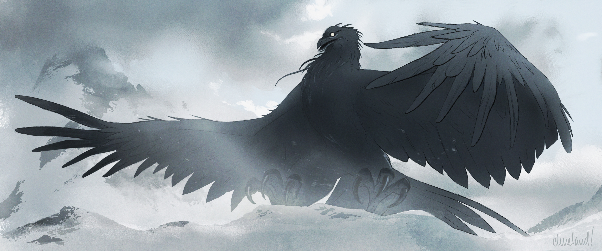
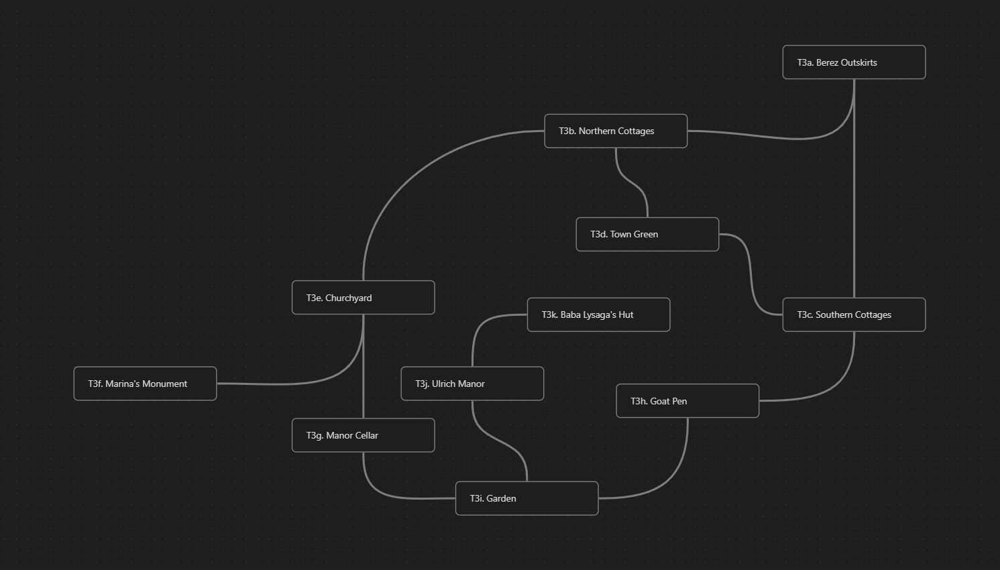

Uma aventura para cinco personagens de 9º nível.
Neste arco, após reivindicarem o punho quebrado da Sunsword nas profundezas do Templo Âmbar, os jogadores devem retornar ao Santuário dos Rozana, em Soldav, para comungar com as Damas dos Fanes. Para purificar os Fanes da corrupção de Strahd, eles descobrem, certos indivíduos precisam enterrar as gemas encantadas do Vinícola Feiticeiro dos Vinhos no centro de cada Fane: Urwin e Davian Martikov no Fane do Pântano; o Dr. Rudolph van Richten e Arturi Radanavich no Fane da Floresta; e Lady Fiona Wachter no Fane da Montanha. E quando Exethanter decifra o Tome of Strahd, ele entrega um aviso terrível: a menos que os jogadores consigam purificar os Fanes até o zênite da Grande Conjunção, Strahd finalmente escapará das Névoas — matando toda criatura viva em Barovia no processo.
Para que as reconsagrações funcionem, porém, os jogadores precisam primeiro ajudar Urwin e Davian Martikov a encerrar sua rixa, ajudar o Dr. Rudolph van Richten e Arturi Radanavich a erguer suas maldições, e ajudar Lady Fiona Wachter a encontrar a coragem e a esperança necessárias para desafiar o domínio de Strahd. Para piorar as coisas, a bruxa do pântano Baba Lysaga capturou os Martikov da vinícola e os aprisionou em Berez, as forças de Strahd estão à caça tanto de Arturi quanto de Van Richten, e um emissário do Castelo Ravenloft tomou o poder em Vallaki ao fazer reféns os filhos de Lady Wachter. Conseguirão os jogadores reacender a Sunsword, resgatar os Martikov, libertar Vallaki do domínio de Strahd e reconsagrar os Fanes antes que chegue o zênite da Grande Conjunção?
O arco abaixo é totalmente compatível com as versões existentes dos arcos anteriores. Contudo, o Capítulo T4. O Caçador de Monstros, bem como as seções correspondentes do guia em Arc C - Into the Valley, Arc E - The Missing Vistana, Arc K - The Fallen Abbey e Arc L - The Den of Wolves, devem passar por uma revisão significativa depois que o guia principal for concluído, com as seguintes mudanças:
- Arturi Radanavich será removido da campanha.
- Ezmerelda d’Avenir nasceu Ezmerelda Radanavich, e mudou de nome depois que o clã Radanavich foi massacrado.
- Ezmerelda não estava presente quando Van Richten matou os Radanavich, e portanto foi a única sobrevivente do massacre. (Ezmerelda foi posteriormente encontrada pelos Vistani do N9. Vistani Camp (p. 119), e foi criada como “irmã mais nova" de Luvash e Arrigal até deixar Barovia aos quinze anos.)
- Ezmerelda acredita que Strahd von Zarovich, ou seus servos, foram responsáveis pelas mortes de sua família estendida e, ao partir de Barovia, buscou a tutela de Van Richten para vingá-los.
- Dois anos após o início do treinamento, ao descobrir os objetivos de Ezmerelda, Van Richten consultou o vidente Inarin Alstar e ficou sabendo da maldição que pesava sobre ele.
- Movido pelo medo pela segurança de Ezmerelda e pela culpa por seu papel na morte da família dela, Van Richten desprezou os objetivos dela e afirmou que ela jamais valeria nada como caçadora de monstros.
- O ardil de Van Richten funcionou, e os dois se separaram pouco tempo depois. Van Richten então começou imediatamente a se preparar para retornar a Barovia, pretendendo matar Strahd von Zarovich antes que Ezmerelda pudesse fazê-lo — e morrer em penitência, se necessário.
- Quando os jogadores retornam pela primeira vez à Encruzilhada do Rio Luna após completarem Arc S - A Sword of Sunlight, eles são recebidos por Alexei, que implora para que o acompanhem até o acampamento Vistani.
- No acampamento Vistani, os jogadores encontram Escher, que procura por Rudolph van Richten, e podem ajudar os Vistani a expulsá-lo.
- Depois de lidar com Escher, os jogadores descobrem que Arabelle foi ferida recentemente quando um bando de carniçais atacou; embora Van Richten tenha feito o possível para estabilizá-la, ela está morrendo lentamente por causa do veneno dos carniçais.
- Os jogadores que tentarem curar Arabelle ouvem a maldição de Madame Radanavich (“Que vivas sempre entre monstros, e vejas todos os que amas morrerem sob suas garras."), que impede Arabelle de ser curada e agrava seus ferimentos. Van Richten também pode contar que sua maldição é responsável pelo estado de Arabelle — pois, apesar de todos os seus esforços, ele permitiu-se sentir afeto por ela, e assim apressou seu fim.
- Van Richten revela a verdade sobre o massacre dos Radanavich. Ezmerelda reage como ela e Arturi reagem mais adiante.
- Arabelle sussurra a seguinte profecia: “Quando o sangue de dois for sangue de um / e rodas partidas encontrarem línguas de fogo / os mortos cessarão sua guerra sem fim / e nunca mais hão de flagelar os vivos." (Para erguer a maldição de Van Richten, Ezmerelda e Van Richten precisam completar o rito de sangue Vistani, tornando Van Richten um Radanavich, e então queimar os destroços da caravana Radanavich.)
- De resto, o restante do capítulo transcorre em grande parte como descrito abaixo.
T1. Retorno a Soldav
T1a. A Estrada Estreita
O retorno dos jogadores a Soldav tem cinco quilômetros e meio de extensão e leva duas horas e vinte minutos. Os jogadores não enfrentam obstáculos durante a viagem de volta.
Uma versão anterior de Arc R - Trials of the Mountain afirmava que a jornada de Soldav até o Templo Âmbar tinha um quilômetro e meio de extensão. Essa distância foi atualizada apenas para campanhas novas.
Os jogadores podem obter acesso a Soldav conforme descrito em R5a. As Cataratas Gêmeas. Ao entrarem em R5b. O Túnel, são recebidos por Como e dois batedores que guardam a porta secreta.
Como fica feliz em ver os jogadores e pergunta, ansioso, por notícias de Diona e de seus companheiros. (Como, que antes esperava cortejar Meda, fica especialmente abalado ao saber do destino dela.)
Como conduz de bom grado os jogadores até T1b. O Santuário dos Rozana para falar com o Ancião Burebis a respeito do rito da divindade canalizada, ou até R5d. A Casa Comunal do Chefe, caso desejem descansar depois do tempo passado no Templo Âmbar. (Quando os jogadores chegam à casa comunal, Oroles está empilhando lenha perto da lareira, enquanto Diegia está fora resolvendo uma pequena disputa sobre a posse de um filhote de cabra. Oroles fica aliviado ao saber que Diona está bem, mas lamenta o destino de Meda e Duras. “Eles conheciam os riscos," diz ele, “mas nosso povo está pior sem eles.")
T1b. O Santuário dos Rozana
Quando os jogadores retornam ao Santuário dos Rozana, encontram-no em grande parte como descrito em R5f. O Santuário dos Rozana. Contudo, quando os jogadores cumprimentam ou procuram o Ancião Burebis pela primeira vez, leia:
Vários batimentos de coração se passam antes que, com o som de um suspiro áspero, o rosto do Ancião Burebis emerja da massa de raízes sobre a parede. Seus olhos se abrem debilmente, e sua carne cinza-azulada está agora encovada e pálida.
"Vocês voltaram," ele sussurra, com a voz trêmula e ressecada. “Ainda bem."
Burebis pode compartilhar as seguintes informações, se perguntado:
- Desde a última visita dos jogadores, sua saúde piorou. Ele espera que “sua hora" chegue em breve, e tem força apenas o bastante para falar com os jogadores agora.
- Ele acredita ter permanecido “muito além do meu tempo neste plano." Tossindo, acrescenta: “Mesmo para um membro da minha raça, por mais longevos que sejamos."
- Ele é grato pela oportunidade de auxiliar os jogadores em sua missão. “Se a montanha me sustentou por algum motivo," ele rouqueja, “foi por este."
Burebis está ansioso para saber o que os jogadores aprenderam e obtiveram no Templo Âmbar, especialmente se encontraram um meio de comungar com os espíritos das Damas Três. Se os jogadores lhe falarem do rito da divindade conjurada e pedirem “um lugar onde a presença das Damas seja mais forte," leia:
O rosto ancião de Burebis expira lentamente. Ao longo da parede, ao lado dele, as raízes farfalham e então se afastam, revelando uma passagem oculta que atravessa a montanha.
"Ela os levará à Caverna das Luzes — o lugar onde os Tauta comungaram pela primeira vez com os Rozana," ele retumba. “Se elas podem ouvir seu chamado em algum lugar, ouvirão ali."
T1c. A Caverna das Luzes
Se os jogadores entrarem no túnel que leva à Caverna das Luzes, leia:
A passagem de pedra serpenteia por seis metros através da montanha, desembocando em uma câmara circular de pedra com cerca de doze metros de diâmetro.
Cristais de um verde pálido irrompem da rocha ao longo das paredes, do chão e do teto, crescendo em formações cristalinas que variam de quinze centímetros a mais de um metro e oitenta de altura. Quatro entalhes gravados marcam as paredes entre eles, cada um com mais de noventa centímetros de altura: uma aranha, um lobo, um corvo e uma borboleta.
O entalhe da borboleta representa a Sonhadora, a quarta e mais jovem irmã dos Rozana. Contudo, nenhuma alma viva em Soldav sabe disso — nem mesmo Burebis. (Alguns, incluindo Oroles, especulam que ela representa os Tauta, que “renasceram" ao chegar ao vale, assim como uma borboleta renasce de sua crisálida.)
Se os jogadores mais tarde retornarem ao Santuário dos Rozana e perguntarem sobre a borboleta, Burebis conta apenas que certa vez perguntou à sua mentora, a Buscadora, a quem a borboleta pertencia. A Buscadora, porém, recusou-se a lhe dizer, observando somente que ela pertencia a uma história que já havia encontrado seu fim. (“Nunca a conheci habitando a tristeza," Burebis retumba, pensativo, “mas sempre achei ter ouvido um eco de luto em sua voz.")
Se os jogadores realizarem o rito da divindade conjurada dentro da Caverna das Luzes, leia:
Um tremor tênue parece percorrer as paredes da câmara, seguido por um pulso de luz cintilante que reluz através das formações cristalinas. Uma brisa suave e sem origem se levanta no ar, uma corrente morna e gentil que faz pequenos redemoinhos de sedimento girarem pelo chão.
Lentamente, os cristais brilham mais forte, uma luz crescente florescendo bem no fundo deles. Raios radiantes cruzam a câmara, refratando e refletindo e refratando outra vez até que, a partir de uma formação central, irrompem pelas paredes como auroras brilhantes e multicoloridas que cintilam e dançam sobre a pedra.
Um suspiro suave e feminino ecoa pela sala — seguido pela sensação inconfundível de uma presença nova e desconhecida.
Os jogadores podem usar o rito da divindade conjurada para invocar o espírito da Caçadora, da Tecelã ou de ambas. Qualquer tentativa de invocar os espíritos da Buscadora ou da Sonhadora não produz efeito algum. (A Buscadora não pode ser invocada porque está fisicamente encarnada como Madam Eva; a Sonhadora não pode ser invocada porque está selada dentro do Coração da Tristeza, no Castelo Ravenloft.)
Uma vez invocados, os espíritos da Caçadora e da Tecelã só conseguem se comunicar por meio de emoções telepáticas e imagens visuais, exibidas como auroras cambiantes nas paredes. As deusas também podem se comunicar por meio de mensagens curtas de três palavras ou menos, mas não mais que três vezes por dia cada uma. (Devido a seu estado enfraquecido, semelhante ao de vestígios, a Caçadora e a Tecelã atualmente têm dificuldade em transmitir pensamentos complexos por palavras.)
A Caçadora e a Tecelã podem usar as seguintes frases curtas para se comunicar quando não conseguirem responder às perguntas dos jogadores com suas auroras:
- “O CAÇADOR": Referindo-se ao Dr. Rudolph van Richten
- “O CAÇADO": Referindo-se a Arturi Radanavich
- “O VELHO CORVO": Referindo-se a Davian Martikov
- “O GUARDIÃO DA ÁGUA": Referindo-se a Urwin Martikov
- “A VIÚVA": Referindo-se a Lady Fiona Wachter
Uma vez invocadas, a Caçadora e/ou a Tecelã respondem de bom grado às perguntas dos jogadores, conforme descrito em Comungando com as Damas. Ao fazê-lo, elas podem dar as seguintes respostas às perguntas dos jogadores:
- Quem é você? Uma aurora iluminando o entalhe do lobo na parede (Caçadora) / Uma aurora iluminando o entalhe da aranha na parede (Tecelã)
- Onde está a Buscadora? Uma mulher se ajoelha diante de um corvo, que se transforma em névoa e flui para dentro do peito dela; asas de corvo então brotam dos ombros da mulher. (A imagem vem acompanhada de uma sensação de solidão e anseio.)
- O que a borboleta representa? Uma sepultura marcada pela neve que cai, acompanhada de uma sensação de luto e perda. (As Damas se recusam a elaborar.)
- O que são os Fanes? Um rio poderoso e caudaloso que encontra outro, lançando grandes jorros de água no ponto onde se unem. (Os rios representam linhas ley. O encontro deles representa um cruzamento de linhas ley e o poder que elas canalizam.)
- Como são os Fanes? / Onde ficam os Fanes? Três círculos de pedras eretas: um em meio a um brejo (o Fane do Pântano, sobreposto ao entalhe da aranha); um no alto de uma colina plana e em terraços cercada por árvores (o Fane da Floresta, sobreposto ao entalhe do lobo); e um ao longo de um esporão de montanha, logo abaixo de um promontório coberto de grama (o Fane da Montanha, sobreposto ao entalhe do corvo).
- O que aconteceu com os Fanes / Como os Fanes foram corrompidos? Uma sombra alta e esquálida de pé em meio a um círculo de pedras eretas, uma das mãos empunhando uma adaga e a outra sangrando sobre o chão, com o sangue subindo até engolir as pedras por inteiro. (A sombra é Strahd. O sangue representa o ritual que ele usou para profanar os Fanes e “tornar-se a Terra.")
- Como podemos reconsagrar os Fanes? Três gemas em forma de pinha: uma que brilha com luz viridiana (a gema da Tecelã, sobreposta ao entalhe da aranha); uma que brilha com luz esmeralda (a gema da Caçadora, sobreposta ao entalhe do lobo); uma que brilha com luz verde-salva (a gema da Buscadora, sobreposta ao entalhe do corvo).
- O que fazemos com as gemas? Dois corvos em duelo encerram sua rixa e enterram a gema viridiana no centro de um círculo de pedras eretas em meio a um brejo (sobreposto ao entalhe da aranha); uma velha raposa de pelo prateado afugenta uma horda de ratos que perseguia um pardal exausto enquanto um fogo arde atrás deles, e então torna-se ela própria um pardal, e os dois pardais enterram a gema esmeralda no centro de um círculo de pedras eretas no alto de uma colina plana e em terraços (sobreposto ao entalhe do lobo); uma gata velha e orgulhosa, com três filhotes dormindo a seus pés, afasta de si o morcego cujas asas lhe cobrem os olhos e volta o olhar para o nascer do sol, e então enterra a gema verde-salva no centro de um círculo de pedras eretas ao longo de um esporão baixo de montanha (sobreposto ao entalhe do corvo).
- Onde está a terceira gema? Uma grande cratera no topo de um pico de montanha. (Os jogadores podem reconhecer o pico como o cume do Mt. Ghakis.)
Se os jogadores invocarem o vestígio da Caçadora estando de posse da Lança da Caçadora, a lança começa a tremer diante da presença dela. Se um jogador apresentar a lança à Caçadora enquanto o espírito dela permanecer, leia:
---
Chamas verdes irrompem pela haste e pela lâmina da lança, embora a madeira e a pedra permaneçam intactas. Os cristais por toda a caverna zumbem em cálido reconhecimento, e o ar se enche de uma sensação de alegria feroz e triunfante. Lentamente, as chamas recuam e por fim desaparecem — mas a lança continua quente ao toque.
---
A lança então perde as propriedades de uma lança de sangue e torna-se uma lança do alerta +2 com as seguintes propriedades adicionais:
- Se você arremessar esta lança como um ataque à distância, ela voa de volta à sua mão no fim do seu turno.
- Você pode usar uma ação bônus para fazer chamas inofensivas de um verde-esmeralda envolverem a lâmina da lança, ou para extinguir essas chamas. Enquanto estiver em chamas, a lança emite luz plena em um raio de 6 metros e luz penumbra por mais 6 metros.
- Quando você acende a lâmina da lança, ou como uma ação bônus enquanto a lâmina está em chamas, você pode conjurar marca do caçador (hunter’s mark). Quando conjurada dessa forma, a magia não exige sua concentração. Você pode conjurar essa magia um número de vezes igual ao seu modificador de Sabedoria, e a lança recupera todos os usos gastos ao amanhecer.
Para que os jogadores reconsagrem os Fanes, os seguintes eventos precisam acontecer
- Davian e Urwin Martikov precisam se reconciliar e enterrar a gema viridiana no centro do Fane do Pântano, que fica do outro lado do Rio Luna, em frente a Berez.
- Arturi Radanavich e Rudolph van Richten precisam erguer suas maldições e enterrar a gema esmeralda no centro do Fane da Floresta, que se ergue ao redor da Árvore Gulthias em Yester Hill.
- Lady Fiona Wachter precisa negar a autoridade de Strahd, encontrar esperança no futuro e enterrar a gema verde-salva no centro do Fane da Montanha, que fica na base da colina de Velho Triturador de Ossos.
| Dama | Símbolo | Fane | Local do Fane | Gema | Local da Gema | Missão |
|---|---|---|---|---|---|---|
| Tecelã | Aranha | Pântano | Berez | Viridiana | Cabana de Baba Lysaga | Reconciliar Davian e Urwin Martikov |
| Caçadora | Lobo | Floresta | Yester Hill | Esmeralda | Estalagem Água Azul (Claudiu Martikov) | Erguer a Maldição de Van Richten |
| Buscadora | Corvo | Montanha | Velho Triturador de Ossos | Salva | Ninho do Roca | Convencer Lady Wachter a Desafiar Strahd |
Quando os jogadores se preparam para partir de Soldav rumo ao T1d. O Ninho do Roca, o Ancião Burebis morre. Quando isso acontece, as nuvens sobre Soldav, bem como os encantamentos de Burebis que protegiam a localização de Soldav de seus inimigos, dissipam-se imediatamente. Embora o Povo da Montanha fique perturbado com o desaparecimento das nuvens e lamente a perda de Burebis, o Chefe Diegia e Oroles insistem (se os jogadores perguntarem) que Soldav é “mais do que capaz de cuidar de si mesma" na ausência dos jogadores.
T1d. O Ninho do Roca
Se os jogadores perguntarem à família do Chefe Diegia como chegar ao cume do Mt. Ghakis, Como fica feliz em servir de guia. (Se os jogadores tiverem feito amizade com ele em Arc R - Trials of the Mountain, Scorilo insiste rispidamente em acompanhá-los também, observando que “alguém tem que impedir meu irmão de se matar.") Como avisa os jogadores, contudo, que se acredita que o roca do Mt. Ghakis faz seu ninho no topo da montanha, e pergunta, ansioso, se eles pretendem irritá-lo ou feri-lo.
A jornada de Soldav até o cume do Mt. Ghakis tem sete quilômetros de extensão e leva aproximadamente três horas. Enquanto os jogadores fazem a viagem, leia:
Pelo primeiro quilômetro e meio, a jornada segue o mesmo caminho que termina no Templo Âmbar — até que Como entra em uma trilha lateral quase invisível que sobe ainda mais entre os penhascos. A trilha vira uma série de curvas em ziguezague, abraçando as encostas mais íngremes da montanha enquanto o vale se afunda diante de vocês.
Depois de noventa metros de subida, a trilha se nivela e então vira para o sul, galgando o platô curvo logo abaixo do pico mais alto da montanha. O ar é rarefeito aqui, e nuvens baixas rolam como névoa comum pelas encostas geladas. Adiante, um penhasco afiado se ergue até o cume coberto de neve, obrigando vocês a escalar, mão sobre mão, na subida final até o topo.
Ao vencerem a última crista do penhasco, os rochedos se abrem para revelar uma depressão em forma de tigela do tamanho da praça central de Vallaki. Grandes pinheiros, de nove metros ou mais, foram arrancados pela raiz e dispostos ao redor das bordas da tigela, e o fundo da bacia está coberto por enormes galhadas de ramos e folhas de carvalho congelados. Todo o conjunto foi comprimido, como que por um peso descomunal, e penas negras enormes, da altura de um homem, cobrem o chão.
No centro da bacia, uma pequena luz verde-pálida cintila debilmente de seu lugar, aninhada entre duas galhadas de carvalho.
A luz é a terceira gema da vinícola Vinícola Feiticeiro dos Vinhos, roubada pelo roca dez anos atrás a mando de Madam Eva.
Se os jogadores se aproximarem ou tentarem recuperar a gema, o roca do Mt. Ghakis desce sobre a gema para confrontá-los. Leia:
O vento ruge numa ventania súbita, e os céus acima fervem sob o peso de uma imensa sombra alada. Um par de garras enormes rompe as nuvens, seguido por uma envergadura de asas negras e gargantuescas e — enfim — uma cabeça de corvo cujo bico poderia devorar um cavalo inteiro.
A montanha estremece quando o roca do Mt. Ghakis se lança contra a terra, pedras e galhos triturando sob suas garras. As penas de sua garganta se eriçam enquanto ele baixa a grande cabeça em advertência, um grasnado baixo e gutural emanando de seu papo.

"O Roca do Monte Ghakis", de Caleb Cleveland. Apoie-o no Patreon!O roca não deixará os jogadores levarem a gema a menos que eles provem ser dignos disso. Os jogadores podem provar seu valor pelos métodos a seguir, ou de qualquer outra forma razoável:
- Os jogadores podem lutar contra o roca e feri-lo gravemente (veja as estatísticas abaixo).
- Os jogadores podem revelar a lâmina acesa da Sunsword.
- Os jogadores podem demonstrar seu conhecimento do papel do roca no roubo da gema, bem como do motivo pelo qual ele o fez (ou seja, manter a gema a salvo de Strahd, por instrução de Madam Eva).
O roca ataca se os jogadores tentarem roubar a gema ou agirem de forma desonrosa (por exemplo, tentando conjurar enfeitiçar monstro (charm monster) sobre ele).
O roca tem as estatísticas de um roca comum, mas com as seguintes mudanças:
- Ele pode usar uma ação bônus para se transformar em um corvo Minúsculo ou retornar à sua forma verdadeira. Fora seu tamanho e suas ações, suas estatísticas de jogo são as mesmas em cada forma.
- Ele recupera 40 pontos de vida no início de cada um de seus turnos se estiver em contato físico com a pedra do Mt. Ghakis. O roca só morre se começar seu turno com 0 pontos de vida e não se regenerar.
- Ele pode realizar até três reações por rodada, mas apenas uma por turno. Se um efeito ou condição o impediria de realizar reações, ele perde uma reação em vez disso.
- Ele ganha a seguinte reação: Indomável. Gatilho: Uma criatura hostil termina seu turno. Efeito: O roca pode repetir o teste de resistência contra um efeito ou condição que o esteja afetando no momento. (Esta reação não tem efeito se o efeito ou condição originalmente não exigiu que ele falhasse em um teste de resistência.)
- Ele ganha a seguinte reação: Vendaval do Corvo (1/rodada). Gatilho: Uma criatura hostil termina seu turno a até 3 metros do roca. Efeito: O roca bate suas poderosas asas, forçando cada criatura em um cone de 9 metros centrado na primeira criatura a ser bem-sucedida em um teste de resistência de Força CD 21 ou ser arremessada 6 metros para longe. Uma criatura que falhe no teste de resistência por 10 ou mais também cai caída.
Se os jogadores provarem ser dignos, leia:
Um grande estremecimento percorre o corpo do roca, seguido por um trinado profundo e retumbante que ecoa de seu bico. Ele dá um passo atrás e então baixa lentamente a cabeça numa reverência inconfundível.
Depois que os jogadores provam seu valor, o roca confirma de bom grado as seguintes informações com acenos e balanços da cabeça (embora não ofereça espontaneamente informações que os jogadores ainda não saibam ou suspeitem):
- Seu nome verdadeiro é Turul, e ele foi outrora o familiar da Buscadora, que hoje é Madam Eva.
- Seu ninho fica no cume do Mt. Ghakis.
- Ele não é amigo de Strahd.
- Se os jogadores já o encontraram antes na forma de um corvo junto ao Rio Luna em Arc M - The Dragon's Manor, era ele o corvo que encontraram.
- Foi ele que roubou a terceira gema encantada da vinícola Vinícola Feiticeiro dos Vinhos a mando de Madam Eva — para mantê-la a salvo de Strahd e aguardar o dia em que os salvadores previstos pela Buscadora viriam buscá-la.
- Ele não pode (e não vai) seguir os jogadores até o vale lá embaixo para ajudá-los na luta contra Strahd. (Seu lugar é o Mt. Ghakis.) Ele pode, contudo, transportá-los montanha abaixo até um destino de sua escolha.
Se os jogadores não pedirem carona ao roca, ele baixa a cabeça e abaixa uma asa até o chão na direção deles, então inclina a cabeça com ar inquisitivo, como se os convidasse a subir.
O roca está disposto a levar os jogadores voando a qualquer local de Barovia, exceto o Castelo Ravenloft. Devido a seu enorme tamanho e velocidade, nenhuma viagem leva mais de vinte minutos. Depois de entregar os jogadores, ele permanece por no máximo um minuto e então retorna ao Mt. Ghakis.
T2. Descendo a Montanha
Vinícola Feiticeiro dos Vinhos a Vallaki. A jornada entre o Vinícola Feiticeiro dos Vinhos e Vallaki, em qualquer sentido, tem dez quilômetros de extensão e leva pouco mais de duas horas.
Vinícola Feiticeiro dos Vinhos a Berez. A jornada entre o Vinícola Feiticeiro dos Vinhos e Berez, em qualquer sentido, tem quinze quilômetros de extensão e leva pouco mais de três horas.
Vallaki a Berez. A jornada de Vallaki até Berez tem sete quilômetros de extensão e leva uma hora e meia.
Quando os jogadores descem a montanha, Kasimir revela que precisa retornar ao acampamento dos elfos do crepúsculo em N9. Vistani Camp (p. 119) para garantir que seu povo esteja protegido. “Quando Patrina apareceu pela primeira vez em meus sonhos, jamais me imaginei como aquele que empunharia a arma de luz solar contra Zarovich," diz ele. “Eu sabia que a desenterraria — que a guardaria, se preciso, até que encontrasse a mão a que pertence. Mas meu lugar é junto ao meu povo, e é hora de eu voltar para eles."
Antes de partir, Kasimir pergunta, pensativo: “Os Vistani têm uma tradição — o rito de sangue, como o chamam — pela qual um homem pode tornar-se Vistani, ainda que não tenha nascido entre suas carroças. Quando chegamos ao vale, compartilhei o rito de sangue com o homem que nos trouxe até aqui; deixei Kasimir de Othrondil morrer e renasci como Kasimir Velikov, irmão de sangue dos Vistani." Ele faz uma pausa e continua: “Mas Patrina jamais conseguiu soltar o passado. Enquanto eu buscava seguir em frente, ela só sabia olhar para trás. Não consigo deixar de me perguntar, porém — se ela tivesse completado o rito de sangue como eu fiz, e assim se tornado Vistani, teria trilhado o caminho sombrio que trilhou?"
Kasimir é grato por quaisquer reflexões e ideias que os jogadores queiram compartilhar.
Após o sequestro de sua família pelas mãos de Baba Lysaga em T3. A Bruxa de Berez, Urwin Martikov enviou corvos mensageiros aos seguintes locais para aguardar o retorno dos jogadores: o bosque próximo a Chapter 12: The Wizard of Wines (p. 173); o bosque próximo a I. Black Carriage (p. 37); P. Luna River Crossroads (p. 40); e R. Raven River Crossroads (p. 40). Cada mensageiro carrega a seguinte carta, amarrada à sua pata na forma de um pequeno rolo de pergaminho:
---
Emergência — venham ao Estalagem Água Azul. —Urwin
---
Assim que os jogadores tiverem recebido a mensagem, o corvo voa para longe a fim de avisar os outros corvos, bem como Urwin, de que sua mensagem foi entregue.
Se alguém falar com ele usando a magia falar com animais (speak with animals), o corvo conta que a vinícola foi atacada por um “grande mal," e que seu bando fala de um único sobrevivente que fugiu para o “lar da água azul." (O corvo, que não presenciou o ataque pessoalmente, refere-se a Baba Lysaga e ao Estalagem Água Azul, respectivamente.)
Pouco depois de os jogadores descerem a montanha (por exemplo, ao concluírem sua investigação do Vinícola Feiticeiro dos Vinhos), se eles fizeram amizade com ele ou o ajudaram em Arc H - The Lost Soul, um deles recebe o seguinte recado (sending) de Victor Vallakovich: Preciso da sua ajuda. Lady Wachter nos traiu, a cidade enlouqueceu e não consigo chegar até Stella. Quando vocês voltam?
Se os jogadores pedirem mais informações, Victor responde com o seguinte recado adicional: Coisa demais para contar assim. Venham à casa da minha família. Não deixem os guardas do portão verem vocês.
T2a. O Vinícola Feiticeiro dos Vinhos
Se os jogadores retornarem ao Chapter 12: The Wizard of Wines (p. 173), leia o seguinte enquanto eles se aproximam da vinícola:
Grandes buracos desfiguram a parede norte do segundo andar da vinícola, revelando cômodos estilhaçados e cobertos de escombros lá dentro. Abaixo, vários espantalhos desconhecidos se erguem em silêncio no meio do vinhedo, seus olhares pintados espreitando através da névoa.
Depois de saber da vitória dos jogadores em Arc J - The Stolen Gem, a bruxa do pântano Baba Lysaga decidiu puni-los por sua ousadia e começou a fabricar mais espantalhos e strix para auxiliá-la em sua empreitada. Após ouvir falar dos feitos dos jogadores em Arc P - Ravenloft Heist e observar o farol de Argynvost aceso depois dos eventos de Arc Q - A Shining Beacon, Lysaga colocou seu plano vil em movimento.
Enquanto os jogadores se demoravam no Mt. Ghakis, Baba Lysaga conduziu sua cabana rastejante pelo Rio Luna até o Lago Luna, e então avançou destruindo tudo pela Svalich Woods até alcançar o vinhedo do Vinícola Feiticeiro dos Vinhos. Ela, junto com seus espantalhos e strix recém-fabricados, assaltou a vinícola na calada da noite, primeiro arrancando Martin e Viggo de suas camas e depois aprisionando os demais Martikov em gaiolas de prata enquanto lutavam em vão para resgatar as crianças. Apenas o adolescente Claudiu escapou, levando a única gema encantada restante da vinícola e fugindo sozinho pelo céu noturno até Vallaki, onde buscou refúgio no Estalagem Água Azul.
Agora, Baba Lysaga espreita nas profundezas de Berez, esperando que os jogadores venham resgatar seus amados amigos emplumados — e enfim morram por suas mãos.
Um jogador que passe em um teste de Sabedoria (Sobrevivência) CD 13 identifica sulcos e valas enormes marcando a terra úmida numa espécie de “trilha." O rastro, deixado pela cabana rastejante de Baba Lysaga, segue para o sul através da Svalich Woods até o Lago Luna, depois para o norte, sob o Tsolenka Pass, ao longo do Rio Luna, até terminar em Chapter 10: The Ruins of Berez (p. 161). Se os jogadores seguirem o rastro, sua jornada até Berez tem treze quilômetros e meio de extensão e leva cinco horas e vinte minutos.
Um total de sete espantalhos permanece imóvel e silencioso ao redor da vinícola. Eles atacam qualquer criatura que tente entrar na vinícola.
Nível de Combate: Leve Nível Esperado dos Personagens: 9 Aliados: Ireena Kolyana (ND 2), Ezmerelda d'Avenir (ND 4) Consumo Esperado de PV: 18%
Inimigos:
| 3 Jogadores | 4 Jogadores | 5 Jogadores | 6 Jogadores | |
|---|---|---|---|---|
| Espantalho | 5 | 6 | 7 | 8 |
Se os jogadores entrarem na vinícola, encontram-na vazia. Se subirem ao segundo andar, descobrem que a parede entre os dois W19. Sleeping Quarters (p. 179) foi reduzida a lascas e escombros, e que a parede sul comum aos dois quartos foi marcada com a seguinte mensagem, gravada na madeira chamuscada e enegrecida: “Uma Mãe Nunca Esquece."
T2b. A Cidade de Vallaki
Portões da Cidade
Se os jogadores retornarem a Vallaki, encontram cada portão guardado por dois guardas, dois cultistas leais a Lady Wachter e um fanático de culto. Os jogadores que já conheceram os fanáticos de culto Andrej, Boris e Miruna em Arc H - The Lost Soul os reconhecem, respectivamente, no Portão do Poente a oeste, no Portão Zarovich ao norte e no Portão da Manhã a leste.
Se os jogadores tentarem entrar pelos portões, os guardas informam solenemente que têm ordens estritas de proibir a entrada dos jogadores em Vallaki. Os fanáticos de culto podem acrescentar que essas ordens foram emitidas pela Burgomestra Lady Fiona Wachter, por motivos desconhecidos. Um jogador que passe em um teste de Carisma (Intimidação) CD 15 pode convencer os guardas a deixá-los passar. Caso contrário, os guardas e cultistas atacam se os jogadores desafiarem a ordem e tentarem entrar em Vallaki assim mesmo.
Se os jogadores matarem algum guarda ou cultista, os guardas e cultistas lutam até a morte, tentando matar os jogadores em retribuição. Caso contrário, os guardas e cultistas usam táticas não letais, rendendo-se se três ou mais guardas e/ou cultistas forem derrubados inconscientes.
As patrulhas da guarda de Vallaki são em grande parte como descritas em Town Gates (p. 95). Contudo, mais seis cultistas leais a Lady Wachter patrulham as muralhas ao lado dos guardas.
Após os feitos dos jogadores em Arc Q - A Shining Beacon, e ao saber da relação próxima entre os jogadores e Lady Fiona Wachter depois de Arc F - Lady Wachter's Wish e Arc H - The Lost Soul, Strahd enviou um emissário do Castelo Ravenloft para colocar Lady Wachter — e Vallaki — na linha. Esperando semear medo e desespero às vésperas da Grande Conjunção, Strahd ordenou a seu emissário que “quebrasse o espírito da cidade" — por quaisquer meios necessários. (Se Volenta Popofsky, Ludmilla Vilisevic ou Anastrasya Karelova ainda estiverem vivas, Strahd designou uma delas como sua emissária. Caso contrário, ele transformou sua fanática espiã Vistani Eliza em uma vampira serva e a designou como sua emissária. Se nem Volenta, nem Ludmilla, nem Anastrasya, nem Eliza sobreviverem, Strahd escolheu em vez disso a vampira serva Helga, que é como descrita em K32. Maid in Hell (p. 64).
Ao chegar a Wachterhaus, o emissário de Strahd apresentou a Lady Wachter uma proclamação assinada e selada do Castelo Ravenloft designando-o como a “voz" oficial de Strahd em Vallaki. Uma relutante Lady Wachter convidou o emissário a entrar em sua casa e permitiu que ele colocasse um caixão em N4q. Storage Room (p. 114).
Naquela noite, o emissário usou uma poção do sono desperto, preparada pelo coven de bruxas barovianas do Castelo Ravenloft, para lançar Stella, Nikolai e Karl Wachter em um transe inconsciente. Os cúmplices do emissário, dois vampiros servos leais, então conduziram secretamente os três filhos de Lady Wachter para fora de Wachterhaus até N5. Arasek Stockyard (p. 115), mataram Gunther e Yelena Arasek e trancaram as crianças Wachter em um armazém contíguo à N6. Coffin Maker’s Shop (p. 116).
Na manhã seguinte, o emissário apresentou a Lady Wachter uma lista de éditos a serem promulgados — e a advertiu de que, embora seus filhos estivessem “em lugar seguro," assim permaneceriam apenas enquanto durasse o “bom comportamento" de Lady Wachter. Percebendo que o emissário pretendia usar seus filhos como reféns, Lady Wachter tem obedecido às ordens dele desde então.
Até agora, Lady Wachter ordenou que os jogadores fossem barrados em Vallaki e que cartazes fossem afixados por toda a cidade declarando-os inimigos de Vallaki. Ela também proibiu os vallakianos de deixarem a cidade, ordenou a prisão do Padre Lucian Petrovich por “traição" e mandou fechar o Estalagem Água Azul por “abrigar inimigos de Vallaki." Se os jogadores fizeram amizade com ele, quando o fabricante de brinquedos Gadof Blinsky começou a vender bonecas com a forma dos jogadores, Lady Wachter também mandou colocar Blinsky no pelourinho.
Corre o boato de um grupo de guardas vallakianos que foi a Wachterhaus protestar contra os novos éditos de Lady Wachter — e que desapareceu, presumivelmente morto ou levado para o Castelo Ravenloft. Também é de conhecimento geral que enxames de morcegos agora dormem em algum lugar de Vallaki, saindo pelas ruas todas as noites para espionar em nome da Burgomestra. Assim, embora alguns vallakianos se incomodem com o novo regime, ninguém ousa enfrentá-lo.
Uma criatura que beba esta poção deve ser bem-sucedida em um teste de resistência de Sabedoria CD 17 ou adormecer por uma hora. Enquanto dorme dessa forma, ela ouve e obedece a quaisquer comandos dados em um idioma que compreenda.
A localização dos reféns é ocultada por um farol do santuário particular (veja abaixo), que o emissário de Strahd obteve de Baba Lysaga e instalou no Arasek Stockyard. (É por isso que Victor não tem conseguido alcançar Stella com sua magia recado.)
Item maravilhoso, raro
Uma vez por dia (reiniciando ao amanhecer), o portador desta gaiola de ferro de quinze centímetros pode pronunciar sua palavra de comando para conjurar santuário particular (private sanctum) sem componentes materiais. Quando conjurada dessa forma em ambiente fechado, o santuário particular não se estende além das paredes da estrutura que o contém.
Igreja de St. Andral
Se os jogadores passarem pela N1. St. Andral’s Church (p. 97) durante o dia, leia:
Uma mulher de cabelos escuros, vestindo um manto cinza, está de pé nos degraus da igreja, com uma pequena multidão em círculo abaixo dela. Um cartaz desconhecido foi afixado nas portas da igreja atrás dela.
"A luz prateada é uma mensagem de Ezra, Aquela Que Habita nas Névoas," proclama a mulher. “Não devemos nos render às trevas, nem nos perder em fantasias de uma aurora dourada. Devemos vergar com o vento e buscar consolo na névoa, pois só ali poderemos suportar o que precisa ser suportado."
Se os jogadores já a encontraram em Arc H - The Lost Soul, eles a reconhecem como a fanática de culto Ruxandra, seguidora leal de Lady Wachter. (A “luz prateada" a que Ruxandra se refere é o farol aceso de Argynvostholt.) Se examinado, o cartaz diz: “CUIDADO: ARMADOS E PERIGOSOS. RELATE QUALQUER AVISTAMENTO À BURGOMESTRA," e traz um esboço grosseiro e uma descrição dos jogadores.
Se os jogadores continuarem a ouvir seu sermão, Ruxandra prega à multidão que, “como Ezra nos ensina, desejar é ferir a si mesmo. Quando lutamos, ferimos apenas a nós mesmos e àqueles que amamos. Para encontrar a paz, precisamos nos render, abrindo-nos para aquilo que é, em vez daquilo que não pode ser. Nos sonhos, só encontraremos amargura; somente pela aceitação encontraremos consolo e conforto."
Se Milivoj estiver vivo e em Vallaki, acrescente:
A uns dez metros de distância, Milivoj está ajoelhado no cemitério da igreja, com uma pequena pilha de ervas daninhas sob suas luvas enlameadas e um manto marrom sobre os ombros. Ele encara a mulher em silêncio, de longe.
Se os jogadores se fizerem notar por ele, Milivoj os cumprimenta com gratidão ansiosa. Ele pode compartilhar as seguintes informações:
- Três dias atrás, Lady Wachter começou a promulgar novos éditos, que ela afirma “trazerem a autoridade do Castelo Ravenloft."
- Seu primeiro édito foi prender o Padre Lucian por “traição" contra Vallaki e o Castelo Ravenloft. (Milivoj não sabe onde Lucian está preso.)
- Com o Padre Lucian preso, a igreja fechou as portas, embora Milivoj tenha feito o possível para manter o terreno e o interior. Ele também convidou Yeska para morar com sua família.
- Desde o fechamento da igreja, um pequeno grupo de vallakianos começou a usar os degraus da frente da igreja para pregar a religião de Ezra, a Deusa das Névoas. (A boca de Milivoj se retorce de desgosto ao ouvir o nome. “Os sermões do Padre Lucian sempre nos encorajavam a sonhar com um futuro mais luminoso," cospe ele. “Mas essa tal de ‘Ezra’ parece só querer que todo mundo se sente e fique calado.")
- Lady Wachter também promulgou outros éditos. Ela fechou o Estalagem Água Azul, proibiu a maioria dos vallakianos de sair das muralhas e (se os jogadores já fizeram amizade com Gadof Blinsky) mandou o fabricante de brinquedos local para o pelourinho. (Milivoj, que sempre achou a Brinquedos Blinsky bastante sinistra, não sabe bem o que sentir a respeito disso.) Lady Wachter também mandou afixar cartazes alertando sobre os jogadores e pedindo que qualquer avistamento seja relatado em Wachterhaus.
- Diz o boato que um grupo de guardas vallakianos foi a Wachterhaus protestar contra os éditos de Lady Wachter, e que todos eles foram mortos ou enviados ao Castelo Ravenloft.
- Todas as noites, morcegos enchem as ruas de Vallaki, muitos deles pendurados nos telhados ou escutando às janelas. Ninguém sabe onde eles dormem durante o dia.
Milivoj pede aos jogadores que convençam Lady Wachter a libertar o Padre Lucian da prisão — e, acrescenta ele sombriamente, que o libertem eles mesmos se ela se recusar. Ele é grato por qualquer ajuda que os jogadores possam prometer ou oferecer.
O Estalagem Água Azul
Se os jogadores passarem por ou se aproximarem do N2. Blue Water Inn (p. 98), encontram a taverna aparentemente deserta. Uma grande placa foi pregada na porta da frente, e diz: “FECHADO POR ORDEM DA BURGOMESTRA." (A porta está destrancada.)
Se os jogadores entrarem na estalagem durante o dia, encontram a N2c. Taproom (p. 100) e a N2e. Kitchen (p. 101) vazias, mas ouvem a voz de Danika atravessando a N2j. Great Balcony (p. 102), vinda do N2o. Boys’ Bedroom (p. 102).
Um jogador que passe em um teste de Sabedoria (Percepção) CD 10 escuta Danika dizendo: “—sei que vocês querem ir lá fora, mas preciso que vocês fiquem longe de encrenca agora, e isso significa ficar dentro de casa. Está bem?" Um momento depois, as vozes de Brom e Bray murmuram algo ininteligível, e Danika responde: “Eu sabia que podia contar com a compreensão de vocês. Agora brinquem quietinhos, tá?" Ela então sai do N2o. Boys’ Bedroom (p. 102).
Se Milivoj estiver morto ou preso no Castelo Ravenloft, Yeska é hóspede do Estalagem Água Azul e recebeu um catre no N2o. Boys’ Bedroom (p. 102) enquanto espera e torce pela libertação do Padre Lucian. Se os jogadores falarem com ele, ele pede que “tragam o Padre Lucian de volta" enquanto segura as lágrimas.
Falando com Danika. Danika fica grata em ver os jogadores e insiste em preparar chá quente e sopa de batata requentada na cozinha. Embora ela espere saber dos feitos recentes dos jogadores, também pode compartilhar as seguintes informações, se perguntada:
- Urwin está fora da estalagem no momento, colhendo informações com um bando de corvos que passa pelo bosque a leste. Ele deve voltar dentro de uma hora.
- O Estalagem Água Azul está fechado no momento, por ordem de Lady Wachter, por “abrigar traidores de Vallaki e do Castelo Ravenloft." Não recebe nenhum cliente há dois dias.
- Três dias atrás, Lady Wachter começou a promulgar novos éditos, que ela afirma “trazerem a autoridade do Castelo Ravenloft." Além de fechar a estalagem, ela prendeu o sacerdote da Igreja de St. Andral, proibiu a maioria dos vallakianos de sair das muralhas e (se os jogadores já fizeram amizade com Blinsky) mandou o fabricante de brinquedos local, Gadof Blinsky, para o pelourinho.
- Duas noites atrás, um grupo de guardas vallakianos foi a Wachterhaus protestar contra os éditos de Lady Wachter. Nenhum voltou.
- Dezenas de enxames de morcegos se instalaram no Arasek Stockyard, saindo em revoada toda noite para encher as ruas de Vallaki, muitos deles pendurados nos telhados ou escutando às janelas. Os morcegos são hostis aos corvos, forçando os corvos espiões de Urwin a contornar as muralhas da cidade em vez de atravessá-la.
Danika também pode compartilhar notícias preocupantes a respeito da vinícola Vinícola Feiticeiro dos Vinhos:
- Duas noites atrás, a bruxa de Berez, Baba Lysaga, atacou o Vinícola Feiticeiro dos Vinhos montada em uma cabana viva, que despedaçou as paredes superiores da vinícola na calada da noite.
- Claudiu, o filho adolescente mais velho de Stefenia e Dag, escapou sozinho e está hospedado no N2n. Private Guest Room (p. 102). O resto do clã Martikov foi capturado e levado embora — presumivelmente para Berez.
- Claudiu trouxe consigo a última gema encantada da vinícola, que Urwin e Danika guardaram em segurança. (A gema está escondida no baú trancado no N2h. Ravens’ Loft (p. 101). Se Izek Strazni encontrou o baú anteriormente em Arc G - The Strazni Siblings, os Martikov o transferiram para o N2q. Secret Attic (p. 103).)
- Os corvos espiões de Urwin têm trabalhado para rastrear os Martikov até Berez. Urwin espera ter mais informações quando voltar, dentro de uma hora.
- Ontem à noite, Claudiu tentou escapulir do Estalagem Água Azul para voar até Berez. Urwin o impediu e o trouxe de volta à estalagem. (Danika e Urwin concordam que Claudiu, com quinze anos, é jovem e inexperiente demais para receber missões de campo dos Guardiões da Pena, e que Baba Lysaga certamente o capturaria ou o massacraria se o encontrasse por lá.)
Se os jogadores perguntarem onde está Muriel Vinshaw, Danika pode contar que Muriel foi despachada para a Svalich Wood, a leste, numa missão de recrutar bandos de corvos para auxiliar os Guardiões da Pena. “Urwin acha que vem tempestade aí," diz Danika baixinho. “Não duvido que ele esteja certo."
Falando com Claudiu. Se os jogadores procurarem falar com Claudiu, podem encontrá-lo sentado na cama do N2n. Private Guest Room (p. 102), encarando em silêncio a janela sul. Claudiu, que está chocado e desanimado após o ataque de Baba Lysaga, pode compartilhar as seguintes informações, se perguntado:
- Duas noites atrás, ele e seus irmãos, Martin e Viggo, dormiam em suas camas no W19. Sleeping Quarters (p. 179) da vinícola Vinícola Feiticeiro dos Vinhos quando um par de enormes raízes vivas de árvore atravessou a parede e agarrou Martin e Viggo.
- Quando o “Tio Adrian," o “Tio Elvir," a “Mãe" (Stefania), o “Pai" (Dag) e o “Vovô Davian" entraram na luta, um par de aves gigantes semelhantes a espantalhos — strix — os encheu de agulhas de prata, impedindo-os de se transformar, enquanto um pelotão em marcha de espantalhos usava seus olhares aterrorizantes para paralisá-los lá de baixo.
- As raízes pertenciam a um enorme toco de árvore vivo, sobre o qual repousava uma cabana caindo aos pedaços. A cabana, as aves e os espantalhos eram comandados por uma velha gargalhante — a bruxa Baba Lysaga —, que supervisionava a luta do alto de um crânio de gigante voador que ela cavalgava pelos ares.
- Durante o ataque, Claudiu viu uma luz verde familiar vazando pela porta da cabana — uma luz que ele reconheceu como pertencente a uma das gemas encantadas roubadas da vinícola. (Se perguntado, Claudiu compartilha sua convicção de que a gema roubada está escondida em algum lugar dentro da cabana.)
- Claudiu escapou com a última gema encantada da vinícola em meio ao caos, mas todos os membros de sua família foram capturados. “Eu fugi," ele rosna, sufocando um soluço engasgado enquanto suas mãos se fecham em punhos trêmulos. “Eles estavam em perigo, e a única coisa em que eu conseguia pensar era fugir." (Claudiu não sabe para onde sua família foi levada, mas acredita que estejam em Berez.)
- Claudiu implorou a Danika e Urwin que o deixassem viajar até Berez para resgatar sua família. Contudo, quando tentou partir em segredo ontem à noite, Urwin e um bando de corvos o interceptaram na Svalich Wood ao sul e ordenaram que voltasse para o Estalagem Água Azul. (Frustrado, e odiando a si mesmo por sua covardia e passividade, Claudiu obedeceu.)
Claudiu exige que os jogadores resgatem sua família — e, mais baixinho, pede que o levem junto quando forem. “Eu fugi uma vez," diz ele com ferocidade. “Não posso fugir de novo." (Se pressionado, Claudiu admite a contragosto que não foi oficialmente iniciado nos Guardiões da Pena, que tem apenas quinze anos e que, embora seu pai Dag venha treinando-o no uso de uma espada curta e de uma besta, ele ainda não domina nenhuma das duas.)
O Retorno de Urwin. Urwin volta dentro de uma hora após a chegada dos jogadores, entrando pela pequena janela sul do N2q. Secret Attic (p. 103) em forma de corvo, e então assumindo a forma humana e descendo pelo N2p. Master Bedroom (p. 103) até a N2c. Taproom (p. 100).
Urwin fica sombriamente satisfeito em ver os jogadores, mas claramente frustrado. Ele pode compartilhar as seguintes informações, se perguntado:
- Nenhum de seus corvos conseguiu vislumbrar Berez, que foi engolida por uma enorme estrutura semelhante a uma sebe, feita de trepadeiras e espinhos, com dezenas de metros de altura.
- Dezenas de enxames de morcegos se instalaram no Arasek Stockyard, saindo em revoada toda noite para encher as ruas de Vallaki, muitos deles pendurados nos telhados ou escutando às janelas. Os morcegos, que visitam Wachterhaus com frequência, são hostis aos corvos, forçando os corvos espiões de Urwin a contornar as muralhas da cidade em vez de atravessá-la. (Se perguntado, Urwin pode contar que os morcegos parecem dormir no armazém imediatamente à esquerda da N6. Coffin Maker’s Shop (p. 116).)
- Contudo, ontem à noite, um de seus bandos vislumbrou um indivíduo estranho e encapuzado saindo de Wachterhaus pela entrada dos fundos e então sumindo pelos becos da cidade. Esse indivíduo não corresponde a nenhuma descrição conhecida da família Wachter ou de seus criados, e Urwin não tem certeza de quem possa ser. (Por causa da presença dos morcegos, os corvos não conseguiram ver se a figura encapuzada chegou a voltar.)
Urwin está transtornado com a captura de sua família por Baba Lysaga, e frustrado consigo mesmo por sua incapacidade de ajudá-los a partir de Vallaki. “Um mestre de espiões sem espiões," ele rosna baixinho. “Sou inútil para eles aqui — mas o que mais posso fazer?"
Urwin se desculpa por pedir mais uma vez que os jogadores ajudem sua família, mas pede que a resgatem das garras de Baba Lysaga. Se os jogadores partirem para Berez, prossiga para T3. A Bruxa de Berez.
Urwin fica surpreso se os jogadores o convidarem a viajar até Berez com eles, e pede para conversar com Danika antes de aceitar. Após uma breve conversa em particular, ele concorda em se juntar aos jogadores para resgatar sua família, e então recolhe uma espada curta, uma besta pesada com virotes e um conjunto de armadura de couro batido de um baú sob a cama do N2p. Master Bedroom (p. 103).
Urwin Martikov
Humanoide Médio (humano, metamorfo), leal e bomClasse de Armadura 15 (armadura de couro batido) (16 com Farol de Proteção)
Pontos de Vida 63 (14d8)
Deslocamento 9 m (voo 15 m nas formas de corvo e híbrida)
| FOR | DES | CON | INT | SAB | CAR |
|---|---|---|---|---|---|
| 10 (+0) | 16 (+3) | 11 (+0) | 13 (+1) | 15 (+2) | 14 (+2) |
Perícias Intuição +4, Percepção +6
Sentidos Percepção passiva 16
Idiomas Comum (não consegue falar na forma de corvo)
Nível de Desafio 2
Bônus de Proficiência +2
Regeneração. Urwin recupera 10 pontos de vida no início de seu turno se não tiver sofrido dano necrótico ou dano de concussão, perfurante ou cortante de uma arma prateada desde seu último turno. Ele só morre se começar seu turno com 0 pontos de vida e não se regenerar.
Imitação. Urwin consegue imitar sons simples que já tenha ouvido, como uma pessoa sussurrando, um bebê chorando ou um animal chilreando. Uma criatura que ouça os sons pode perceber que são imitações com um teste de Sabedoria (Intuição) CD 10 bem-sucedido.
Ações
Ataque Múltiplo. Urwin realiza dois ataques com arma, um dos quais pode ser com sua besta pesada.
Espada Curta. (Apenas na Forma Humanoide ou Híbrida) Ataque com Arma Corpo a Corpo: +5 para acertar, alcance 1,5 m, um alvo. Acerto: 6 (1d6 + 3) de dano perfurante.
Besta Pesada. (Apenas na Forma Humanoide ou Híbrida) Ataque com Arma à Distância: +5 para acertar, alcance 30/120 m, um alvo. Acerto: 8 (1d10 + 3) de dano perfurante.
Bico. (Apenas na Forma de Corvo ou Híbrida) Ataque com Arma Corpo a Corpo: +5 para acertar, alcance 1,5 m, um alvo. Acerto: 1 de dano perfurante na forma de corvo, ou 5 (1d4 + 3) de dano perfurante na forma híbrida. Se o alvo for humanoide, ele deve ser bem-sucedido em um teste de resistência de Constituição CD 10 ou ser amaldiçoado com a licantropia de corvo-licantropo.
Ações Bônus
Metamorfose. Urwin se transforma em um híbrido de corvo e humanoide ou em um corvo, ou retorna à sua forma humana. Suas estatísticas, tirando seu tamanho, são as mesmas em cada forma. Qualquer equipamento que ele esteja vestindo ou carregando não é transformado. Ele reverte à sua forma humana se morrer.
Se os jogadores mostrarem a Urwin a gema que obtiveram em T1d. O Ninho do Roca, ele presume que a recuperaram em Berez e pergunta, maravilhado, como conseguiram tal feito. Se os jogadores lhe informarem que essa é a terceira gema encantada, roubada da vinícola dez anos atrás, Urwin fica sem palavras e pede, com a voz embargada, para segurá-la e vê-la. (“Dez anos desde que fui embora," murmura ele, revirando-a nas mãos. “Sabiam que meus filhos nunca conheceram o avô deles? Tudo por causa disto.")
Urwin implora aos jogadores que revelem onde estava a gema — e quem a roubou, se souberem sua identidade. Ele fica chocado ao saber que a gema estava escondida no cume do Mt. Ghakis — mas começa a rir com uma gargalhada profunda e incrédula ao descobrir que foi levada pelo roca do Mt. Ghakis. “Loucura," ele grasna num deleite perplexo, enxugando uma lágrima. “Todo o resto do mundo enlouqueceu. Por que não isso também?"
A Mansão Vallakovich
Se os jogadores visitarem a N3. Burgomaster’s Mansion (p. 103), Victor Vallakovich os recebe à porta e os conduz até a N3t. Victor’s Workroom (p. 109) para “conversar em particular," sibilando que “os espiões dela podem estar ouvindo" (referindo-se a Lady Wachter). (Se Vargas Vallakovich morreu em Arc R - Trials of the Mountain, Victor leva os jogadores até a N3l. Library (p. 107), que ele adotou como seu próprio escritório desde a morte do pai.)
Se Vargas Vallakovich morreu em Arc R - Trials of the Mountain, tanto Victor quanto a esposa de Vargas, Lydia Petrovna, têm tido dificuldade em se adaptar à morte dele. Embora Victor deva herdar as terras e os títulos de Vargas quando atingir a maioridade — preservando assim a riqueza e o status da família —, tanto Victor quanto sua mãe têm achado difícil se acostumar a um mundo sem Vargas nele.
Embora Victor não nutrisse grande amor pelo pai, e o desprezasse em muitos aspectos, Vargas era uma constante em sua vida; “sem o Pai," ele pode dizer baixinho, “este lugar parece . . . vazio." Enquanto isso, Lydia — que um dia amou Vargas e fez o possível para continuar amando-o à medida que ele se tornava cada vez mais despótico e permissivo com a crueldade de Izek — recolheu-se em grande parte ao N3p. Bridal Gown (p. 108), refletindo sobre o homem com quem se casou e o monstro em que ele se tornou.
Victor pode compartilhar as seguintes informações com os jogadores:
- Ele não vê Stella há vários dias.
- Quando tentou visitar Wachterhaus para vê-la, o criado de Lady Wachter o expulsou.
- Ele está profundamente preocupado com a segurança de Stella e teme que Lady Wachter possa ter vendido os próprios filhos a Strahd — ou coisa pior. (“Meu pai sempre disse que ela estava aliada ao Diabo," diz ele sombriamente. “Parece que ele tinha razão.")
Victor se junta de bom grado aos jogadores em seus esforços para confrontar Lady Wachter e encontrar Stella, se for convidado.
A Praça da Cidade
Se os jogadores visitarem a N8. Town Square (p. 119), leia:
Proclamações estão afixadas por toda a praça da cidade. Na extremidade norte da praça, a fileira de pelourinhos prende um homem magricela e careca vestindo um colete de pescador. Dois guardas empunhando lanças estão ao lado dos pelourinhos.
Se os jogadores já fizeram amizade com o fabricante de brinquedos Gadof Blinsky, leia em vez disso:
Proclamações estão afixadas por toda a praça da cidade. Na extremidade norte da praça, a fileira de pelourinhos prende duas figuras: um homem magricela e careca vestindo um colete de pescador, e um homem atarracado e de aparência miserável vestindo gorro e traje de bobo da corte. Dois guardas empunhando lanças estão ao lado dos pelourinhos.
O homem careca é o pescador Bluto Krogarov. O homem atarracado é Gadof Blinsky.
Se os jogadores fizeram amizade com ele, Gadof Blinsky — que tem poucos outros conhecidos — os considera amigos preciosos. Quando Lady Wachter afixou pela primeira vez suas proclamações alertando sobre os jogadores, dois dias atrás, um horrorizado Blinsky marchou até Wachterhaus e implorou que ela as retirasse. Quando Lady Wachter contou solenemente que os jogadores haviam sido banidos de Vallaki, Blinsky ficou agitado e acabou preso e colocado no pelourinho por “invasão e desacato." (Lady Wachter, que preferiria ter deixado Blinsky ir embora, achou o castigo necessário para impedir que o emissário de Strahd fizesse dele uma refeição.)
Quando Lady Wachter promulgou seu édito proibindo a maioria dos vallakianos de se aventurar para fora das muralhas, Bluto marchou até o Portão Norte e exigiu que o deixassem passar para poder continuar seu sustento no Lago Zarovich. Seguiu-se uma breve briga, após a qual Bluto foi trancado no pelourinho por “insubordinação e conduta desordeira."
Cada proclamação diz “CUIDADO: ARMADOS E PERIGOSOS. RELATE QUALQUER AVISTAMENTO À BURGOMESTRA," e traz um esboço grosseiro e uma descrição dos jogadores.
Os dois guardas que vigiam os pelourinhos não têm nenhuma inimizade pessoal por Blinsky e Bluto, nem grande lealdade a Lady Wachter. Ambos, porém, relutam em ser punidos ou expulsos da guarda. Mais importante ainda, ambos temem os boatos que ouviram sobre a mais nova hóspede de Lady Wachter, que, entre a guarda da cidade, dizem ser uma emissária enviada pelo próprio Castelo Ravenloft.
Se os jogadores tentarem libertar abertamente Blinsky ou Bluto dos pelourinhos, os guardas protestam e empunham as armas. Os jogadores podem convencer os guardas a recuar com um teste de Carisma (Persuasão) CD 15 bem-sucedido ou um teste de Carisma (Intimidação) CD 10, feito com vantagem se os jogadores mencionarem as proclamações de Lady Wachter que os declaram “ARMADOS E PERIGOSOS."
Caso contrário, se os jogadores ignorarem a ordem de recuar, os guardas atacam qualquer personagem que tente libertar um dos dois homens do pelourinho, buscando deixá-los inconscientes e levá-los a Wachterhaus para interrogatório. Se um guarda for derrubado inconsciente ou morto, o guarda sobrevivente se rende ou foge, respectivamente.
Wachterhaus
Se os jogadores visitarem Wachterhaus, prossiga para T5. Uma Luz na Escuridão.
T2c. A Última Provação do Tirano
Esta cena foi modificada desde sua publicação original. Ela agora só ocorre se os jogadores ainda não tiverem acendido a Sunsword até a primeira noite longe do Mt. Ghakis depois de completarem Arc S - A Sword of Sunlight. (Strahd não deixará o Castelo Ravenloft de bom grado enquanto os jogadores tiverem uma Sunsword acesa.)
Na primeira noite que os jogadores passam longe do Mt. Ghakis após completarem Arc S - A Sword of Sunlight, Strahd os escruta ou rastreia conforme descrito em Arc R - Trials of the Mountain.
Ao localizá-los, ele dispensa Beucephalus para o Plano Etéreo e então tenta forçar os jogadores a saírem para o descampado ou obter um convite para entrar em seu local de descanso, conforme descrito em A Primeira Provação do Tirano. Se conseguir, Strahd parabeniza os jogadores por tê-lo evitado durante sua estadia no Mt. Ghakis (por exemplo, graças aos encantamentos protetores de Soldav e à proteção do roca). “Ainda assim," diz ele friamente, “tal covardia violou as regras do nosso jogo — e por isso vim cobrar sua penalidade."
Strahd informa aos jogadores que, para cada noite em que escaparam de seu “jogo," ele reivindicará um deles como vampiro servo — esta noite. (Por exemplo, se os jogadores passaram duas noites em Soldav e foram protegidos pelo roca do Mt. Ghakis por mais uma noite, Strahd pretende reivindicar três jogadores como vampiros servos esta noite.)
Strahd então tenta repetir o jogo de votação descrito em Arc R - Trials of the Mountain, com uma mudança: cada jogador deve votar em um número de vítimas igual ao número que Strahd irá reivindicar. (Por exemplo, se Strahd pretende reivindicar três jogadores como vampiros servos, ele ordena aos jogadores que “escolham três entre vocês para se juntarem à minha corte esta noite.")
Se os jogadores atacarem, se recusarem a jogar seu jogo ou se recusarem a permitir que Strahd beba dos alvos escolhidos, Strahd ataca, com a intenção de deixar todo o grupo inconsciente e então levar seus alvos escolhidos de volta a Ravenloft para serem transformados em vampiros servos.
Em combate, Strahd começa em sua fase Vampiro, e não em sua fase Mago, mas assume automaticamente a fase Mago se sua fase Vampiro for reduzida a 155 pontos de vida ou menos.
Se os jogadores revelarem o punho da Sunsword a Strahd, ele arreganha os dentes num sorriso frio e sem alegria. “Vejo que encontraram metade da velha espada do meu irmão," diz ele. “Eu a julgava destruída há muito tempo, mas não importa. Pretendem me encantar com nostalgia do passado, ou acreditam de fato que essa bugiganga representa alguma ameaça para mim?"
Se os jogadores reduzirem a segunda forma de Strahd a 155 pontos de vida ou menos, ele rosna de dor e fúria. Ele então usa seu deslocamento e suas reações para recuar. Leia:
O corpo de Strahd treme de raiva. Suas narinas de morcego se dilatam, seus olhos carmesins faíscam enquanto as feridas por todo o seu corpo começam a se fechar.
"Vocês podem achar que sua coragem equivocada os salvará," ele sibila. “Mas, enquanto dormirem esta noite, não se esqueçam: suas almas são minhas — e eu as reivindicarei quando bem entender.".
Em seu próximo turno, Strahd usa sua característica metamorfose para assumir a forma de um morcego. Ele então recua para o céu, retornando ao Castelo Ravenloft.
T3. A Bruxa de Berez
T3a. Arredores de Berez
A aproximação dos jogadores a Berez é em grande parte como descrita em Approaching the Ruins (p. 161). Contudo, revise a descrição desta área da seguinte forma:
A trilha acompanha o rio por vários quilômetros. A terra e a grama logo dão lugar ao charco, à medida que a trilha se dissolve em solo esponjoso salpicado de tufos de juncos altos e poças de água estagnada. Um espesso manto de névoa cobre tudo.
Além do fim da trilha, uma sombra descomunal se ergue dentro da névoa: uma massa de trepadeiras, espinhos e galhos com mais de sessenta metros de altura. A estrutura se espalha por oitocentos metros de largura e oitocentos metros de profundidade, com sua borda sudeste acompanhando o rio enquanto ele corre preguiçosamente pela bacia. Um buraco alto e escancarado, de nove metros de largura por nove metros de altura, abre-se em seu canto nordeste, e a trilha desaparece em suas profundezas escuras.
A estrutura é um gigantesco labirinto de sebes criado pela _miragem arcana_ (mirage arcane) de Baba Lysaga. Para se preparar para a chegada dos jogadores, Baba Lysaga sobrepôs ao pântano seis magias _miragem arcana_ idênticas. (Um jogador precisa conjurar _dissipar magia_ (dispel magic) com sucesso seis vezes consecutivas para dissipar todas as seis magias _miragem arcana_.)
Baba Lysaga também colocou uma magia _ilusão programada_ (programmed illusion) cobrindo o buraco de nove metros que serve de entrada do labirinto. Na primeira vez que os jogadores entram no labirinto, a _ilusão programada_ é ativada, ecoando por toda Berez. Leia:
Um clarão intenso de luz verde-doentia enche o ar, lançando sombras duras pelas paredes espinhosas. Ao mesmo tempo, a gargalhada grave de uma mulher ressoa no ar, ecoando como trovão através da névoa.
"Bem-vindos, bravos heróis!" zomba a voz da mulher, ecoando por todo o pântano. “Estou tão contente que tenham decidido jogar o meu joguinho. As regras são simples: vocês têm uma hora para me encontrar. A cada hora que passar, arranco as asas de um de seus amiguinhos emplumados. Não se preocupem, porém; para garantir que os queridinhos não sangrem até a morte, farei questão de cauterizar as feridas — com prata derretida."
Outra gargalhada ressoa no ar, parecendo vir de todas as direções ao mesmo tempo. “Seu tempo começa — agora.
Depois da entrada, o labirinto de sebes se divide em dois corredores: um que segue para oeste e outro que segue para o sul.
- A passagem a oeste leva a T3b. Chalés do Norte
- A passagem ao sul leva a T3c. Chalés do Sul.)

O labirinto de sebes tem dez “salas," como mostrado no mapa acima:
- T3d. O Gramado da Vila, compreendendo o gramado central entre U1. Abandoned Cottages (p. 162) (chalés do norte) e U1. Abandoned Cottages (p. 162) (chalés do sul))
- T3b. Chalés do Norte, compreendendo U1. Abandoned Cottages (p. 162) (chalés do norte)
- T3c. Chalés do Sul, compreendendo U1. Abandoned Cottages (p. 162) (chalés do sul)
- T3e. O Adro da Igreja, compreendendo U4. Churchyard (p. 164)
- T3f. O Monumento de Marina, compreendendo U5. Marina’s Monument (p. 164)
- T3h. O Curral das Cabras, compreendendo U2. Ulrich Mansion (p. 162) (apenas o curral das cabras)
- T3g. O Porão da Mansão, compreendendo U2. Ulrich Mansion (p. 162) (apenas o porão)
- T3i. O Jardim, compreendendo U2. Ulrich Mansion (p. 162) (apenas o jardim)
- T3j. A Mansão Ulrich, compreendendo U2. Ulrich Mansion (p. 162) (apenas a mansão)
- T3k. A Cabana de Baba Lysaga, compreendendo U3. Baba Lysaga’s Hut (p. 163)
As paredes e os tetos do labirinto de sebes têm trinta metros de espessura cada, e cada sala tem trinta metros de altura. Cada segmento de 1,5 metro quadrado de parede ou teto tem CA 15, 20 pontos de vida e imunidade a dano de veneno e psíquico.
Todos os corredores do labirinto têm três metros de largura, serpenteando pelas paredes de modo a quebrar as linhas de visão.
Exceto em T3k. A Cabana de Baba Lysaga, nenhuma luz natural ou artificial ilumina o interior do labirinto de sebes, deixando todas as salas na escuridão, a menos que sejam iluminadas pelos jogadores.
T3b. Chalés do Norte
Esta área é em grande parte como descrita em U1. Abandoned Cottages (p. 162) (chalés do norte). Contudo, dois strix maiores estão pendurados no teto acima dos chalés. Quando os jogadores entram, os strix descem sobre eles e atacam, soltando um par de guinchos estridentes e agudos.
Nível de Combate: Leve Nível Esperado dos Personagens: 9 Aliados: Ireena Kolyana (ND 2), Ezmerelda d'Avenir (ND 4) Consumo Esperado de PV: 4%
Inimigos:
| 3 Jogadores | 4 Jogadores | 5 Jogadores | 6 Jogadores | |
|---|---|---|---|---|
| Strix Maior | 1 | 2 | 2 | 2 |
Três passagens de três metros de largura partem desta câmara:
- Uma a nordeste, que leva a T3a. Arredores de Berez
- Uma ao longo da parede sudeste, que leva a T3d. O Gramado da Vila
- Uma a sudoeste, que leva a T3e. O Adro da Igreja
T3c. Chalés do Sul
Esta área é em grande parte como descrita em U1. Abandoned Cottages (p. 162) (chalés do sul). Contudo, se não foram mortas em Arc Q - A Shining Beacon, duas bruxas de maldições barovianas (hexwitches) e duas bruxas do brejo barovianas (bogwitches), como descritas em Arc P - Ravenloft Heist, espreitam em quatro chalés que ladeiam a estrada. Se ainda estiver viva, Wensencia e seu lobo atroz morto-vivo, como descritos em A Colheita da Bruxa, espreitam em um quinto chalé. As bruxas emergem e atacam quaisquer jogadores que passem entre os chalés ou entrem neles.
Nível de Combate: Leve Nível Esperado dos Personagens: 9 Aliados: Ireena Kolyana (ND 2), Ezmerelda d'Avenir (ND 4) Consumo Esperado de PV: 8%
Inimigos:
| 3 Jogadores | 4 Jogadores | 5 Jogadores | 6 Jogadores | |
|---|---|---|---|---|
| Bruxa do Brejo Baroviana | 2 | 2 | 2 | 3 |
| Bruxa de Maldições Baroviana | 0 | 1 | 2 | 2 |
| Lobo Atroz | 1 | 1 | 1 | 1 |
| Wensencia | 1 | 1 | 1 | 1 |
Três passagens de três metros de largura partem desta câmara:
- Uma a noroeste, que leva a T3d. O Gramado da Vila
- Uma ao norte, que leva a T3a. Arredores de Berez
- Uma a sudoeste, que leva a T3h. O Curral das Cabras
T3d. O Gramado da Vila
Quando os jogadores entram nesta área, leia:
Um brejo escuro e lúgubre se estende por dezenas de metros adentro da escuridão.
Esta sala é tomada por um charco de água estagnada com sessenta centímetros de profundidade. A água é terreno difícil.
Sete cadáveres humanos inchados e distendidos flutuam no lodaçal escurecido, seis deles espalhados em círculo pelas bordas da sala e um sétimo posicionado no centro. Um cadáver está a quinze metros do corredor que leva aos T3b. Chalés do Norte, enquanto outro está a quinze metros do corredor que leva aos T3c. Chalés do Sul. Se a fonte de luz ou a visão no escuro dos jogadores iluminar um desses cadáveres, leia:
A quinze metros de distância, algo flutua na água fétida.
Se os jogadores se aproximarem de qualquer um dos cadáveres, leia:
Logo abaixo da superfície da água flutua um cadáver humano, com o estômago inchado e a carne cinzenta distendida. Seus olhos vítreos encaram sem piscar através da água parada.
Cada cadáver ambulante é em grande parte como descrito em U5. Marina’s Monument, Fortunes of Ravenloft (p. 165). Contudo, em vez da ação clava de um plebeu, cada cadáver ganha a seguinte ação:
- Pancada. Jogada de Ataque Corpo a Corpo: +2, alcance 1,5 m. Acerto: 1 de dano de concussão, e o alvo fica agarrado.
Um cadáver ambulante se ergue do lodaçal e ataca se for tocado, ou se os jogadores tentarem passar por ele. Em combate, um cadáver ambulante primeiro tenta agarrar um alvo com sua pancada, e então tenta afogar o alvo agarrado empurrando-o caído sob as águas do pântano.
Os sons do combate despertam quaisquer outros cadáveres ambulantes na sala. Uma vez despertos, cada cadáver ambulante se levanta e cambaleia na direção dos jogadores, convergindo para a posição deles pelo som cinco rodadas depois. Quando isso acontecer, leia o texto descrito em U5. Marina’s Monument, Fortunes of Ravenloft (p. 165).
Nível de Combate: Leve (primeira fase), Duro (segunda fase) Nível Esperado dos Personagens: 9 Aliados: Ireena Kolyana (ND 2), Ezmerelda d'Avenir (ND 4) Consumo Esperado de PV: 30%
Inimigos:
| 3 Jogadores | 4 Jogadores | 5 Jogadores | 6 Jogadores | |
|---|---|---|---|---|
| Cadáveres Ambulantes | 5 | 6 | 7 | 8 |
Duas passagens de três metros de largura partem desta câmara:
- Uma a noroeste, que leva a T3b. Chalés do Norte
- Uma a sudeste, que leva a T3c. Chalés do Sul
T3e. O Adro da Igreja
Esta área é em grande parte como descrita em U4. Churchyard. Contudo, acrescente o seguinte ao fim da descrição desta área:
Três luzes bruxuleantes flutuam entre as sepulturas.
As três luzes são fogos-fátuos. Um jogador que examine as luzes à distância e passe em um teste de Sabedoria (Percepção) CD 10 percebe que as luzes não estão sendo carregadas, mas pairando no ar.
Se os fátuos detectarem os jogadores, eles se tornam invisíveis usando sua característica invisibilidade, realizam a ação Esconder-se e atacam quando os jogadores parecerem mais vulneráveis (mas antes que os jogadores deixem esta área). Os jogadores podem tentar passar sorrateiramente pelos fátuos, obtendo sucesso com um teste de Destreza (Furtividade) CD 13 em grupo bem-sucedido.
Nível de Combate: Leve Nível Esperado dos Personagens: 9 Aliados: Ireena Kolyana (ND 2), Ezmerelda d'Avenir (ND 4) Consumo Esperado de PV: 6%
Inimigos:
| 3 Jogadores | 4 Jogadores | 5 Jogadores | 6 Jogadores | |
|---|---|---|---|---|
| Fogo-Fátuo | 2 | 3 | 3 | 4 |
Três passagens de três metros de largura partem desta câmara:
- Uma ao norte, que leva a T3b. Chalés do Norte
- Uma ao sul, que leva a T3g. O Porão da Mansão
- Uma a sudoeste, que leva a T3f. O Monumento de Marina. (Um tênue brilho dourado emana desta passagem.)
T3f. O Monumento de Marina
Esta área é em grande parte como descrita em U5. Marina’s Monument (p. 164). Contudo, modifique a descrição desta área da seguinte forma:
Oculto pela névoa e elevado meio metro acima do charco ao redor, há um terreno erguido, com pouco mais de três metros de cada lado, cercado por uma grade de ferro em desintegração. No centro do terreno ergue-se um monumento de pedra.
Uma figura etérea e dourada está ajoelhada diante do monumento.
A figura dourada é o espírito de Sergei von Zarovich (use as estatísticas de um guerreiro fantasma).
Quando Strahd o matou em seu casamento, quase quatro séculos atrás, o fantasma de Sergei despertou e viu-se aprisionado dentro das Névoas, incapaz de seguir para a vida após a morte. Como o primeiro fantasma das Névoas, Sergei aprendeu a evitar os ciclos de reencarnação que devolvem as almas de Barovia às suas vidas seguintes. Embora Strahd há muito procure por sua alma, Sergei também aprendeu a se esconder dos olhos do irmão, temeroso — e envergonhado — demais para permitir que Strahd o encontre.
Sergei teme aquilo em que Strahd se tornou — mas, mais importante, odeia a si mesmo por não ter enxergado a escuridão que crescia no coração de Strahd, bem como por sua própria falha em proteger Tatyana do ataque de Strahd. Ele se culpa pela queda em desgraça de Strahd e pela morte de Tatyana nas mãos dele; se não tivesse provocado Strahd com seu romance, ou mesmo se tivesse abandonado seu posto de Sumo Sacerdote da Igreja do Senhor da Manhã, acredita Sergei, toda essa tragédia poderia ter sido evitada.
Quando Tatyana reencarnou pela primeira vez como Marina, na aldeia de Berez, Sergei acreditou que ela lhe oferecia uma chance de redenção. Foi Sergei, guiado sem saber pelos sussurros dos Poderes Sombrios, quem visitou o Burgomestre Lazlo Ulrich e o Irmão Grigor em seus sonhos para adverti-los das visitas noturnas de Strahd. Infelizmente para Sergei, Lazlo e Grigo mataram Marina como descrito em Chapter 10: The Ruins of Berez (p. 161), em vez de levá-la para longe, como Sergei esperava.
Hoje, Sergei costuma se ocultar perto da fronteira do Etéreo Profundo, para evitar os olhos vigilantes do pesadelo de Strahd e de seus servos fantasmagóricos. Ocasionalmente, porém, ele ousa visitar o Monumento de Marina, onde presta suas homenagens à mulher que não conseguiu salvar, e à mulher que suas ações condenaram. Sergei teme o dia em que possa reencontrar a alma de Tatyana — e torce fervorosamente para que esse dia jamais chegue.
A Surpresa de Sergei
Se os jogadores chamarem a atenção de Sergei, ou de outro modo não conseguirem ocultar sua entrada nesta área, leia:
A figura dourada se vira, revelando o rosto familiar de Strahd von Zarovich — mas mais suave, mais jovem e desgastado pelo luto.
Se Ireena estiver presente, acrescente:
Os olhos da figura pousam no rosto de Ireena, e seus olhos se arregalam. Com um arquejo baixo e aterrorizado, ele se vira de repente — e some de vista.
Se Ireena não estiver presente, acrescente isto em vez disso:
A figura se levanta num sobressalto, o rosto empalidecendo. Com um arquejo assustado, ele dá um passo atrás — e some de vista.
Sergei, que usou sua característica etereidade para escapar para o Plano Etéreo, permanece no Etéreo Fronteiriço observando os jogadores. Os jogadores podem convencer Sergei a retornar ao Plano Material com um teste de Carisma (Persuasão) CD 15 bem-sucedido, feito com vantagem se o chamarem pelo nome. O teste é automaticamente bem-sucedido se Ireena chamar por Sergei, ou se os jogadores mostrarem a ele o punho da Sunsword.
Se vir Ireena deixar esta área, Sergei a segue pelo Plano Etéreo enquanto ela permanecer em Berez, ansiando por ouvir sua voz, mas aterrorizado de se revelar a ela. (Sergei não segue Ireena se ela deixar Berez.)
Se Sergei acreditar que Ireena está em perigo enquanto ela permanece em Berez, ele usa sua característica etereidade para entrar no Plano Material e ajudá-la. Assim que Ireena estiver a salvo, ele se prepara para voltar ao Plano Etéreo, a menos que os jogadores o convençam a ficar, como descrito acima.
Se os jogadores se aproximarem do Monumento de Marina, leia:
O monumento de pedra é esculpido à semelhança de uma camponesa ajoelhada segurando uma rosa. Embora seus traços estejam cinzentos e desgastados pelo tempo, ela guarda uma semelhança impressionante com Ireena Kolyana.
Esculpido na base do monumento há um epitáfio: Marina, Levada pelas Névoas.
Falando com Sergei
Se os jogadores conseguirem convencer Sergei a retornar ao Plano Material, leia:
Partículas de luz dourada cintilam no ar — e então se recompõem outra vez na forma da figura.
Quando ele fala, sua voz é suave e gentil, embora sufocada por uma tristeza silenciosa. “Olá," diz ele.
Enquanto Ireena estiver presente, Sergei faz o possível para evitar encará-la nos olhos, encolhendo-se toda vez que isso acontece. Um jogador que passe em um teste de Sabedoria (Intuição) CD 12 percebe que Sergei sente uma profunda vergonha diante dela — uma vergonha que beira o terror.
Ao retornar ao Plano Material, Sergei está disposto a compartilhar as seguintes informações com os jogadores:
- Ele é Sergei von Zarovich, o irmão mais novo de Strahd von Zarovich.
- O monumento, chamado Monumento de Marina, foi erguido por Strahd três séculos e meio atrás, pouco depois da destruição de Berez por uma terrível enchente.
- Strahd ergueu o monumento para honrar a memória de uma mulher chamada Marina Ulrich, filha do burgomestre local.
- Marina foi morta por seu pai, o Burgomestre Lazlo Ulrich, e por um sacerdote do Senhor da Manhã chamado Irmão Grigor, como descrito em Chapter 10: The Ruins of Berez (p. 161). (Um jogador com valor passivo de Sabedoria (Intuição) 13 ou mais nota que o espírito de Sergei parece morder a língua antes de continuar, e que ele parece envergonhado de falar mais sobre o assunto.)
Os jogadores podem convencer Sergei a detalhar seu papel na morte de Marina com um teste de Carisma (Persuasão) CD 15 bem-sucedido, feito com vantagem se os jogadores apontarem que ele claramente se sente culpado pela morte dela. O teste é automaticamente bem-sucedido se Ireena auxiliar os jogadores nisso. Em caso de sucesso, um Sergei desolado pode compartilhar as seguintes informações adicionais:
- Quando Strahd fez sua primeira visita noturna a Marina, Sergei imediatamente temeu por sua vida. Quando Strahd partiu, Sergei visitou os sonhos do Burgomestre Ulrich e do Irmão Grigor, sussurrando-lhes que Marina havia sido presa do senhor daquelas terras, e que sua vida corria grave perigo. (“Eu esperava," diz Sergei, engolindo em seco, “que eles fizessem o que eu não podia, e a levassem para um lugar seguro.")
- Na manhã seguinte, o Burgomestre Ulrich e o Irmão Grigor examinaram o pescoço de Marina e encontraram nele as marcas das presas de Strahd. Em vez de levá-la para longe, como Sergei esperava, um Ulrich pesaroso e um Grigor estoico a mataram, decididos a impedir que Strahd reivindicasse sua alma como vampira. (“Eu quis salvá-la," diz Sergei com amargura. “Mas, em vez disso, eu a matei mais uma vez.")
Se os jogadores perguntarem a Sergei como ele poderia ter matado Marina “outra vez," mencionarem Tatyana ou perguntarem como ele morreu, Sergei estremece e implora aos jogadores que não “abram velhas feridas." Se os jogadores insistirem, Sergei suspira e pode compartilhar as seguintes informações adicionais, se perguntado:
- Seu pai, o Rei Barov von Zarovich II, estava decidido a ressuscitar a antiga dinastia Zarovich e o legado da Velha Zarovia. Para isso, travou guerras intermináveis contra os inimigos da família — e treinou Strahd para seguir seus passos, criando-o para ser soldado, general e rei.
- O Rei Barov já se aproximava da velhice quando Sergei nasceu. Quase trinta anos mais novo que Strahd, e sem expectativa de assumir o trono, Sergei foi poupado do derramamento de sangue das guerras do pai e do irmão. Em vez disso, sua mãe, a Rainha Ravenovia, junto com o Prefeito Ciril Romulich da Igreja do Senhor da Manhã, o criou para ser um sacerdote da igreja do Senhor da Manhã. (“Nem uma vez sequer encontrei o homem a quem chamava de irmão," diz Sergei com tristeza. “Meus estudos me mantinham em casa, enquanto os deveres dele o mantinham na linha de frente.")
- Quando Sergei tinha vinte e dois anos, o Rei Barov morreu de doença. Strahd herdou o trono do pai — e suas guerras — enquanto Sergei, ainda mantido em casa, herdou a Brightblade do pai: uma espada radiante cuja lâmina de cristal brilhava como o sol. (“Nunca soube por que Strahd mandou a Brightblade para mim," diz Sergei baixinho. “Talvez ele quisesse traçar seu próprio caminho. Ou talvez uma pequena parte dele já temesse aquela luz, mesmo então.")
- Não muito depois da morte do Rei Barov, o sucessor de St. Andral — o Sumo Sacerdote Kir, da igreja do Senhor da Manhã — elevou Sergei a Alto Sacerdote da igreja. Quatro anos depois, Strahd convocou Sergei e a Rainha Ravenovia à sede de seu império: um vale que ele havia nomeado “Barovia," em homenagem ao pai deles.
- A Rainha Ravenovia, mãe de Sergei, adoeceu gravemente e morreu durante a viagem — e Sergei chegou sozinho ao Castelo Ravenloft. Ali, ele conheceu seu irmão mais velho, Strahd — que já estava bem entrado na meia-idade — pela primeira vez na vida de ambos. (“Foi estranho," recorda Sergei. “Nenhum de nós sabia como falar com o outro — eu, que nunca conhecera a guerra, e ele, que nunca conhecera a paz. Circulávamos um ao redor do outro como gatos: com medo de dar um passo errado, mas curiosos demais para nos afastar.")
- Sergei, acompanhado de Ciril Romulich, informou a Strahd que Kir havia morrido antes que o Castelo Ravenloft ficasse pronto, deixando vago o posto de Sumo Sacerdote — posto que o conselho de altos sacerdotes escolhera Sergei para ocupar. (“Kir havia se afastado da vida cotidiana no ano anterior à sua morte," recorda Sergei, se instigado. “Quando eu e Ciril entramos em seus aposentos para falar com ele, o encontramos caído sobre a escrivaninha, imóvel — e com um sol raiado de platina nas mãos, cujo centro trazia um rubi que brilhava como o sol. Suas anotações o chamavam de Sigil of the Sun, e afirmavam que ele seria necessário um dia, quando os fiéis do Senhor da Manhã travassem batalha contra um grande inimigo." Sergei reconhece o Holy Symbol of Ravenkind como o Sigil of the Sun, se lhe for mostrado, e demonstra grande interesse por sua história recente.)
- Pouco depois da chegada de Sergei a Barovia, um exército de mortos-vivos começou a guerrear contra Strahd e seus exércitos, devastando as defesas e os estoques do vale. Quando Strahd partiu do castelo para liderar a luta, Sergei assumiu os deveres ministeriais do irmão, visitando os povoados do vale para supervisionar seu desenvolvimento.
- Foi em uma dessas visitas à aldeia de Barovia que Sergei conheceu Tatyana Federovna — uma camponesa que trabalhava como garçonete na Taverna Sangue da Videira. Sergei ficou instantaneamente enfeitiçado e passou a visitá-la diariamente para conquistar seu afeto. (“Ela era a mulher mais bela que eu já vira," relembra Sergei, “por dentro e por fora. Era gentil e doce, mas brilhante e feroz." Ele ri com tristeza, perdido nas lembranças. “Também era a mulher mais teimosa que já conheci — mas eu estava determinado a ser ainda mais. Foi o dia mais feliz da minha vida quando ela aceitou meu pedido de cortejá-la.")
- Quando o namoro começou, Tatyana visitava Sergei no Castelo Ravenloft quase diariamente, muitas vezes passando noites — ou semanas — nos corredores iluminados do castelo. Cada vez que o fazia, Strahd a recebia com carinho, e Tatyana passou a cumprimentá-lo calorosamente também. (“Toda vez que ele a via, eu reconhecia a luxúria em seus olhos," confessa Sergei, “e ainda assim eu negava isso a mim mesmo, incapaz de aceitar a escuridão que via no coração dele. Minha negação só cresceu, mesmo quando aquela luxúria virou inveja, alimentando o monstro que se agitava em seu peito.")
- Os namoros de Sergei com Tatyana logo começaram a atrapalhar seus deveres como Sumo Sacerdote da igreja do Senhor da Manhã. Pouco depois, Strahd lhe deu um ultimato: encerrar seu relacionamento com Tatyana ou abdicar do posto de Sumo Sacerdote. (“Imagino que ele esperasse que eu escolhesse a primeira opção," reflete Sergei. “Ele nunca conhecera nada além do dever, e a igreja do Senhor da Manhã sempre fora o meu. Mas escolhi Tatyana — quando ela aceitou casar-se comigo, renunciei aos meus votos, pois nenhuma luz do Senhor da Manhã poderia brilhar mais forte que a dela.")
- Os preparativos para o casamento real avançaram freneticamente nos meses seguintes — até que, enfim, no dia de seu casamento, Sergei estava em seus aposentos no castelo, preparando-se para tornar-se um homem casado. Quando bateram à porta, Sergei foi atender — e Strahd caiu sobre ele com uma adaga, cortando-lhe a garganta e bebendo seu sangue enquanto ele morria. (“Ele me sussurrou três palavras enquanto eu morria," recorda Sergei: “Ela. É. Minha.")
- O espírito de Sergei, aterrorizado com a segurança de Tatyana, ergueu-se como fantasma pouco depois — mas chegou tarde demais para impedir que Strahd a perseguisse até o K6. Overlook (p. 54). Ali, Sergei assistiu horrorizado enquanto Tatyana saltava da sacada para escapar das garras sangrentas de Strahd — caindo para a morte nas névoas lá embaixo. (“A cada passo," diz Sergei, com a voz oca, “falhei em salvá-la. Falhei em enxergar a escuridão que crescia na alma do meu irmão. Falhei em escolher o dever em vez do amor. Falhei em impedir minha própria morte. E quando ela mais precisou de mim, falhei em salvar minha amada da dela.")
Se for instigado a continuar, Sergei também pode compartilhar as seguintes informações:
- Após a morte de Tatyana, Sergei recolheu-se ao reino dos espíritos, temeroso demais do que seu irmão se tornara, e envergonhado demais de suas próprias falhas, para retornar ao Plano Material. “Procurei longamente pelo espírito de Tatyana no Plano Etéreo," lamenta Sergei. “Por fim, desisti da busca — mas talvez eu tenha desistido cedo demais.")
- Quarenta anos após a morte de Tatyana, Sergei soube que Strahd descobrira uma nova mulher para caçar: Marina Ulrich, filha do burgomestre de Berez. “Era como se Tatyana tivesse voltado à vida," recorda Sergei, saudoso. “Seu rosto, sua voz — até os olhos dela combinavam perfeitamente com os de Tatyana."
- Tanto Strahd quanto Sergei passaram a acreditar que Marina era Tatyana renascida — mas, enquanto Strahd buscava conquistar aquilo que uma vez perdera, Sergei queria apenas resgatar a mulher que uma vez falhara em salvar. (“Estas Névoas aprisionam nossas almas," conta Sergei. “Sem nenhum lugar que nos receba, e sem nenhum lugar de onde extrair novas almas, vi muitos espíritos antigos serem atraídos para dentro de recém-nascidos, reencarnando através dos séculos para viver de novo por olhos novos.")
Se for confrontado ou pressionado, Sergei pode compartilhar a contragosto as seguintes informações adicionais:
- Ele sente que falhou em impedir a morte de Tatyana, e se sente pessoalmente responsável pela morte de Marina. Sente profunda vergonha e ódio de si mesmo por ambas, e acredita que seu espírito está além da redenção.
- Se já tiver encontrado Ireena Kolyana, ele acredita que ela seja a terceira encarnação do espírito de Tatyana. (Sergei não admitirá isso de bom grado, e, no máximo, o admitirá por um silêncio contido se os jogadores sugerirem, com os olhos baixos).
Se souber que Sergei acredita que ela é a reencarnação de Tatyana, Ireena empalidece, e seu rosto endurece. Ela então se afasta do grupo para lidar com as palavras de Sergei. (Se ainda o tiver, ela retira de seus pertences a pulseira de Tatyana e a revira nas mãos, encarando em silêncio a inscrição gravada por dentro.)
Se for abordada, Ireena, que é grata por qualquer percepção, apoio e orientação que os jogadores possam oferecer, pode contar que está lutando com as implicações da história de Sergei. “Se minha alma é a de Tatyana," ela sussurra, com os punhos cerrados, “eu sou sequer eu? Minha vida foi só uma peça cósmica — alguma imitação pálida de uma mulher que veio antes de mim, que importava mais do que eu? Alguma coisa que eu já fiz significou alguma coisa?"
Conforme a conversa se desenrola, Ireena ri com amargura. “Strahd e Sergei me acham Tatyana," diz ela. “Izek me achava Ireena Strazni. Eu só quis ser eu — Ireena Kolyana — mas parece que sou a única que acha que eu sou."
No fim, Ireena diz que é grata por “finalmente saber a verdade" — por mais amargo que seja o gosto. “Pelo menos agora eu sei," conclui ela.
Buscando a Ajuda de Sergei
Se os jogadores pedirem a Sergei que dê poder ao punho da Sunsword, ou de outra forma lhe pedirem ajuda em sua batalha contra Strahd, leia:
Os olhos de Sergei se arregalam, e ele dá um passo para trás. Ao fazê-lo, um filete de névoa passa preguiçosamente por sua orelha — e ele inclina a cabeça inconscientemente, como se escutasse.
Um instante depois, seu olhar encontra o de vocês novamente. “Não posso," diz ele, em tom de desculpa. “Falhei com todos os outros que tentei ajudar. Minha alma está condenada — deveriam me deixar ao meu destino e não gastar mais nenhum pensamento comigo.
Se os jogadores tentarem refutar o argumento de Sergei, seus olhos faíscam, e ele pergunta “o que esperam alcançar" ao “atormentar os restos de uma alma que se demorou muito além de seu tempo." Enquanto ele rebate o argumento dos jogadores, se algum jogador tiver valor passivo de Sabedoria (Percepção) 13 ou mais, acrescente:
Enquanto Sergei fala, sombras tênues se retorcem dentro dos filetes de névoa que flutuam atrás dele. Por um instante, dentro da névoa, vocês vislumbram uma assembleia de incontáveis silhuetas amorfas e indistintas, suas vozes frias e ocas sussurrando aos ouvidos dele.
Um jogador que pergunte a Sergei ou passe em um teste de Sabedoria (Intuição) CD 13 descobre que Sergei não percebe as silhuetas nem se dá conta de que elas estão ali. Um jogador que se aproxime de Sergei ou passe em um teste de Sabedoria (Percepção) CD 15 consegue distinguir algumas palavras e frases da cacofonia de sussurros:
- “Você já a matou duas vezes. Vai matá-la de novo."
- “Eles não sabem o que você é — quão fraco, mole e ingênuo você é."
- “Esta é a sua penitência. Você jamais poderá voltar à luz."
As sombras sussurrantes são uma manifestação dos Poderes Sombrios. Ansiosos por manter Ireena Kolyana isolada, e esperando privar os jogadores da ajuda de Sergei, eles estenderam a mão para abraçar o espírito de Sergei a fim de impedi-lo de ajudá-los.
Os jogadores podem tentar novamente persuadir Sergei a ajudá-los apresentando qualquer argumento razoável e passando em um teste de Carisma (Persuasão) CD 15. Os jogadores fazem o teste com vantagem se seus argumentos refutarem diretamente os sussurros dos Poderes Sombrios, e são automaticamente bem-sucedidos se ajudarem Ireena a reconciliar sua identidade e recrutarem a ajuda dela para convencer Sergei.
Em caso de sucesso, se os jogadores tiverem pedido antes que Sergei desse poder à Sunsword, ele concorda solenemente em fazê-lo. Se, em vez disso, os jogadores convencerem Sergei a ajudar na batalha contra Strahd, ele concorda em acompanhá-los na luta contra Baba Lysaga. (“Depois disso," reflete ele, “veremos.")
Se os jogadores persuadirem Sergei a ajudá-los de qualquer maneira, ele convida cada jogador a se aproximar e receber “a bênção do Senhor da Manhã" antes de deixarem esta área. (“Muito tempo se passou desde que invoquei Seu nome," diz Sergei com ironia, “mas talvez Ele ainda me favoreça, por mais que eu tenha caído.")
Se os jogadores aceitarem, Sergei impõe as mãos sobre cada um deles, um de cada vez. Cada vez que o faz, aquele jogador ganha imediatamente os benefícios de um descanso curto. (Sergei pode fazer isso uma vez por personagem.)
Mesmo que os jogadores o convençam a se juntar à luta contra Strahd, Sergei não acompanhará os jogadores para além das ruínas de Berez. “Coisas estranhas se agitam no Plano Etéreo," conta ele, “e as fronteiras do Etéreo Profundo estão se tornando tênues. Pode ser que o povo deste vale — o meu povo — precise mais da minha ajuda do que vocês. Se for assim, não vou falhar com eles outra vez." (Se lhe perguntarem sobre a segurança de Ireena, Sergei diz que Ireena se tornou forte na companhia dos jogadores, e que ele não acredita que ela ainda precise de sua proteção. “Talvez nunca tenha precisado," reflete ele em voz baixa.)
T3g. O Porão da Mansão
Quando os jogadores entram nesta área pela primeira vez, leia:
Esta pequena câmara tem quatro metros e meio de largura. Ao longo da parede leste, um par de portas de porão apodrecidas pende torto acima de uma escadaria de pedra coberta de entulho, que desce para a escuridão lá embaixo.
"Alô?" chama uma voz de criança — tensa e fraca — vinda da escuridão. “Tem alguém aí? Por favor, ajudem a gente!
Duas rodadas depois, acrescente:
"Nós—"
A voz da criança se interrompe e então grita de terror.
Um jogador que já tenha conhecido Viggo Martikov em Arc J - The Stolen Gem reconhece a voz da criança como sendo a de Viggo.
A voz da criança é uma ilusão programada preparada por Baba Lysaga. Ela é ativada na primeira vez que qualquer um dos jogadores entra nesta câmara.
A parede leste de sebe que separa esta câmara de T3j. A Mansão Ulrich tem apenas um metro e meio de espessura. Um jogador que examine a parede leste e passe em um teste de Sabedoria (Percepção) CD 15 observa o contorno tênue de uma câmara tomada de névoa do outro lado da sebe espinhosa.
Duas passagens de três metros de largura partem desta câmara:
- Uma ao sul, que leva a T3i. O Jardim.
- Uma ao norte, que leva a T3e. O Adro da Igreja.
Descendo as Escadas
Se os jogadores descerem as escadas, leia:
As escadas descem até uma adega em ruínas, tomada pela névoa. Barris apodrecidos e ocos se erguem em silêncio contra as paredes, com um trio de bonecas esquecidas espalhadas sob eles. Do outro lado da sala, parte do teto desabou, soterrando a câmara sob escombros e entulho.
As três bonecas, fabricadas e deixadas aqui por Baba Lysaga, têm as estatísticas de carrionettes (Van Richten’s Guide to Ravenloft, p. 231), mas com as seguintes mudanças:
- Cada carrionette tem vulnerabilidade a dano de fogo.
- Cada carrionette tem +6 em jogadas de Enganação.
- Uma criatura que falhe em seu teste de resistência contra o ataque de agulha de prata de uma carrionette não fica amaldiçoada. Em vez disso, essa criatura sofre automaticamente os efeitos da ação troca de almas da carrionette sem fazer um teste de resistência adicional.
- Uma criatura afetada pela ação troca de almas de uma carrionette não cai inconsciente. Em vez disso, tanto a carrionette quanto seu alvo caem inconscientes até o início do próximo turno da carrionette. (Enquanto inconsciente, uma carrionette parece estar morta.) A carrionette então assume o controle do corpo do alvo, e o alvo assume o controle do corpo da carrionette. (Nesse estado, o alvo não consegue falar.)
- Se o corpo da carrionette for destruído, tanto a carrionette quanto o alvo morrem.
As bonecas atacam se os jogadores se aproximarem delas ou de outro modo passarem do meio da adega.
Nível de Combate: Leve Nível Esperado dos Personagens: 9 Aliados: Ireena Kolyana (ND 2), Ezmerelda d'Avenir (ND 4) Consumo Esperado de PV: 3%
Inimigos:
| 3 Jogadores | 4 Jogadores | 5 Jogadores | 6 Jogadores | |
|---|---|---|---|---|
| Carrionette | 2 | 2 | 3 | 3 |
Se uma carrionette conseguir assumir o controle do corpo de um jogador, forneça a esse jogador as seguintes informações:
---
Você trocou de alma com uma carrionette. Sua alma agora reside no corpo da carrionette, e a alma da carrionette reside no seu.
Enquanto seu corpo estiver possuído, você deve interpretar a alma da carrionette da seguinte forma:
- Você quer enganar seus companheiros, fazendo-os acreditar que sua alma não foi trocada.
- Você quer proteger as bonecas de qualquer dano.
- Você não consegue controlar direito seu comportamento infantil, como risadinhas em momentos inoportunos, um fascínio profundo por objetos interessantes e uma “moralidade" simples, de preto no branco.
- Se sua enganação falhar, você tenta fugir.
- Se for capturada e interrogada, você afirma que sua troca de almas é irreversível, e que nenhum ato ou magia pode devolver a alma do alvo ao seu corpo. (Ao fazer isso, porém, você lança um olhar nervoso na direção do corpo físico da carrionette — e, se presente, de sua agulha de prata.
Um jogador que examine o teto desabado e passe em um teste de Inteligência (Investigação) CD 8 percebe que o teto desabou há muito tempo — provavelmente séculos antes da chegada dos jogadores.
T3h. O Curral das Cabras
Esta área é em grande parte como descrita em U2. Ulrich Mansion (p. 162). Contudo, Baba Lysaga transformou as nove cabras daqui em bestas carnívoras e corpulentas (use as estatísticas de uma hiena gigante com o ataque adicional de chifrada de um rinoceronte). As cabras atacam qualquer jogador que entre em seu curral.
Nível de Combate: Duro Nível Esperado dos Personagens: 9 Aliados: Ireena Kolyana (ND 2), Ezmerelda d'Avenir (ND 4) Consumo Esperado de PV: 29%
Inimigos:
| 3 Jogadores | 4 Jogadores | 5 Jogadores | 6 Jogadores | |
|---|---|---|---|---|
| Cabra | 6 | 7 | 9 | 10 |
Duas passagens de três metros de largura partem desta câmara, cujas paredes se alinham com as bordas do curral das cabras:
- Uma a leste, que leva a T3c. Chalés do Sul
- Uma a sudoeste, que leva a T3i. O Jardim
T3i. O Jardim
Esta área é em grande parte como descrita em U2. Ulrich Mansion (p. 162). Contudo, seis espantalhos estão espalhados entre as esculturas de pedra por todo o jardim. Os espantalhos e as serpentes venenosas gigantes atacam os personagens que se aventurarem mais de 6 metros para dentro do jardim.
Nível de Combate: Duro Nível Esperado dos Personagens: 9 Aliados: Ireena Kolyana (ND 2), Ezmerelda d'Avenir (ND 4) Consumo Esperado de PV: 22%
Inimigos:
| 3 Jogadores | 4 Jogadores | 5 Jogadores | 6 Jogadores | |
|---|---|---|---|---|
| Serpente Venenosa Gigante | 3 | 3 | 4 | 4 |
| Espantalho | 4 | 5 | 6 | 7 |
Três passagens de três metros de largura partem desta câmara:
- Uma a sudoeste, que leva a T3g. O Porão da Mansão
- Uma a noroeste, que leva a T3j. A Mansão Ulrich
- Uma a nordeste, que leva a T3h. O Curral das Cabras
T3j. A Mansão Ulrich
Quando os jogadores entram nesta área pela primeira vez, leia:
Uma mansão em ruínas se ergue aqui, reduzida a montes de pedra e madeira apodrecida. Janelas em arco, vazias, encaram vocês, e os restos podres de móveis e decoração jazem contra as paredes e o piso quebrados. Espessos rolos de névoa atravessam a carcaça da mansão, flutuando preguiçosamente pelo ar.
Duas passagens de três metros de largura partem desta câmara, cujas paredes se alinham com as bordas das ruínas:
- Uma ao sul, que leva a T3i. O Jardim.
- Uma ao norte, que leva a T3k. A Cabana de Baba Lysaga.
Além disso, quando os jogadores atravessam a mansão pela primeira vez, o fantasma do Burgomestre Lazlo Ulrich surge diante deles. Quando isso acontecer, leia:
A névoa se agita — e então se molda numa silhueta: um homem de estatura gigantesca, com um bigode grosso e caído, sua sombra escura contra a bruma. Conforme sua forma se define, seus traços também: o rosto e o torso estão mutilados, com as entranhas pendendo para fora como corda esgarçada.
"Então são vocês que estão com ela," ele rouqueja. “São vocês que estão com a minha filha."
Quando o Burgomestre Lazlo Ulrich viu as marcas no pescoço de Marina e confirmou o que seus sonhos lhe haviam dito — que Strahd visitara sua filha, Marina, durante a noite —, Lazlo sentiu o medo cravar fundo em seu coração. Por um instante, considerou fugir da aldeia com Marina — para as muralhas altas de Vallaki, ou para Krezk, a oeste — ou até mesmo enfrentar o próprio Diabo, suicídio que sabia que aquilo seria.
Contudo, as vozes dos Poderes Sombrios vieram até ele, sussurrando docemente que continuar lutando seria inútil. Marina já estava morta, disseram-lhe, pois não havia lugar em Barovia onde Strahd não pudesse persegui-la. Se ele o fizesse, murmuraram, ela estaria perdida para sempre, pois se tornaria uma vampira, e sua alma certamente seria condenada. Embora Lazlo não reconhecesse as vozes pelo que eram, sabia em seu coração que só havia uma forma de salvá-la: realizar o feito ele mesmo, para que ela pudesse fugir para onde Strahd não pudesse segui-la.
Para matar Marina, Lazlo primeiro recrutou a ajuda do Irmão Grigor para dopá-la, usando o veneno _essência de éter_ (essence of ether). Lazlo então cortou a garganta de Marina, drenando o sangue de seu pescoço para que Strahd não pudesse mais se alimentar dela. Ele descartou o sangue no Rio Luna — o mesmo rio que afogou sua aldeia poucas horas depois.
Quando Lazlo morreu, como descrito em Chapter 10: The Ruins of Berez (p. 161), ele o fez com um único e retorcido arrependimento: o de que jamais saberia se Marina apreciou o que ele fizera por ela. Desde então, seu fantasma assombra as ruínas da Mansão Ulrich, esperando que o espírito dela um dia retorne e o perdoe por seus crimes contra ela — pois, como Lazlo acredita fervorosamente, seus atos foram para o bem da própria Marina.
Lazlo quer, acima de tudo, resolver seus assuntos inacabados: reunir-se a Marina e obter seu perdão. Baba Lysaga, esperando usá-lo como arma contra os jogadores, disse-lhe que a alma de Marina habita dentro de Ireena Kolyana — e que só com a morte de Ireena Marina poderá se reunir a ele.
Cego pelo próprio desespero, Lazlo acredita que Ireena é ou uma casca vazia para a alma de Marina, ou a própria Marina despojada de suas memórias, e que a morte de Ireena lhe devolverá sua amada filha mais uma vez.
Se Lazlo vir Ireena, leia:
--- Os olhos do fantasma se arregalam, e lágrimas cintilantes se acumulam em seus cantos.
“Marina — minha menininha," ele diz, engasgado. Ele estende os braços, como se esperasse um abraço. “Seu Papai esperou tanto tempo para você voltar para casa."
---
Se os jogadores intervierem primeiro, Lazlo ordena furiosamente que se calem e então volta rapidamente sua atenção para Ireena, a quem pergunta em súplica: “Você não me reconhece?"
Ireena fica profundamente perturbada com a reação de Lazlo a ela, e nega com veemência ser “Marina." (Se ela já tiver ouvido a história de Marina da boca de Sergei von Zarovich em T3f. O Monumento de Marina, a negação de Ireena é sombria, e não exaltada.)
Se Ireena negar ser Marina, leia:
--- O fantasma recua cambaleando pelo ar, e então se aquieta, com o rosto desolado.
"A bruxa dizia a verdade, então," diz ele com pesar. “Você não se lembra de mim."
Lazlo pode compartilhar as seguintes informações com os jogadores, se perguntado:
- Em vida, ele foi Lazlo Ulrich, o último Burgomestre de Berez.
- Ele sabe que os jogadores viajam com “aquela que se diz chamar Ireena Kolyana." (Se Ireena estiver presente, Lazlo se dirige a ela como “Marina," e então a saúda como descrito acima.)
- Ele acredita que Ireena contém a alma de sua filha, Marina, que morreu há muito tempo. Ele deseja reunir-se ao espírito de Marina, para que sua alma possa enfim “voltar para casa" — e assim descansar. (Um jogador que passe em um teste de Sabedoria (Intuição) CD 12 identifica um brilho esquivo nos olhos de Lazlo e percebe que ele tem motivos ocultos para querer trazer o espírito de Marina “para casa.")
Lazlo não admite como Marina morreu, se perguntado, insistindo apenas que “o Conde do Castelo Ravenloft" a visitou durante a noite e bebeu seu sangue.
Se os jogadores sugerirem o papel de Lazlo na morte de Marina (por exemplo, deduzindo que Strahd não poderia tê-la matado, pois do contrário ela teria se tornado uma vampira serva), Lazlo retruca furioso que ele não a matou, mas a salvou. “Eu vi nas névoas," ele rouqueja. “Ela já estava morta nas mãos do Diabo. Não fossem meus atos, sua alma teria ido junto."
Depois de confessar, Lazlo pode compartilhar as seguintes informações adicionais:
- Em seus sonhos, um homem parecido com Strahd von Zarovich o visitou e o advertiu de que o Conde havia caçado Marina durante a noite e bebido seu sangue.
- No dia seguinte, depois de ver com os próprios olhos as marcas no pescoço de Marina, Lazlo considerou levá-la para longe de Berez — mas, ao ver as imagens de Strahd e Marina numa nuvem de névoa, soube que era um sinal de que, para onde quer que ela fosse, o Conde a seguiria.
- Lazlo decidiu tirar a vida de Marina ele mesmo, para que ela não sofresse nem perdesse a alma para a danação como escrava vampírica de Strahd. Ele recrutou a ajuda do Irmão Grigor, um monge do Senhor da Manhã, que lhe preparou uma dose de _essência de éter_ e a misturou ao chá de Marina. (“Quando ela adormeceu," diz Lazlo, com as mãos se fechando em punhos, “fiz o que precisava ser feito.")
- Naquela noite, Strahd retornou a Berez — e então reagiu à morte de Marina como descrito em Chapter 10: The Ruins of Berez (p. 161). (“Não sei como ele ordenou que as margens do rio subissem," retumba Lazlo. “Mas, se ele tinha tal poder sobre a terra, não duvido que pudesse ter feito coisa muito pior com Marina, se eu tivesse deixado.")
Lazlo não permitirá que os jogadores atravessem a mansão a menos que concordem em deixar Ireena com ele, para que ele possa ajudá-la a “escapar de sua casca" e reunir-se a ele. (Se confrontado, Lazlo admite abertamente que pretende matar Ireena, que ele insiste ser “apenas um recipiente" para a alma de sua filha. “Vocês não veem?" pergunta ele com tristeza, os olhos assombrados e insanos. “Ela definha e sofre dentro desta carne falsa. Eu a libertei uma vez — não devo libertá-la outra vez?")
Os jogadores podem convencer Lazlo de que Ireena é mais do que um mero recipiente para a alma de Marina com um teste de Carisma (Persuasão) CD 20 bem-sucedido, feito com vantagem se contarem que a própria Marina era a reencarnação de Tatyana Federovna. Além disso:
- Se os jogadores já falaram com Sergei em T3f. O Monumento de Marina e contarem as histórias completas da tragédia de Tatyana e do papel de Sergei na morte de Marina, reduza a CD em 5.
- Se os jogadores resolveram o enigma de Meda em Arc S - A Sword of Sunlight e contarem a Lazlo que foram os Poderes Sombrios que criaram a aparição que ele viu nas Névoas, reduza a CD em 5.
Os jogadores podem dar descanso ao fantasma de Lazlo de duas formas:
- Enganando-o, fazendo-o acreditar que Ireena é Marina e que “Marina" o compreende e o perdoa por seus crimes contra ela; ou
- Convencendo-o de que Ireena não é Marina, de que Ireena é uma pessoa por si só, e de que o espírito de Marina está perdido para sempre no ciclo de reencarnação, como descrito acima.
Se os jogadores irritarem Lazlo ou tentarem passar por ele, leia:
Vários objetos — um candelabro, uma estante de ferro forjado, um busto de pedra rachado e os cacos de um espelho de estanho quebrado — se erguem no ar, cintilando com luz prateada. Os olhos do fantasma faíscam de loucura, e dois sabres enferrujados se erguem para se juntar a eles, vindos dos destroços de um consolo de lareira arruinado.
"Eu não recomendaria isso," ele retumba.
O candelabro, a estante e o busto de pedra têm, cada um, as estatísticas de um objeto animado menor. Os cacos têm as estatísticas de um enxame de insetos (deslocamento de voo), mas causam dano cortante em vez de perfurante e podem usar suas ações para atacar duas vezes em vez de uma. As espadas têm, cada uma, as estatísticas de uma espada voadora, mas podem usar suas ações para atacar duas vezes, em vez de uma.
Objeto Animado Menor
Constructo Pequeno ou Médio, não alinhadoClasse de Armadura 15
Pontos de Vida 10
Deslocamento 0 m, voo 9 m (pairar)
| FOR | DES | CON | INT | SAB | CAR |
|---|---|---|---|---|---|
| 10 (+0) | 16 (+3) | 10 (+0) | 3 (-4) | 3 (-4) | 1 (-5) |
Imunidades a Dano veneno, psíquico
Sentidos visão às cegas 9 m, Percepção passiva 6
Idiomas —
Nível de Desafio 2
Bônus de Proficiência +4
Ações
Ataque Múltiplo. O objeto realiza dois ataques de pancada.
Pancada. Ataque com Arma Corpo a Corpo: +6 para acertar, um alvo, alcance 1,5 m. Acerto: 8 (1d10 + 3) de dano de concussão, e o alvo deve ser bem-sucedido em um teste de resistência de Força CD 14 ou cair caído.
Nível de Combate: Duro Nível Esperado dos Personagens: 9 Aliados: Ireena Kolyana (ND 2), Ezmerelda d'Avenir (ND 4) Consumo Esperado de PV: 31%
Inimigos:
| 3 Jogadores | 4 Jogadores | 5 Jogadores | 6 Jogadores | |
|---|---|---|---|---|
| Objeto Animado Menor | 1 | 2 | 3 | 4 |
| Espada Voadora | 2 | 2 | 2 | 2 |
| Fantasma | 1 | 1 | 1 | 1 |
| Enxame de Insetos | 1 | 1 | 1 | 1 |
Se os jogadores continuarem a desafiar Lazlo, ou o atacarem, ele e os objetos animados atacam.
T3k. A Cabana de Baba Lysaga
Esta área é em grande parte como descrita em U3. Baba Lysaga’s Hut (p. 163). Contudo, se mais de 10 minutos se passaram desde que a _ilusão programada_ de Baba Lysaga foi ativada em T3a. Arredores de Berez, revise a descrição desta área da seguinte forma:
Uma pequena colina gramada se ergue do lodaçal aqui. Uma cabana de madeira caindo aos pedaços repousa sobre um toco no alto da colina. As raízes apodrecidas do toco descem em direção ao lodaçal, como as pernas de uma aranha gigantesca.
Uma porta aberta é visível de um dos lados da cabana, com o interior oculto atrás de uma cortina de fios de contas. Ladeando a porta da cabana, há duas gaiolas de ferro vazias que pendem dos beirais como ornamentos hediondos.
Ao ouvir sua _ilusão programada_ ecoar de T3a. Arredores de Berez, Baba Lysaga passou 10 minutos conjurando _miragem arcana_ mais uma vez. A magia fez uma única alteração: ocultou ela mesma, seu crânio voador e sua cabana rastejante sob uma “colina" e uma “cabana" falsas. (A “colina" é oca, e a “cabana" está vazia.)
Se os jogadores entrarem na cabana falsa, leia:
O interior da cabana tem quatro metros e meio de cada lado. Não há mobília alguma aqui, exceto por uma única gaiola de ferro pendurada na parede oposta. Diante dela, uma luz verde escorre pelas frestas sob as tábuas apodrecidas do assoalho.
Um corvo solitário jaz na gaiola. Faltam-lhe algumas penas, deixando à mostra manchas de carne viva. As penas que restam estão tortas, quebradas ou emaranhadas de sangue. Suas asas se arrastam pelo fundo da gaiola, e um corte sangrento e encrostado marca a região abaixo de um dos olhos.
Quando vocês entram, o corvo se põe de pé num bater de asas e arrulha animado, batendo as asas contra as barras de ferro da gaiola.
Um cadeado de ferro tranca a gaiola.
A luz verde e o corvo são produtos de uma _ilusão programada_ conjurada por Baba Lysaga. A ilusão é ativada toda vez que uma criatura entra na cabana. Uma vez ativada, dura 5 minutos e então desaparece.
Devido à sua natureza ilusória, o corvo não responde às tentativas dos jogadores de interagir com ele, continuando em vez disso sua “atuação." Da mesma forma, a cavidade sob as tábuas do assoalho está vazia e não contém nenhuma gema mágica.
Se os jogadores, após investigarem a cabana, descobrirem que o corvo é uma ilusão, descobrirem que a cavidade sob as tábuas está vazia, ou de outro modo concluírem que a cabana é uma armadilha, Baba Lysaga se revela. Leia:
A cabana balança e se desloca, com paredes e tábuas se estilhaçando e explodindo. Abaixo dela, a terra geme, lançando gêiseres de solo ao ar enquanto a própria colina começa a se despedaçar.
Poderosas raízes negras, como as pernas inchadas de uma aranha, perfuram a encosta por dentro e então a rasgam para fora como uma casca frágil.
Cada criatura dentro da cabana deve imediatamente ser bem-sucedida em um teste de resistência de Destreza CD 20 ou ficar agarrada pela cabana rastejante de Baba Lysaga. Continue:
Os fragmentos da colina e da cabana arruinada se desfazem — revelando, sob eles, um telhado de sapé, uma cabana de madeira caindo aos pedaços e um enorme toco de árvore cujas raízes se projetam no ar e no lodaçal. Gaiolas gêmeas de ferro pendem de seus beirais, cheias de dezenas de corvos guinchando e gritando, presos lá dentro.
De pé dentro de um crânio de gigante escavado e de cabeça para baixo, que flutua ao lado da cabana, está uma mulher velha e retorcida. Seu cabelo branco se ergue como dois chifres sobre a cabeça e então cai em várias tranças com pontas de ferro que pendem como adagas sobre seu peito. Seus olhos escuros ardem das profundezas de seu rosto enrugado e encovado, e suas unhas longas e amareladas se curvam como garras diante do peito.
"Vocês já se divertiram, meus queridos," rouqueja Baba Lysaga. “Agora, creio que chegou a hora da minha diversão.".
Baba Lysaga então ataca.
Cada gaiola está trancada como descrito em U3. Baba Lysaga’s Hut (p. 163), com a senha: “Morte a Ravenovia." Além dos bandos de corvos, cada gaiola contém os seguintes prisioneiros:
- Gaiola Esquerda: Adrian, Dag, Stefania, Davian e Elvir Martikov (em forma de corvo)
- Gaiola Direita: Martin e Viggo Martikov (em forma de corvo); Yolanda Martikov (transformada em um corvo).
Cada corvo-licantropo tem 1 ponto de vida e 2 níveis de exaustão.
Uma única volta de corrente de espinhos de prata (veja abaixo) amarra os corvos-licantropos da gaiola esquerda às barras da gaiola, com seus elos espinhosos empalando o torso de cada corvo. (Baba Lysaga curou os ferimentos para garantir que os corvos-licantropos não sangrassem até a morte.)
Um jogador que tente remover a corrente do peito de um corvo-licantropo sem antes cortá-la deve ser bem-sucedido em um teste de Destreza (Medicina) CD 20. Em caso de sucesso, a corrente é puxada para fora, e o corvo-licantropo volta a se regenerar. Em caso de falha, a corrente é puxada para fora, mas um espinho de prata se quebra e fica cravado na carne do corvo-licantropo, reduzindo-o a 0 pontos de vida e desativando sua regeneração. Ao ser reduzido a 0 pontos de vida dessa forma, um corvo-licantropo começa a morrer até receber cura mágica ou até que um jogador passe em um teste de Destreza (Medicina) CD 10 para remover o espinho, restaurando sua regeneração.
Um trecho de corrente de espinhos de prata é revestido de minúsculos espinhos de prata. Um licantropo que toque uma corrente de espinhos de prata não pode se regenerar nem se transformar.
Um único elo de corrente de espinhos de prata tem CA 20, 20 pontos de vida, vulnerabilidade a dano radiante e imunidade a dano de veneno e psíquico. Além disso, na contagem de iniciativa 0 de cada rodada, um trecho de corrente de espinhos de prata sofre 5 de dano radiante se estiver sob a luz do sol.
Nível de Combate: Duro (primeira fase), Leve (segunda fase) Nível Esperado dos Personagens: 9 Aliados: Ireena Kolyana (ND 2), Ezmerelda d'Avenir (ND 4) Consumo Esperado de PV: 72% (primeira fase), 11% (segunda fase), num total de 83%
Balanceamento:
Se você tiver menos ou mais de 5 jogadores, modifique o encontro das seguintes formas:
| Número de Jogadores | Modificação |
|---|---|
| 3 | Reduza os pontos de vida de Baba Lysaga para 102 em cada fase. Reduza o número de reações dela em cada fase para 3. Diminua os pontos de vida da Cabana Rastejante para 199. Reduza seu número de reações para 2. |
| 4 | Reduza os pontos de vida de Baba Lysaga para 119 em cada fase. Reduza o número de reações dela em cada fase para 4. Diminua os pontos de vida da Cabana Rastejante para 231. Limite sua reação raiz a 2/rodada. |
| 6 | Aumente os pontos de vida de Baba Lysaga para 151 em cada fase. Aumente o número de reações dela em cada fase para 6. Aumente os pontos de vida da Cabana Rastejante para 295. Aumente seu número de reações para 4, mas limite sua reação raiz a 3/rodada. |
Baba Lysaga, Mãe Bruxa
Humanoide médio (humano, metamorfo), caótico e malignoClasse de Armadura 15 (armadura natural)
Pontos de Vida 135 (18d8 + 54)
Deslocamento 9 m, voo 9 m (enquanto em sua caveira voadora)
| FOR | DES | CON | INT | SAB | CAR |
|---|---|---|---|---|---|
| 18 (+4) | 10 (+0) | 16 (+3) | 20 (+5) | 17 (+3) | 13 (+1) |
Testes de Resistência Con +7, Sab +7
Perícias Arcanismo +13, Religião +13
Sentidos visão no escuro 18 m, Percepção passiva 13
Idiomas Abissal, Comum, Dracônico, Anão, Gigante
Nível de Desafio 10
Bônus de Proficiência +4
Bênção da Mãe Noite. Baba Lysaga é blindada contra magia de adivinhação, como se protegida por uma magia de não detecção.
Conjuração Habilidosa. Baba Lysaga pode se concentrar em até três magias ao mesmo tempo. Se ela perdesse a concentração em uma delas, ela perde a concentração em todas.
Caveira Voadora. Enquanto monta sua caveira de gigante voadora, Baba Lysaga ganha um deslocamento de voo de 9 m e possui meia cobertura. A caveira compartilha os valores de Força, Destreza e Constituição e os testes de resistência de Baba Lysaga, e é, do contrário, como descrita em U3. Cabana de Baba Lysaga (p. 163).
Engolida pelo Pântano. Quando Baba Lysaga é reduzida a 0 pontos de vida, ela mergulha ou afunda no pântano de Berez. Em seguida, ela ressurge, montada sobre uma torre de vinhas do pântano enroladas em torno da parte inferior de seu corpo. Seus valores são instantaneamente substituídos pelos de sua segunda forma. Sua contagem de iniciativa não muda, o dano excedente não é transferido, e ela não retém nenhuma das condições que tinha em sua forma anterior.
Ações
Ataque Múltiplo. Baba Lysaga usa Lâmina de Cabelo duas vezes, ou usa Conjuração para conjurar respingo ácido duas vezes.
Lâmina de Cabelo. Ataque com Arma Corpo a Corpo: +9 para acertar, alcance 1,5 m, uma criatura. Acerto: 9 (1d8 + 5) de dano cortante mais 4 (1d8) de dano de veneno, e o alvo deve ser bem-sucedido em um teste de resistência de Constituição CD 17 ou ficar envenenado por 1 minuto ou até receber cura mágica. Uma criatura envenenada dessa forma deve fazer um teste de resistência de Constituição CD 17 ao final de cada um de seus turnos. Cada vez que falha, ela fica lenta se estiver atualmente envenenada, ou fica paralisada se estiver atualmente lenta. Cada vez que é bem-sucedida, ela fica lenta se estiver atualmente paralisada, fica envenenada se estiver atualmente lenta, ou deixa de estar envenenada se estiver atualmente envenenada. Se a criatura tirar 20 natural, ela deixa de estar envenenada.
Conjuração. Baba Lysaga conjura uma das seguintes magias, usando Inteligência como habilidade de conjuração (CD de resistência de magia 17, +9 para acertar com ataques mágicos):
À vontade: respingo ácido (dano 3d6), mão mágica, detectar magia, mísseis mágicos (versão de nível 2), sono (versão de nível 2), raio relampejante
3/dia cada: tentáculos negros de Evard, metamorfosear
1/dia cada: adivinhação à distância, ilusão programada, miragem arcana
Moscas Devoradoras. Moscas em enxame preenchem uma esfera de raio de 3 metros centrada em um ponto que Baba Lysaga possa ver a até 18 metros. Cada criatura dentro da esfera deve fazer um teste de resistência de Constituição CD 17, sofrendo 11 (2d10) de dano perfurante em caso de falha ou metade do dano em caso de sucesso. Independente de a criatura ser bem-sucedida ou falhar em seu teste de resistência de Constituição, quaisquer magias de nível 3 ou inferior que estejam afetando essa criatura terminam. Se uma criatura estiver se concentrando em uma magia que seria dissipada dessa forma, ela pode usar sua reação para gastar um espaço de magia de nível 1 ou superior. Se o fizer, a magia não termina.
Ações Bônus
Enxame. Baba Lysaga se metamorfoseia magicamente em um enxame de insetos (moscas), voa até 9 m, então retoma sua verdadeira forma. Qualquer coisa que ela esteja vestindo ou carregando se transforma junto com ela. Enquanto transformada, ataques com arma corpo a corpo contra ela têm desvantagem.
Reações
Baba Lysaga pode usar até cinco reações por rodada, mas apenas uma por turno. Se um efeito ou condição a impedisse de usar reações, ela perde uma reação em vez disso.
Indomável. Gatilho: Uma criatura hostil termina seu turno. Efeito: Baba Lysaga pode repetir o teste de resistência contra um efeito ou condição que a esteja afetando no momento. (Esta reação não tem efeito se o efeito ou condição originalmente não exigisse que ela falhasse em um teste de resistência.)
Aparar. Gatilho: Baba Lysaga é atingida por uma jogada de ataque corpo a corpo. Efeito: As tranças de cabelo lâminadas de Baba Lysaga tentam bloquear o ataque, forçando o atacante a rejogar o ataque. (O atacante deve usar a nova jogada de ataque.) Se a nova jogada de ataque for uma falha crítica, Baba Lysaga pode imediatamente usar suas Lâminas de Cabelo contra o atacante. Esta reação não tem efeito se o primeiro ataque foi um acerto crítico.
Enxame. Gatilho: Uma criatura hostil termina seu turno ou Baba Lysaga sofre dano de queda. Efeito: Baba Lysaga usa seu Enxame. Se ela fosse sofrer dano de sua queda, ela não sofre dano em vez disso.
Lâminas de Cabelo. Gatilho: Uma criatura hostil termina seu turno depois de atacar Baba Lysaga com um ataque corpo a corpo. Efeito: Baba Lysaga usa suas Lâminas de Cabelo contra aquela criatura.
Escudo de Insetos (1/rodada). Gatilho: Baba Lysaga sofre dano de uma magia em forma de cone ou linha, ou de uma jogada de ataque mágico à distância. Efeito: Baba Lysaga força o conjurador da magia a fazer um teste de resistência CD 17 usando sua habilidade de conjuração. Em caso de falha, Baba Lysaga não sofre dano dessa magia neste turno.
Raio Relampejante (1/rodada). Gatilho: Uma criatura hostil termina seu turno. Efeito: Baba Lysaga usa sua Conjuração para conjurar raio relampejante.
Baba Lysaga, Do Pântano
Humanoide grande (humano, metamorfo), caótico e malignoClasse de Armadura 15 (armadura natural)
Pontos de Vida 135 (18d8 + 54)
Deslocamento 9 m
| FOR | DES | CON | INT | SAB | CAR |
|---|---|---|---|---|---|
| 18 (+4) | 10 (+0) | 16 (+3) | 20 (+5) | 17 (+3) | 13 (+1) |
Testes de Resistência Con +7, Sab +7
Perícias Arcanismo +13, Religião +13
Sentidos visão no escuro 18 m, Percepção passiva 13
Idiomas Abissal, Comum, Dracônico, Anão, Gigante
Nível de Desafio 10
Bônus de Proficiência +4
Bênção da Mãe Noite. Baba Lysaga é blindada contra magia de adivinhação, como se protegida por uma magia de não detecção.
Conjuração Habilidosa. Baba Lysaga pode se concentrar em até três magias ao mesmo tempo. Se ela perdesse a concentração em uma delas, ela perde a concentração em todas.
Ações
Conjuração. Baba Lysaga conjura uma das seguintes magias, usando Inteligência como habilidade de conjuração (CD de resistência de magia 18, +10 para acertar com ataques mágicos):
À vontade: respingo ácido (dano 3d6), controlar água
1/dia cada: inseto gigante (centopeia), muralha de espinhos
Vinha Agarradora. Baba Lysaga conjura ou ataca com vinha agarradora, usando Inteligência como habilidade de conjuração (CD de resistência de magia 18, +10 para acertar). Quando conjurada dessa forma, ela deve usar uma ação para repetir o ataque em seus turnos posteriores.
Ações Bônus
Andar no Pântano. Se Baba Lysaga estiver em Berez, ela submerge na água ou terra abaixo dela, então emerge de um trecho de 1,5 m de água ou terra a até 9 metros de distância.
Reações
Baba Lysaga pode usar até cinco reações por rodada, mas apenas uma por turno. Se um efeito ou condição a impedisse de usar reações, ela perde uma reação em vez disso.
Indomável. Gatilho: Uma criatura hostil termina seu turno. Efeito: Baba Lysaga pode repetir o teste de resistência contra um efeito ou condição que a esteja afetando no momento. (Esta reação não tem efeito se o efeito ou condição originalmente não exigisse que ela falhasse em um teste de resistência.)
Aparar. Gatilho: Baba Lysaga é atingida por uma jogada de ataque. Efeito: Baba Lysaga conjura e tenta aparar o ataque com vinha agarradora, forçando o atacante a rejogar o ataque. (Ela não pode atacar com a vinha neste turno, e o atacante deve usar a nova jogada de ataque.) Se a nova jogada de ataque for uma falha crítica, Baba Lysaga pode imediatamente usar a vinha agarradora para atacar o atacante. Esta reação não tem efeito se o primeiro ataque foi um acerto crítico.
Andar no Pântano (1/rodada). Gatilho: Uma criatura hostil termina seu turno. Efeito: Baba Lysaga usa seu Andar no Pântano.
Vinha Agarradora. Gatilho: Uma criatura hostil termina seu turno. Efeito: Baba Lysaga usa sua Vinha Agarradora contra aquela criatura.
A magia vinha agarradora de Baba Lysaga usa os valores base fornecidos no Livro do Jogador de 2024, em vez daqueles fornecidos no Livro do Jogador de 2014.
Cabana Rastejante
Constructo gigantesco, sem alinhamentoClasse de Armadura 16 (armadura natural)
Pontos de Vida 263 (17d20 + 85)
Deslocamento 9 m
| FOR | DES | CON | INT | SAB | CAR |
|---|---|---|---|---|---|
| 26 (+8) | 7 (−2) | 20 (+5) | 1 (−5) | 3 (−4) | 3 (−4) |
Testes de Resistência For +12
Resistências a Dano concussão, frio, perfurante
Imunidades a Dano veneno, psíquico
Imunidades a Condições cego, enfeitiçado, surdo, exaustão, amedrontado, paralisado, petrificado, caído
Sentidos visão cega 36 m (cego além deste raio), Percepção passiva 6
Idiomas —
Nível de Desafio 15 (8.400 XP)
Bônus de Proficiência +4
Lutador em Curta Distância. A cabana não tem desvantagem em suas jogadas de ataque à distância quando a até 1,5 m de uma criatura hostil.
Forma Imutável. A cabana é imune a qualquer magia ou efeito que alteraria sua forma.
Monstro de Cerco. A cabana causa dano dobrado a objetos e estruturas.
Gema Roubada. A cabana é animada por uma gema mágica em forma de pinha viridiana embutida no tronco abaixo de suas tábuas do assoalho, mantida no lugar por uma raiz negra (CA 15, 10 pontos de vida, vulnerabilidade a dano de fogo, e imunidade a dano de veneno e psíquico). Um jogador que remova as tábuas do assoalho da cabana como descrito em U3. Cabana de Baba Lysaga (p. 163) expõe a gema, e pode removê-la destruindo a raiz ou sendo bem-sucedido em um teste de Força CD 15. A cabana morre se a gema for removida.
Ações
Raiz. Ataque com Arma Corpo a Corpo: +12 para acertar, alcance 6 m, um alvo. Acerto: 24 (3d10 + 8) de dano concussão, e o alvo deve ser bem-sucedido em um teste de resistência de Força CD 20 ou ser derrubado ou empurrado a até 3 metros de distância. Se o teste falhar por 10 ou mais, a cabana pode agarrar o alvo em vez de empurrá-lo ou derrubá-lo (CD de fuga 20).
Arremesso. Uma criatura agarrada pela cabana deve ser bem-sucedida em um teste de resistência de Força CD 20 ou ser arremessada a 18 metros de distância. Uma criatura arremessada dessa forma cai seis metros e aterrissa caída.
Pedra. Ataque com Arma à Distância: +12 para acertar, alcance 36 m, um alvo. Acerto: 21 (3d8 + 8) de dano concussão.
Reações
A cabana pode usar até três reações por rodada, mas apenas uma por turno. Se um efeito ou condição a impedisse de usar reações, ela perde uma reação em vez disso.
Indomável. Gatilho: Uma criatura hostil termina seu turno. Efeito: A cabana pode repetir o teste de resistência contra um efeito ou condição que a esteja afetando no momento. (Esta reação não tem efeito se o efeito ou condição originalmente não exigisse que ela falhasse em um teste de resistência.)
Raiz. Gatilho: Uma criatura hostil termina seu turno a até 6 metros da cabana. Efeito: A cabana ataca aquela criatura com sua Raiz.
Mordida. Gatilho: Uma criatura tenta recuperar a gema do tronco da cabana. Efeito: A cabana tenta morder o braço ou corpo da criatura com suas tábuas do assoalho, forçando aquela criatura a ser bem-sucedida em um teste de resistência de Destreza CD 20 ou sofrer 9 (2d8) de dano perfurante e ficar agarrada (CD de fuga 20). Enquanto agarrada dessa forma, uma criatura tem desvantagem em testes feitos para recuperar a gema.
T3l. Os Corvos em Discórdia
Se resgatados, os Martikov capturados, embora traumatizados e abalados pelo aprisionamento, são profundamente gratos aos jogadores por tê-los salvo. (Imediatamente após serem libertados, Stefania e Dag correm para encontrar e confortar Martin, Viggo e Yolanda. Embora permanentemente metamorfoseada em um corvo pela magia de Baba Lysaga, Yolanda usa sua característica mudar de forma — pela primeira vez em sua vida — e retoma sua forma humana pouco depois de ser resgatada.)
Se Urwin Martikov estiver presente quando os Martikov forem libertados, Davian Martikov o encara com desagrado e pergunta aos jogadores por que trouxeram seu "filho desperdiçado" a Berez, acrescentando seus "sinceros pedidos de desculpa" caso Urwin os tenha "atrasado". (Urwin fica irritado com os insultos de Davian, mas insta os jogadores a ignorar os "devaneios do velho pássaro".)
Se avisado das visões dos jogadores em T1c. A Caverna das Luzes, ou se os jogadores compartilharem de outra forma que as três gemas devem ser enterradas para reconsagrar as Fanes, Davian compartilha solenemente que os ancestrais dos Martikov — servos de um dos "antigos deuses" do vale — esconderam as gemas para "mantê-las seguras". "Sabíamos que um dia seríamos chamados a devolvê-las", ele acrescenta asperamente. "Não esperava que acontecesse em minha vida, mas um homem não escolhe quando os deuses chamam seu nome." (Davian sabe que, sem as gemas, o Vinícola do Feiticeiro não consegue continuar cultivando uvas como faz atualmente. "Ainda assim", ele acrescenta, se o assunto for mencionado, "sempre soubemos que este dia poderia chegar — e somos mais do que capazes de trabalhar a terra por conta própria, com ou sem magia.")
Davian e Urwin (se presentes, ou se convocados ou encontrados na Estalagem Água Azul) ficam individualmente honrados em ajudar os jogadores a reconsagrar a Fane do Pântano enterrando a gema viridiana da Tecelã em seu centro. No entanto, ambos os homens ficam descontentes ao saberem que devem enterrar a gema juntos. (Se os jogadores compartilharem suas visões de T1c. A Caverna das Luzes, Davian e Urwin insistem que devem ter interpretado mal o que viram.)
Mesmo que os jogadores ainda não os tenham ajudado a se reconciliar, Davian e Urwin não se recusarão a enterrar a gema na Fane do Pântano se pressionados. No entanto, ambos os homens continuam a provocar, resmungar e insultar um ao outro enquanto o fazem, e enterrar a gema não tem impacto real ou aparente enquanto sua rixa permanecer. Nesse caso, assim que a gema for enterrada, Davian bufa para os jogadores, insistindo alta e desagradavelmente que eles interpretaram mal a profecia. (Embora Urwin tente evitar ofender os jogadores, ele também compartilha que, "para seu desgosto", concorda com seu pai.)
Para reconsagrar a Fane do Pântano, os jogadores devem ajudar Davian e Urwin a resolver sua rixa e se reconciliarem, e então ajudar os dois homens a enterrar a gema viridiana da Tecelã no centro da Fane do Pântano. Se perguntado, Davian e Urwin podem explicar sua rixa da seguinte forma:
- Dez anos atrás, pouco antes do casamento de Urwin e Danika, a terceira gema do Vinícola do Feiticeiro desapareceu como descrito em Capítulo 12: Vinícola do Feiticeiro (p. 173).
- Segundo Urwin, quando a gema foi roubada, ele viu uma silhueta na névoa e um corvo carregando a gema para longe, na noite. Embora Urwin tenha dado perseguição, o corvo desapareceu na neblina, e ele nunca mais o viu, nem à gema.
- Segundo Davian, Urwin abandonou sua vigília para passar tempo com Danika. (Davian não acredita na história do "corvo" de Urwin porque está convencido de que os Guardiões da Pena conhecem e comandam todos os corvos do vale, e os Guardiões nunca conseguiram confirmar a história de Urwin.)
Os jogadores podem convencer Davian e Urwin a se reconciliar da seguinte forma.
- Davian. Para convencer Davian, os jogadores devem apresentar um argumento razoável de que (a) Urwin não teve culpa pelo roubo da gema, ou (b) sua rixa machucou mais a eles e à sua família do que o próprio roubo da gema. Os jogadores podem convencer Davian automaticamente de que Urwin não teve culpa pelo roubo da gema mostrando-lhe a gema verde-cinzenta do Buscador de T1d. O Ninho da Roca, e explicando os papéis da Roca e do Buscador em seu roubo.
- Urwin. Para convencer Urwin, os jogadores devem (a) convencer Davian a se desculpar com ele por culpá-lo pelo roubo da gema, ou (b) apresentar um argumento razoável de que vale a pena se reconciliar com Davian.
T3m. A Fane do Pântano
Conforme os jogadores se aproximam de U6. Pedras Eretas (p. 165), leia:
Um círculo de megálitos robustos e lisos ergue-se em meio à lama espessa no centro de um bosque de árvores retorcidas, não muito longe da margem do rio. As árvores e as pedras eretas estão cobertas por um espesso manto de teias azul-esbranquiçadas, cujos cordões grossos parecem cintilar com uma qualidade etérea.
A área dentro das pedras é obscurecida pela cobertura fornecida pelas teias, que são descritas em Teias (Guia do Mestre, p. 105).
Se os jogadores começarem a cortar ou se mover pelas teias, sua presença atrai a atenção de uma aranha etérea, que usa sua incursão etérea para brevemente cintilar no (e então fora do) Plano Material. Na rodada seguinte, a primeira aranha etérea repete o processo, agora acompanhada de cinco aranhas etéreas adicionais, antes que todas retornem ao Plano Etéreo. Se os jogadores permanecerem dentro das teias, todas as aranhas atacam na rodada seguinte.
As aranhas etéreas que assombram a Fane do Pântano temem a luz do sol, e fogem permanentemente para o Plano Etéreo se caírem sob a luz da Espada do Sol.
Se Urwin e Davian enterrarem a gema viridiana da Tecelã dentro do círculo após se reconciliarem, leia:
Filamentos de luz viridiana cintilam fracamente entre as árvores, descendo até o círculo escuro e argiloso em seu centro. Ali, uma veia de escuridão inchada e carmesim, larga como o tronco de uma árvore, se projeta em direção ao céu cinzento acima, curvando-se para leste antes de desaparecer de vista. Enquanto ela pulsa com intenção malévola, vocês sentem a presença inconfundível de uma consciência cruel e antiga. Por um instante, vocês percebem os olhos escarlates e ardentes do Conde Strahd von Zarovich, seu ódio e sua fúria perfurando as próprias almas de vocês.
Os filamentos viridianos brilham cada vez mais, até que sua intensidade consome a visão de vocês. Eles começam a se estender pelo ar, envolvendo a superfície da veia carmesim. Ali, eles se enrolam como serpentes, constringindo e amarrando-a — até que, com um estalo trovejante, a rompem completamente.
Por um momento, os céus nublados se agitam muito acima. Então, enquanto a veia vermelha se dissipa em farrapos de escuridão, o vento se enche de um calor profundo e pacífico. Enquanto vocês observam, um líquido verde cintilante começa a se condensar em torno dos filamentos de luz pulsante, escorrendo até o solo pantanoso abaixo. Onde quer que o líquido toque a terra, ele devora a lama cinzenta. Em seu lugar, a grama cresce viçosa e verde, cogumelos vermelhos e sarapintados de marrom brotando em pequenas colônias bem enraizadas sobre o solo esponjoso coberto de musgo.
Quando o líquido alcança os menires exteriores, ele não escorre para fora, mas para cima, cobrindo cada pedra erguida até que o círculo brilhe com uma luz feérica etérea. Enquanto o líquido cintilante lentamente evapora, cada menir fica coberto por vinhas verdes e viçosas que se estendem de pedra a pedra, cobrindo o ar acima do círculo com um dossel de vida. Dezenas de pequenas e belas aranhas começam a emergir dos espaços entre as vinhas, tecendo fios prateado-acinzentados até que o círculo brilhe com o orvalho que se agarra às teias recém-formadas. E, em seu centro, uma pequena muda brota da terra.
A voz suave de uma mulher ecoa em suas mentes: O que uma vez foi roubado, eu agora dou livremente. Aceitem minha dádiva, campeões da Fane do Pântano..
Várias esferas de luz viridiana cintilante erguem-se da terra, então pairam pacientemente no ar diante de vocês — como se esperassem para ser reivindicadas.
Cada esfera de luz é uma dádiva da Tecelã. Há dádivas suficientes para cada personagem que ajudou a derrotar Baba Lysaga, incluindo os jogadores e seus companheiros.
Um jogador pode reivindicar sua dádiva da Tecelã segurando-a ou tocando-a. Se o fizer, leia:
Uma pequena tatuagem negra em forma de aranha aparece na palma de sua mão.
Um personagem que reivindica a dádiva da Tecelã imediatamente recupera todos os seus pontos de vida e pontos de vida máximos. Além disso, enquanto estiver em Barovia, um personagem que possua a dádiva da Tecelã pode usar sua reação para conceder a outra criatura a até 9 metros vantagem em um teste de resistência.
Um jogador que seja bem-sucedido em um teste de Inteligência (Natureza) CD 10 identifica a muda como uma sorveira.
Marco. Reconsagrar a Fane do Pântano completa um marco da história. Quando os jogadores reivindicam a dádiva da Tecelã, conceda a cada jogador 5.500 XP.
T4. O Caçador de Monstros
T4a. A Encruzilhada do Rio Luna
Quando os jogadores retornam pela primeira vez a P. Encruzilhada do Rio Luna (p. 40) depois de completar Arc S - Uma Espada de Luz Solar, leia:
Os arbustos a sudoeste farfalham, e uma figura encapuzada e envolta em um manto surge da vegetação rasteira. Ela ergue uma mão, fazendo um gesto para que vocês se aproximem.
A figura encapuzada é o bandido Vistani Alexei, enviado por Luvash para trazer aos jogadores uma mensagem secreta. Se os jogadores gritarem para ele, ele balança a cabeça com urgência e faz gestos mais frenéticos para que se aproximem. Se os jogadores o ignorarem, ele sussurra, "Por favor. Tenho uma mensagem para vocês", enquanto verifica nervosamente os arredores em busca de espiões.
Se os jogadores o seguirem até as árvores, podem distinguir seus traços: um jovem de cabelo castanho-avermelhado cortado rente e os primeiros indícios de uma barba crescendo em suas bochechas. Jogadores que o encontraram anteriormente em Arc E - A Vistana Desaparecida o reconhecem como Alexei.
Há dois dias, Strahd von Zarovich soube, por meio de um espião Vistani, da conexão entre Arturi Radanavich e o Dr. Rudolph van Richten. Raciocinando que a maldição única de Arturi possa estar conectada a Van Richten — que Strahd espera usar como sacrifício no ritual da Grande Conjunção —, Strahd "convidou" Arturi ao Castelo Ravenloft, onde o entregou aos cuidados de um pelotão de corpos anciões sobreviventes do castelo. Arturi foi transformado em hóspede obrigatório em K32. Hóspede no Inferno (p. 64), aprisionado para que Strahd pudesse estudar sua maldição com mais detalhes.
Na noite passada, Arturi encenou uma fuga ousada, escapando por pouco com vida através do braseiro de teletransporte em K78. Sala do Braseiro (p. 82). Ao chegar em Capítulo 11: Torre de Van Richten (p. 167), Arturi rapidamente seguiu para N9. Acampamento Vistani (p. 119), onde buscou refúgio com os Vistani de Vallaki. Desde então, Luvash e Arrigal esconderam Arturi dentro de N9i. Vagão do Tesouro Vistani (p. 123), cuidaram de seus ferimentos, e enviaram mensageiros secretos até P. Encruzilhada do Rio Luna (p. 40) na esperança de garantir a ajuda dos jogadores.
Arturi sabe que não pode permanecer no acampamento Vistani depois do anoitecer, sabendo que sua maldição inevitavelmente atrairá uma horda de mortos-vivos para matar os inocentes que ali habitam. Arturi, no entanto, teme que Strahd em breve use seus materiais de adivinhação à distância para localizá-lo — e, usando a conexão amaldiçoada de Arturi com Van Richten, localizar e capturar o doutor também. Com Van Richten morto ou transformado, Arturi teme que não haja mais forma de quebrar sua maldição, deixando-o caçado por mortos-vivos pelo resto de sua vida.
Se os jogadores deixarem de visitar Arturi até o anoitecer do dia em que recebem a mensagem de Alexei, ele foge para o Bosque de Svalich, esperando poupar os outros Vistani dos perigos de sua maldição. Arrigal pode subsequentemente escoltar os jogadores até o esconderijo de Arturi: uma pequena caverna sob as raízes de um carvalho.
Alexei, que se recusa a baixar o capuz e olha constantemente ao redor em busca de espiões, cumprimenta os jogadores com voz trêmula, e pergunta seus nomes. Se eles se identificam ou perguntam a Alexei o motivo de sua visita, ele engole em seco e informa que um "hóspede" no acampamento Vistani de Vallaki deseja falar com eles sobre um assunto urgente. "Por favor", ele acrescenta, os olhos temerosos. (Alexei não sabe a identidade do hóspede — apenas que este indivíduo é um convidado de Luvash.)
Se os jogadores perguntarem a Alexei o motivo de seu medo, ele ri nervosamente, então murmura que ouviu dizer que o "Senhor do Castelo Ravenloft" está caçando-os, e que quem quer que lhes dê abrigo sofrerá junto com eles. (Alexei pode confirmar que é por isso que Luvash o ordenou a entregar esta mensagem secretamente.)
Se os jogadores demonstrarem interesse em conhecer o "hóspede" de Luvash, Alexei os direciona a falar com Luvash em N9c. Tenda Vistani (p. 121).
Antes de partir, Alexei avisa os jogadores para não se aproximarem do acampamento Vistani abertamente, e para ocultarem sua presença de quaisquer espiões vigilantes. "Não posso voltar com vocês", ele diz, a voz trêmula. "Se nosso povo for visto com vocês, pode significar calamidade para nós — ou pior." Alexei então se vira e desaparece no Bosque de Svalich, retornando ao acampamento Vistani por outro caminho.
T4b. O Acampamento Vistani
N9. Acampamento Vistani (p. 199) é, em grande parte, como descrito em Arc E - A Vistana Desaparecida. No entanto, se os jogadores se aproximarem abertamente ou forem reconhecidos de outra forma, leia:
Cada Vistani que vê o rosto de vocês estremece. Vários rostos observam com medo pelas janelas das carroças, enquanto pais afastam seus filhos ao ver vocês se aproximarem.
O Interrogatório de Escher
Quando os jogadores entram em N9c. Tenda Vistani (p. 121), leia:
Um homem familiar, de ombros largos, barba espessa e costeletas, senta-se sobre uma alta caixa de madeira do outro lado da tenda. Seu queixo repousa sobre o punho, a testa espessa franzida, um semblante sombrio no rosto. Um homem esguio, com um cavanhaque pontudo, está ao seu lado, o rosto impassível.
O homem sentado é Luvash. O homem esguio ao seu lado é Arrigal. A tenda não contém nenhum outro Vistani.
Se ainda estiver vivo, o vampiro servo Escher está presente. Acrescente:
Um homem pálido, de rosto loiro, vestindo trajes aristocráticos, está diante de Luvash, suas garras longas se contraindo. Duas figuras pálidas estão ao seu lado.
As duas figuras pálidas são vampiros servos. Escher é um vampiro servo com a seguinte ação bônus adicional:
- Mudar de Forma. Se Escher não estiver sob a luz do sol ou água corrente, ele se transforma em um morcego minúsculo ou retorna à sua forma de vampiro. Qualquer coisa que esteja vestindo se transforma junto com ele. Enquanto na forma de morcego, Escher não pode falar. Seus valores de jogo, exceto sua Força, Constituição, tamanho, deslocamento e ações, permanecem inalterados.
Se os jogadores não intervierem nem chamarem atenção para si, a conversa continua da seguinte forma:
- Escher continua, falando com Luvash: "Como tenho certeza de que sabe, sua Graça pode ser um amigo poderoso — e um inimigo ainda mais perigoso. Caso ouça falar dele, Ravenloft ficaria em dívida com você. As atividades de tal traidor podem ser perigosas, e meu Senhor deseja ver este homem prontamente devolvido à custódia, para que sua natureza sombria não coloque mais de Barovia em perigo. Tenho certeza de que compreende."
- Luvash considera as palavras de Escher, então acena com a cabeça. "Somos gratos pela confiança do Conde von Zarovich em nosso povo. Garanto que investigarei este assunto."
- Escher sorri, um sorriso fino. "Talvez consiga investigá-lo mais cedo do que imagina?" (Luvash ergue uma sobrancelha, e Escher continua.) "Recebemos um relato", Escher diz suavemente, "de que um indivíduo encapuzado foi visto recentemente entrando em uma de suas carroças." Ele faz uma pausa. "É, infelizmente, comum demais que nossos amigos empreendam atividades perigosas bem debaixo do nosso nariz. Caso coopere plenamente com esta investigação, garanto que será recompensado, e nenhum mal virá a você ou à sua comunidade."
Se os jogadores revelarem suas identidades e o confrontarem, Escher recua deles com medo. "Vocês não podem me tocar", ele gagueja. "Estou aqui a serviço oficial do próprio Conde. S-se me machucarem, ele vai esmagá-los, e a todos aqui."
Escher teme mais a Strahd do que aos jogadores. Se os jogadores tentarem intimidá-lo ou atacá-lo, Escher ordena que seus dois vampiros servos ataquem, então recua para fora do alcance dos jogadores. Se os jogadores derrotarem seus dois vampiros servos, reduzi-lo a 41 pontos de vida ou menos, ou acenderem a Espada do Sol, Escher usa sua mudar de forma para assumir a forma de um morcego, então foge para o Castelo Ravenloft, a leste. (Se incapaz de fazê-lo por estar sob a luz do sol criada pela Espada do Sol, Escher foge primeiro a pé, soluçando de terror e dor.)
Jogadores que deixarem a tenda sozinhos em busca de Arturi podem tentar convencer um Vistani próximo a mostrar-lhes o esconderijo de Arturi sendo bem-sucedidos em um teste de Carisma (Persuasão) CD 12. Em caso de sucesso, o Vistani os aponta silenciosamente para N9i. Vagão do Tesouro Vistani (p. 123).
Se os jogadores entrarem em N9i. Vagão do Tesouro Vistani (p. 123), leia:
---
Este vagão contém um par de baús, uma caixa de joias de ônix, um tapete enrolado, e um trono de madeira com incrustações douradas e pedras decorativas. No trono está sentado um homem, a cabeça curvada. Seu cabelo é escuro, com pequenos fios grisalhos começando a tocar suas têmporas. Seu tórax direito está enrolado pesadamente em ataduras manchadas de sangue, e mais ataduras envolvem o topo de sua cabeça.
---
Se os jogadores se revelarem, acrescente:
---
Arturi Radanavich ergue os olhos para vocês, seus olhos verde-oliva cortando o interior escuro do vagão. "Vocês vieram", ele grasna. "Obrigado."
---
Se informado da presença de Escher, Arturi fica feliz em acompanhar os jogadores para fora da vista de Escher. Para isso, Arturi e quaisquer jogadores que o acompanhem devem ser bem-sucedidos em um teste de Destreza (Furtividade) CD 14, sendo bem-sucedidos automaticamente se os jogadores o disfarçarem, o ocultarem (por exemplo, tornando-o invisível), ou criarem uma distração suficiente.
Se Escher notar Arturi, ele exige que Arturi se renda e retorne com ele ao Castelo Ravenloft. Do contrário, Escher age como descrito acima.
O Hóspede de Luvash
Assim que Escher for eliminado, afugentado, ou partir de outra forma, Luvash e Arrigal agradecem aos jogadores por atenderem ao seu chamado e pedem para saber de suas atividades recentes pelo vale. "Parece que o mundo enlouqueceu", Arrigal sibila. "Rumores das noivas do Conde, mortas; do castelo, saqueado; e do próprio Conde descarregando sua ira sobre os habitantes do vale. Não desejo saber mais do que preciso, mas digam-nos — estamos em perigo? Nosso povo está em perigo?"
Luvash e Arrigal não compartilharão informações sobre a presença de Arturi abertamente. Em vez disso, quando os jogadores tiverem respondido às suas perguntas satisfatoriamente, Arrigal se oculta sob seu manto encapuzado e instrui os jogadores a fazerem o mesmo, para que possa conduzi-los até seu "hóspede". "Ele tem perguntado por vocês ansiosamente desde que chegou", Arrigal diz baixinho. "Não sei por que o Conde o procura, mas ele parece acreditar que vocês podem deter a chave para sua liberdade."
Arrigal guia os jogadores até N9i. Vagão do Tesouro Vistani (p. 123). Depois de verificar cuidadosamente que não está sendo observado, Arrigal destranca cuidadosamente a porta do vagão e faz um gesto para que os jogadores entrem. Ele então parte rapidamente.
Se os jogadores entrarem no vagão do tesouro, leia:
Este vagão contém um par de baús, uma caixa de joias de ônix, um tapete enrolado, e um trono de madeira com incrustações douradas e pedras decorativas. No trono está sentado um homem, a cabeça curvada. Seu cabelo é escuro, com pequenos fios grisalhos começando a tocar suas têmporas. Seu tórax direito está enrolado pesadamente em ataduras manchadas de sangue, e mais ataduras envolvem o topo de sua cabeça.
Se os jogadores se revelarem, acrescente:
Arturi Radanavich ergue os olhos para vocês, seus olhos verde-oliva cortando o interior escuro do vagão. "Vocês vieram", ele grasna. "Obrigado."
Arturi está profundamente grato pela presença dos jogadores. Ele pode compartilhar as seguintes informações:
- Desde que ele e os jogadores se conheceram em C4c. Hospitalidade Vistani, ele continuou seus esforços para procurar o Dr. Rudolph van Richten pelo vale, esperando que "o bom doutor" possa deter o segredo para curar o que o aflige. (A boca de Arturi se contorce ao dizer a frase "o bom doutor".)
- Se perguntado, Arturi compartilha que sua "aflição" é uma maldição: que os mortos-vivos o perseguem onde quer que ele vá, e que o assombram todas as noites nos últimos dezoito anos. "Luvash e Arrigal assumiram um perigo terrível ao me abrigar", ele diz, contraindo o rosto. "Não importa o resultado de nosso encontro, devo partir das carroças deles antes do anoitecer."
- Arturi prefere não compartilhar a causa de sua "aflição" antes de conhecer o Dr. Van Richten. No entanto, um jogador que seja bem-sucedido em um teste de Carisma (Persuasão) CD 12 pode convencer Arturi a compartilhar que "um homem uma vez jurou que os mortos-vivos me tomariam." Arturi ri fracamente. "Embora ainda não tenham conseguido, nunca deixaram de tentar." Ele então tosse, acrescentando, "Por favor, preciso ver o Dr. Van Richten. A vida dele pode estar em perigo urgente, assim como a minha."
Um jogador pode convencer Arturi a compartilhar a causa de sua "aflição" ou o motivo de seu interesse peculiar pelo Dr. Van Richten sendo bem-sucedido em um teste de Carisma (Persuasão) CD 18, sendo bem-sucedido automaticamente se ameaçar reter o conhecimento da localização de Van Richten ou apresentar de outra forma um argumento razoável. Se o fizerem, Arturi pode compartilhar as seguintes informações adicionais:
- Vinte anos atrás, quando Arturi tinha apenas dezessete anos, vários membros de sua família estendida na caravana Radanavich o convidaram para uma "expedição de caça". Desajeitado, solitário e desesperado por conexão, Arturi aceitou o convite com gratidão.
- Não demorou muito, porém, para que Arturi descobrisse a verdadeira natureza da caçada. Sua tia, Madame Irene Radanavich, líder da caravana, havia recentemente visto seu filho, Radu, gravemente ferido em uma luta com bandidos na estrada. Quando os tratamentos dos Vistani se mostraram infrutíferos, Madame Radanavich havia levado Radu a um curandeiro em uma vila próxima — um médico chamado Rudolph van Richten. Radu morreu sob os cuidados de Van Richten, e uma vingativa e enlutada Madame Radanavich buscou infligir essa mesma dor a Van Richten.
- Arturi se sentiu confuso e amedrontado — mas cada vez que pensava em abrir a boca, imaginava os insultos e zombarias de seus primos ou o olhar ardente da "Tia Irene". E assim, Arturi assistiu em silêncio enquanto sua família sequestrava o filho de Van Richten, Erasmus, de quatorze anos, o levava furtivamente a uma fortaleza escurecida, e o vendia ao barão vampiro Metus. Os Radanavich então fugiram pela Névoa, para Barovia, esperando escapar do alcance tanto de Van Richten quanto de Metus. Ao fazê-lo, se separaram dos d'Avenir — um casal Vistani que havia acompanhado os Radanavich com sua jovem filha, Ezmerelda. (Arturi não sabe o que aconteceu com os Radanavich, nem reconhece Ezmerelda a menos que seja reapresentado a ela.)
- Três anos depois, Van Richten retornou, o semblante sombrio e cercado por um enxame de mortos-vivos vorazes. Ele declarou que seu filho Erasmus havia morrido — transformado pelo Barão Metus em um vampiro servo e morto pela própria mão de Van Richten. Dilacerado pela fúria e pelo luto, Van Richten soltou a horda de mortos-vivos sobre a caravana Radanavich, uivando: "Que os mortos-vivos vos tomem, assim como tomastes meu filho!"
- Apenas Arturi sobreviveu ao ataque, escondendo-se no baú mágico de sua avó. Quando finalmente emergiu, horas depois, encontrou o acampamento destruído e sua família massacrada — e Van Richten em lugar nenhum.
- Arturi logo descobriu, porém, que as palavras vingativas de Van Richten haviam ganhado vida própria, assombrando-o como uma maldição. "Que os mortos-vivos vos tomem", Van Richten havia prometido — e assim o fizeram, perseguindo Arturi onde quer que fosse. Os Vistani o baniram de seus acampamentos após o anoitecer, chamando-o de mortu, ou "proscrito", palavra que também pode ser traduzida mais diretamente como "morto-vivo". Nenhuma vila deu santuário a Arturi, e as muralhas de nenhuma cidade o protegeriam; não importa onde dormisse, os mortos se erguiam e o encontravam.
- Por dezoito anos, Arturi evadiu seus perseguidores eternos, mesmo enquanto buscava desesperadamente uma forma de escapar das garras de sua maldição. Finalmente, três meses atrás, ele retornou a Barovia para buscar o conselho da vidente Vistana Madame Eva. "O passado deve queimar", ela lhe disse. "Encontre o homem que forjou seus grilhões. Seu último suspiro o libertará."
- Arturi tem percorrido Barovia várias vezes desde então em busca de Van Richten. Em uma ocasião, ele até recuperou um estoque escondido em uma cavidade perto do Lago Baratok, que continha um manuscrito meio escrito sobre lobisomens e um pequeno conjunto de armas. Ele não conseguiu, porém, localizar o próprio doutor.
- Há dois dias, Strahd sequestrou Arturi e o trouxe ao Castelo Ravenloft. Strahd pareceu intrigado com a natureza da maldição de Arturi, estudando sua magia e extraindo seu sangue para seus próprios experimentos. Strahd parece acreditar que a maldição de Arturi, que o vincula ao Dr. Van Richten, finalmente lhe permitirá caçar Van Richten — e assim encerrar a história que começou com a recente rebelião de Barovia. "Caso isso aconteça", Arturi diz, "temo que nunca me livrarei desta maldição — ou que ela eventualmente crescerá para me consumir e engolir, sem deixar nada." Ele acrescenta: "Mas se minha maldição for removida, serei inútil para ele — e ele não terá meios de rastrear o Doutor Van Richten através de mim."
Arturi acredita ser claro que as primeiras palavras de Madame Eva — o "homem que forjou seus grilhões" — se referem ao Dr. Van Richten. Ele não tem certeza de como interpretar "Seu último suspiro o libertará", mas — embora oculte isso dos jogadores — acredita sombriamente que talvez precise matar pessoalmente Van Richten para se libertar de sua maldição.
Arturi pede aos jogadores que o levem até Van Richten, acreditando que eles, após suas viagens pelo vale, possam ter conhecimento de sua localização. "Ouvi o que fizeram no castelo do vampiro", ele acrescenta, um toque de desespero em sua voz. "Ninguém mais neste vale tem a força ou a coragem de desafiá-lo. Por favor, ajudem-me — eu imploro."
Se perguntado, Arturi confirma sombriamente que sua história dos pardais e da raposa de Arc C - Rumo ao Vale era um reconto simbólico de sua história com Van Richten, com os Radanavich como os pardais, Van Richten como a raposa, e os mortos-vivos como os ratos. "Todas as histórias têm um grão de verdade dentro delas", ele tosse. "Esta simplesmente tinha mais do que a maioria."
A menos que as ações dos jogadores o tenham feito se realocar, Rudolph van Richten permanece onde quer que os jogadores o tenham deixado ao final de Arc E - A Vistana Desaparecida. Se ele não estiver em Vallaki ou próximo dela, os jogadores podem convencê-lo a viajar até eles enviando uma mensagem com detalhes suficientes para verificar sua identidade. (Se os jogadores não pensarem em fazer isso, Ezmerelda os insta a incluir tais detalhes em sua carta, de preferência de forma vaga ou codificada, para que o sempre paranoico Van Richten saiba que pode confiar em suas palavras.)
Se os jogadores enviarem tal mensagem a Van Richten, Arturi pede que não mencionem sua identidade. Arturi teme que Strahd ou seus lacaios possam interceptar a mensagem, e, mais significativamente, que Van Richten pode não vir se souber da identidade de Arturi. (Arturi hesita em revelar este último motivo, mas o faz se pressionado.)
Se Ezmerelda ouvir as acusações de Arturi contra Van Richten, um jogador com uma pontuação passiva de Sabedoria (Intuição) de 13 ou mais nota que ela enrijece diante das palavras de Arturi, suas mãos se cerrando em punhos. Embora Ezmerelda não discuta o assunto mais a fundo na presença de Arturi, um jogador que a procure depois pode convencê-la a compartilhar sua descrença de que o Dr. Rudolph van Richten — "um homem de ciência, seu mentor, e o homem que poupou seus pais" — pudesse cometer um crime tão terrível.
"Sei que o Dr. Van Richten sofreu grandes tragédias em sua vida", Ezmerelda diz sobriamente, "mas deve haver alguma explicação para o que aconteceu aos Radanavich. Talvez Van Richten tenha sofrido alguma maldição ou encantamento, ou tenha sido controlado por um demônio. Talvez sua presença fosse simplesmente uma ilusão, e ele nunca tenha estado lá. Ou talvez —" (Ezmerelda subitamente se cala, mas, se pressionada, sugere relutantemente que Arturi pode estar mentindo.)
A menos que ouça isso do próprio Van Richten, Ezmerelda não considerará a possibilidade de que Van Richten possa ter assassinado voluntariamente o clã Radanavich, e fica irritada se os jogadores insistirem no assunto.
O Caçador e o Caçado
Se os jogadores se reencontrarem com Van Richten, ele observa que ouviu falar dos feitos deles pelo vale. Ao ouvir o sobrenome de Arturi, "Radanavich", leia:
O queixo de Van Richten cai, e ele cambaleia meio passo para trás. Seu rosto empalidece como se tivesse visto um fantasma.
Se Arturi estiver presente, a conversa entre eles se desenrola da seguinte forma, a menos que os jogadores intervenham:
- "Sim", Arturi diz gravemente, "o mesmo. Sou o único sobrevivente daquela noite terrível há tanto tempo, quando o senhor entregou meu povo aos mortos-vivos, embora eu fosse apenas uma criança na época."
- Van Richten puxa um fôlego brusco, os olhos arregalados. "Pensei que ninguém tivesse sobrevivido."
- Arturi balança a cabeça. "Escondi-me no vardo de minha Nana, em um baú de roupas mágicas. Os monstros não o tocariam."
- A mão de Van Richten se enrijece sobre o punho de sua bengala, e ele se vira para os jogadores. "Trouxeram este homem aqui para me matar, então?"
Independentemente da resposta dos jogadores, a conversa continua da seguinte forma, a menos que os jogadores intervenham:
- Arturi encara o olhar de Van Richten. "O senhor foi amaldiçoado pela minha tribo, Dr. Rudolph van Richten — a viver para sempre entre monstros e ver todos que ama morrerem por suas mãos."
- "Sim", Van Richten responde entre dentes cerrados. "Eu sei." (Se estiver presente, um jogador com uma pontuação passiva de Sabedoria (Percepção) de 14 ou mais nota os olhos de Ezmerelda se arregalarem em choque.)
- Arturi continua: "Mas eu, também, fui amaldiçoado — pelo senhor."
- Van Richten se contorce, como se atingido. "Por... mim?"
- "Não se lembra?" Arturi diz suavemente. "Mal Nana lançou sua maldição sobre o senhor, e o senhor retribuiu com uma maldição mortal própria. Nunca esquecerei o som de sua voz gritando: 'Que os mortos-vivos vos tomem, assim como tomastes meu filho!'"
- Arturi continua: "Sim, tenho sido perseguido por estes dezoito anos pelos mortos ambulantes. Eles me seguem onde quer que eu vá, como um golem rastreando seu criador, e me tornam um proscrito. Nenhuma tribo me concede asilo. Nenhum Vistana ou giorgio tem piedade de mim. Nada remove a mácula que o senhor colocou sobre o nome Radanavich."
- O lábio de Van Richten se curva em um rosnado repentino. "Pode me culpar?" ele diz, indignado. "Vocês roubaram meu filho, e o venderam a um vampiro!"
- Arturi acena, o rosto grave. "Sim. Estamos ligados, desta forma, pelos pecados de nossos passados. E é por isso que vim — para levantar a maldição que o senhor colocou sobre mim, como a vidente Madame Eva me ordenou."
- Os olhos de Van Richten se arregalam. "Madame Eva?"
- Arturi acena. "De fato. Ela falou assim: O passado deve queimar. Encontre o homem que forjou seus grilhões. Seu último suspiro o libertará."
- "'Então o senhor veio para me matar," Van Richten rosna, a mão se enrijecendo em torno de sua bengala.
- Arturi o encara firmemente. "Talvez", ele diz. "A menos que o senhor ou seus amigos conheçam outra forma de decifrar as palavras da profecia."
Para cumprir a profecia de Madame Eva, Arturi deve encontrar o Dr. Rudolph van Richten e ou matá-lo ou convencê-lo a deixar seu passado para trás, assim "morrendo" e se tornando um novo homem. Para abandonar seu passado, o Dr. Van Richten deve se perdoar pelas mortes dos Radanavich, completar um rito de sangue Vistani para se tornar um membro do clã Radanavich, e se juntar a Arturi para queimar os destroços da caravana Radanavich.
Se os jogadores sugerirem que Van Richten, a "raposa", se torne um segundo "pardal", como retratado pelas Damas em T1c. A Caverna das Luzes, Arturi responde — parecendo surpreso, mas pensativo, que "há um rito: o rito de sangue — uma mistura de sangue que une os dois cujo sangue se entrelaça." Arturi explica que um giorgio — um não-Vistani — que completa o rito de sangue se torna giogoto — um amigo dos Vistani — e um membro da tribo à qual se juntou, deixando sua antiga vida para trás.
Se os jogadores sugerirem que Arturi e Van Richten realizem o rito de sangue, para que Van Richten se torne um membro do clã Radanavich, ambos os homens objetam da seguinte forma:
- Arturi protesta que Van Richten matou sua família. "Como posso aceitá-lo como um dos nossos?" ele pergunta.
- Van Richten franze o cenho. "Tornar-me um Radanavich?" ele pergunta. "Tomar o nome daqueles que entregaram meu filho à morte, e cujos crimes levaram minha esposa a segui-lo até a sepultura? Como posso desonrar assim suas memórias?"
Arturi e Van Richten podem ser convencidos por qualquer argumento razoável. (Por exemplo, os jogadores podem argumentar que completar o rito de sangue lhes permitirá ditar um novo capítulo de suas vidas, ou redimir o legado Radanavich.)
Se os jogadores convencerem Arturi e Van Richten a realizar o rito de sangue, Arturi insiste suavemente que o façam no acampamento de sua família, "onde tudo começou". "Os destroços da caravana Radanavich não ficam longe daqui", ele acrescenta, dizendo a Van Richten: "Olhe para os túmulos de minha família, e farei isso com o senhor, diante de seus olhos. E então, queimaremos as carcaças que ali jazem, e colocaremos seus velhos fantasmas para descansar."
A Revelação de Ezmerelda
Se ela ouvir Van Richten confirmar seu assassinato dos Radanavich, um jogador com uma pontuação passiva de Sabedoria (Percepção) de 13 ou mais nota Ezmerelda se afastar silenciosamente sozinha. Um jogador que siga Ezmerelda a encontra por perto. Leia:
Ezmerelda senta-se no chão, os joelhos abraçados contra o peito. Seu rosto está corado, e lágrimas se formam nos cantos de seus olhos.
Se abordada, Ezmerelda pode compartilhar ou relatar as seguintes informações:
- Anos atrás, quando era uma jovem garota, ela viu seus pais, acompanhados de membros do clã Radanavich, trazerem um adolescente que se debatia até seu acampamento. Não muito depois, a caravana visitou um castelo alto e sinistro, onde seus pais ajudaram os mesmos Radanavich a forçar o garoto a entrar. Ezmerelda nunca mais viu o garoto. Os pais de Ezmerelda se separaram da caravana logo depois.
- Dias depois, o Dr. Rudolph van Richten encontrou os pais de Ezmerelda e os prendeu em uma armadilha. Ele exigiu saber o que haviam feito com seu filho, Erasmus, e Ezmerelda ficou horrorizada ao ouvir que seus pais haviam ajudado os Radanavich a vendê-lo ao barão vampiro Metus. Embora Ezmerelda temesse que Van Richten matasse seus pais em vingança, ele os poupou e permitiu que fossem embora ao ver sua filha.
- "Aquele sinal de misericórdia ficou comigo", Ezmerelda diz suavemente. "Meus pais... bem, eles lutaram para permanecer no caminho certo. Mas eu me apeguei àquela centelha de bondade que ele havia me mostrado, e assim que fiquei velha o suficiente, parti para procurá-lo e ver se ele precisava de minha ajuda. Quando o encontrei, ele me disse que seu filho havia sido morto pelo barão vampiro — mas se ofereceu para me aceitar como sua aluna."
- As mãos de Ezmerelda se cerram em punhos. "Quando me aproximei furtivamente de seu acampamento naquela noite, ele colocou uma lâmina em minha garganta e exigiu saber se eu tinha vindo para matá-lo. Pensei que ele estivesse paranoico com monstros, ou talvez temeroso dos servos do vampiro — mas suponho que ele pensou que eu era uma aliada dos Radanavich, vinda para vingá-los." Ela cerra a mandíbula. "Ele sabia o que havia feito. Ele sabia que todos estavam mortos — não apenas os que o haviam ferido, mas inocentes e crianças. E ele nunca me contou. Ele simplesmente me deixou acreditar que ainda estavam vivos, em algum lugar do mundo — e eu nunca me incomodei em descobrir. Eu praticamente o idolatrava. E ele — ele nunca me contou o que havia feito?"
- Seus ombros tremem, e lágrimas raivosas escorrem por suas bochechas. "Todo esse tempo, o homem que pensei conhecer não passava de uma sombra — uma mentira. Pensei que, ao segui-lo, eu poderia ser melhor que meus pais — mas até o homem que escolhi seguir se revelou um assassino." Ela ri amargamente, balançando a cabeça.
- "Como sigo em frente assim?" Ezmerelda pergunta ao jogador. "Como posso sequer olhar para ele depois disso, quanto mais perdoá-lo? Como posso reivindicar qualquer direito de me opor a Strahd, sabendo que minhas habilidades, meu treinamento — tudo isso veio de um homem que assassinou as crianças do meu povo?"
Ezmerelda é grata por qualquer conselho que os jogadores possam oferecer.
Se Ezmerelda se afastar de sua presença, Van Richten se aproxima dos jogadores para pedir seu conselho depois de falar com Arturi. "Eu a machuquei", ele diz, os olhos cansados. "Nunca pretendi mentir para ela, mas uma mentira por omissão é uma mentira da mesma forma. Não poderia culpá-la se ela nunca mais confiar em mim; não preciso de seu perdão, nem o mereço. Mas por favor — vocês passaram a conhecê-la como amiga. Há algo que eu possa fazer para consertar isso?"
Van Richten é grato por qualquer conselho que os jogadores possam oferecer.
Se os jogadores perguntarem a Van Richten sobre sua maldição e família, ele pode compartilhar as seguintes informações:
- Quando tinha vinte e oito anos, ele era um médico bem-sucedido e marido, casado com seu amor de infância, Ingrid. Seis anos depois, seu filho, Erasmus, nasceu. "Erasmus era um garoto doce e gentil", Van Richten recorda, a voz áspera de lembranças.
- Quando Erasmus tinha quatorze anos, a caravana Radanavich, liderada por Madame Irene Radanavich, trouxe o filho de Irene, Radu, ao consultório de Van Richten. Radu estava gravemente ferido, e Van Richten foi incapaz de salvá-lo.
- Quando Radovan morreu, Madame Radanavich sequestrou Erasmus, e o vendeu ao vampiro Barão Metus.
- Rudolph rastreou e interrogou os pais de Ezmerelda antes de partir em busca de seu filho, mas chegou tarde demais, perdendo não apenas Erasmus, mas também sua esposa Ingrid. (Veja Ezmerelda d'Avenir (p. 231) e Rictavio (p. 238).) Rudolph destruiu Metus em fúria, e passou a viver caçando monstros — e vingança contra os Vistani. (Veja Diário de Rudolph van Richten (p. 254).
- Por três anos, Rudolph viajou em busca dos Vistani que o haviam prejudicado. Tendo aprendido a localização dos Radanavich com os d'Avenir, Rudolph buscou em vão um meio de atravessar a Névoa até Barovia. Depois de obter um talismã da névoa — um anel de platina que, segundo relatos, pertencera outrora a um poderoso mago — de uma cartomante, no entanto, Rudolph seguiu a atração do anel até uma caverna montanhosa nas profundezas da natureza selvagem.
- A caverna se revelou um portal para Barovia, levando a uma catacumba subterrânea sob o Monte Baratok construída pelo mago há muito morto. Ali, Rudolph usou o anel de platina do mago para despertar o exército de mortos-vivos para auxiliá-lo em sua busca por vingança. Quando Rudolph finalmente encontrou o clã Radanavich, ele soltou o enxame de mortos-vivos sobre eles, declarando: "Que os mortos-vivos vos tomem, assim como tomastes meu filho!"
- A líder do clã Radanavich, a vidente Vistana Madame Irene Radanavich, amaldiçoou Rudolph enquanto morria, como descrito em Diário de Rudolph van Richten (p. 254). Sua vingança completa, Rudolph contemplou tirar a própria vida e seguir sua família até a morte — até que a vidente Vistani Madame Eva lhe deu um novo talismã da névoa capaz de guiá-lo para fora da Névoa mais uma vez.
Se perguntado, Van Richten pode compartilhar que um talismã da névoa é um item especial de outro mundo que, quando carregado, permite que seu portador atravesse a Névoa até o mundo de onde aquele item se originou. ("Tal item é separado e distinto do poder dos Vistani", Van Richten acrescenta, limpando a garganta, "que possuem a própria bênção de Strahd para ir e vir como bem entenderem.")
Van Richten pode ainda compartilhar que, segundo Madame Eva, os talismãs da névoa funcionam apenas quando Strahd está adormecido. "Desde que despertou", Van Richten diz, "ele fechou as fronteiras. Ninguém pode escapar agora sem sua permissão."
T4c. A Caravana Radanavich
Arturi e Van Richten podem guiar os jogadores até os destroços da caravana Radanavich, que jazem em uma clareira arborizada a um quilômetro e meio a sudoeste da vila de Krezk, às margens do Rio Raven. A jornada do acampamento Vistani até a caravana Radanavich tem onze quilômetros de extensão e leva duas horas e vinte minutos.
Quando os jogadores chegam, leia:
As árvores se abrem para revelar um pequeno vale arborizado ao longo da correnteza do Rio Raven. Os restos quebrados de uma antiga caravana Vistani jazem aqui: meia dúzia de carroças com teto em forma de barril inclinadas sobre eixos apodrecidos, seus telhados arredondados desabados há muito tempo. Camadas antes brilhantes de tinta vermelha e amarela se desprendem da madeira esponjosa abaixo, e janelas de vitral jazem em pequenos cacos no chão. As poucas janelas que restam se agarram desesperadamente a peitoris desgastados pelo tempo, seu vidro incrustado de sujeira. Nas proximidades, os mais tênues remanescentes de uma antiga fogueira jazem afundados no solo arenoso, envoltos por uma espessa camada de névoa que se arrasta pela terra.
Ao chegarem, Arturi e Van Richten contemplam silenciosamente o acampamento: o rosto de Arturi solene, e o de Van Richten sombrio. (Um teste de Sabedoria (Intuição) CD 13 revela que a expressão de Van Richten é de luto e arrependimento.)
Pouco depois de chegar, Arturi compartilha suavemente que "ainda se lembra" do acampamento como era naquela noite distante. Se os jogadores demonstrarem interesse nas memórias de Arturi, leia:
Arturi fecha os olhos, então respira fundo e devagar.
Um vento sopra pelo ar e, por um momento, as névoas rastejantes parecem tomar formas em meio aos destroços — uma fogueira alegre tremeluzindo entre as pedras; uma garota de cabelos escuros como corvos dançando ao som de um violino animado; uma multidão de Vistani aplaudindo e cantando, alheios ao seu destino que se aproximava — e então o vento sopra novamente, e a névoa recua para se arrastar mais uma vez pelo chão.
Os olhos de Arturi se abrem novamente. "Era um lar", ele diz, a voz áspera.
O rito de sangue exige dois indivíduos dispostos — um Vistani e um não-Vistani — a cortarem as próprias palmas, unirem as mãos, e enrolarem uma tira de pano em torno de suas mãos. Ele é bem-sucedido se os ferimentos dos participantes se curarem completamente ao ser concluído.
Para estar "disposto", um participante do rito de sangue deve estar totalmente disposto — mente, coração e alma — a se submeter ao rito. Em particular, o participante Vistani deve estar totalmente disposto a adotar o recipiente em seu clã, enquanto o participante não-Vistani deve estar totalmente disposto a adotar o nome do clã como o seu. Se um participante estiver relutante, o rito de sangue falha. Quando isso acontece, as palmas cortadas dos participantes queimam e cauterizam ao entrarem em contato, em vez de se curarem. Este processo é doloroso, e produz fumaça negra.
Arturi. Arturi não é um participante disposto no rito de sangue. Mesmo que ele queira completar o rito de sangue para levantar sua maldição, ele ainda não perdoou Van Richten por seus crimes contra os Radanavich. Os jogadores podem convencer Arturi a perdoar Van Richten sendo bem-sucedidos em um teste de Carisma (Persuasão) CD 20, sendo bem-sucedidos automaticamente se oferecerem palavras úteis de orientação e conforto para ajudá-lo a fazê-lo.
Van Richten. Van Richten é, igualmente, um participante relutante no rito de sangue. Mesmo que ele queira completar o rito de sangue para levantar a maldição de Arturi, ele não se perdoou por seus crimes contra os Radanavich, sua falha em contar a Ezmerelda sobre esses crimes, ou suas falhas em defender outros de sua maldição. Assim, ele não acredita merecer se juntar ao clã Radanavich, ou que sua própria maldição seja levantada.
Os jogadores podem convencer Van Richten a se perdoar sendo bem-sucedidos em um teste de Carisma (Persuasão) CD 25, feito com vantagem se lembrarem a ele que o espírito de Erasmus ainda o ama. O teste é bem-sucedido automaticamente se os jogadores ajudarem Ezmerelda a se reconciliar e perdoar Van Richten, ou se de outra forma oferecerem palavras úteis de orientação e conforto para ajudar Van Richten a fazer as pazes com seu passado.
Veja abaixo um exemplo de como esta sequência pode se desenrolar.
O Rito de Sangue
Quando os jogadores estiverem prontos para começar, Arturi e Van Richten iniciam o rito de sangue. Leia:
Arturi saca uma faca de sua bota, uma lâmina negra de obsidiana brilhando fracamente à luz. Ele agarra o pulso esquerdo de Van Richten e sacode sua mão até que os dedos se abram — então expõe sua própria palma e a abre também.
Com um estalo sonoro, suas mãos se unem, a de Van Richten balançando ao encontro da sua. Um batimento cardíaco se passa — e então ambos os homens se afastam, sibilando de dor enquanto fumaça sai de suas mãos.
Jogadores que inspecionem a mão de qualquer um dos homens encontram o corte cauterizado em uma queimadura raivosa. Pouco depois de o rito de sangue falhar, Van Richten se vira e se afasta pisando forte, esperando se sentar e buscar refúgio atrás de uma árvore próxima. (Se perguntado por que está partindo, Van Richten rosna: "Para pensar.")
O Ódio de Arturi
Arturi, que está em descrença chocada com a falha violenta do rito de sangue, pode compartilhar as seguintes razões para a falha do rito de sangue:
- O rito de sangue Vistani é mais do que meramente simbólico; um indivíduo adotado em um clã Vistani através do rito se torna Vistani, de certa forma.
- Por esse motivo, o rito de sangue não pode adotar um coração relutante. O recipiente deve estar totalmente disposto a adotar o nome do clã — mente, coração e alma. Se não estiver, o rito de sangue os rejeita, assim como eles o rejeitaram.
Um jogador com uma pontuação passiva de Sabedoria (Intuição) de 10 ou mais nota que Arturi também parece estar escondendo algo. Se pressionado, Arturi relutantemente compartilha as seguintes informações adicionais:
- Assim como o rito de sangue não pode adotar um coração relutante, também não pode ser concedido por um. O Vistani que realiza o rito de sangue deve estar totalmente disposto a adotar o recipiente em seu clã — com todo o coração.
- Arturi havia pensado ser capaz de deixar seus velhos ódios para trás, mas agora questiona se estava certo em fazê-lo. "Passei metade de minha vida odiando este homem", ele diz sombriamente. "Como posso perdoá-lo agora, quando ele tirou minha família de mim?"
Os jogadores podem convencer Arturi a perdoar Van Richten sendo bem-sucedidos em um teste de Carisma (Persuasão) CD 20, sendo bem-sucedidos automaticamente se oferecerem palavras úteis de orientação e conforto para ajudá-lo a fazê-lo.
A Culpa de Van Richten
Se um jogador subsequentemente tentar falar com Van Richten, ele pode compartilhar as seguintes informações entre dentes cerrados:
- É "mais fácil falar do que fazer" para ele aceitar o nome daqueles que sequestraram e venderam seu filho. "Não apenas porque os Radanavich trouxeram o mal sobre minha família", ele diz. "Quando parti de Barovia pela primeira vez, pensei que todos os Vistani fossem maus. Ezmerelda ergueu o véu de meus olhos, e me mostrou a vergonha do ódio que eu sentia. Não odeio os Radanavich há muitos anos; na verdade, resta pouco a perdoar."
- Ele balança a cabeça. "Não. Não é por causa do que os Radanavich fizeram, mas porque eu..." Sua voz se perde, incerta. Se perguntado, Van Richten pode confirmar que é difícil para ele aceitar o nome Radanavich porque ele "trouxe o mal sobre eles", e que não guarda má vontade contra Arturi, que Van Richten reconhece que era "apenas uma criança na época".
- Os alunos de Van Richten frequentemente o viram como um herói — mas apenas ele reconhece que não é um herói, mas um fracasso. "Falhei em me controlar na caravana Radanavich", ele diz, cansado. "Falhei em salvar meu filho, ou minha esposa. Falhei em reconhecer a maldição sobre mim mesmo antes que ela já tivesse tomado vários dos que me eram preciosos. Tentei salvar Ezmerelda, mas falhei com ela também." (Van Richten se refere à sua decisão de afastar Ezmerelda ao fabricar uma cisão entre os dois, para que ela fosse poupada das consequências de sua maldição.)
- Van Richten não acredita ser digno de completar o rito de sangue, porque não é digno de perdão. "Minha alma está manchada", ele grasna, "negra de ódio, e vermelha do sangue alheio. A vidente Radanavich me amaldiçoou a caminhar sempre entre monstros, mas agora vejo como — pois eu sou o único monstro do qual nunca posso escapar."
Os jogadores podem convencer Van Richten a se perdoar sendo bem-sucedidos em um teste de Carisma (Persuasão) CD 25, feito com vantagem se lembrarem a ele que o espírito de Erasmus ainda o ama. O teste é bem-sucedido automaticamente se os jogadores ajudarem Ezmerelda a se reconciliar e perdoar Van Richten, ou se de outra forma oferecerem palavras úteis de orientação e conforto para ajudar Van Richten a fazer as pazes com seu passado.
Se os jogadores ajudarem Van Richten a se perdoar por seus fracassos e crimes passados, ele pergunta como pode completar o rito de sangue com Arturi, cuja família ele assassinou. "Certamente ele também não pode ter me perdoado", ele murmura — "eu, que trouxe tamanho mal sobre ele e sua família."
O Rito Final
Se os jogadores convencerem Van Richten a se perdoar, e Arturi a perdoar Van Richten, os dois homens estão dispostos a tentar o rito de sangue novamente. Se o fizerem, leia:
Arturi e Van Richten se encaram, seus olhos se encontrando firmemente.
"Rudolph van Richten," Arturi diz solenemente, o rosto guardando tanto terror quanto apreensão, "o senhor perdoa meu povo pelos males que lhe fizeram?"
"Mestre Radanavich," Van Richten diz, curvando a cabeça. "Não há nada a perdoar — pois perdoei aqueles males há muito tempo." Ele solta um suspiro trêmulo. "Pode perdoar meus crimes contra a família Radanavich?"
Arturi hesita — então acena lentamente. "Permitimos que estes fantasmas nos assombrassem por tempo demais", ele diz. "Já é mais que hora de colocá-los para descansar."
Van Richten acena, o rosto e a voz decididos. "Então tentemos novamente."
Quando os jogadores estiverem prontos para começar, Arturi e Van Richten tentam completar o rito de sangue pela segunda vez. Leia:
Mais uma vez, Arturi saca a lâmina negra de obsidiana e abre suas palmas — primeiro a de Van Richten, depois a sua própria. Suas mãos se unem — e embora ambos os homens estremeçam, nenhuma fumaça se ergue de suas mãos.
Arturi embainha a faca, puxa um lenço branco e limpo de seu bolso, e se vira para encarar vocês. "Vocês nos fariam a honra?" ele pergunta, oferecendo o lenço. "Nossa carne deve ser unida, se nosso sangue deve se misturar."
Se um jogador o fizer, continue:
Van Richten cambaleia, mesmo enquanto Arturi balança instável — ainda assim, nenhuma gota de sangue mancha o lenço. Seus olhares se encontram, e o som de dois corações batendo, pulsando em uníssono, parece ecoar distante pelo vale. Seus olhos se enchem e transbordam de lágrimas, até que sorrisos tocam seus rostos, e ambos acenam juntos uma única vez.
Uma única gota de sangue, fundida, cai entre eles, sibilando ao atingir a terra, como água fria sobre uma chapa quente. Uma névoa densa se ergue ao redor dela, a neblina rodopiando pelo vale como uma turba de fantasmas silenciosos; por um momento, enquanto a névoa apaga a paisagem ao redor, o próprio tempo parece prender a respiração.
E então — lentamente, as névoas começam a se dissipar e soprar para longe. Silhuetas gêmeas tremeluzem na neblina, e então se resolvem, enquanto as formas de Arturi e Van Richten retornam à vista. Arturi lentamente desenrola o lenço e solta a mão de Van Richten.
Van Richten ergue a palma ao ar, manchada e tingida de um vermelho profundo — mas nenhuma gota de sangue cai de sua carne. "O corte se curou", ele diz asperamente. Lágrimas escorrem dos cantos de seus olhos.
"Assim é", Arturi diz maravilhado. "Então resta uma última coisa a fazer." Seu olhar pousa sobre o antigo acampamento, e ele permanece em silêncio por um tempo.
Enquanto Arturi contempla os destroços, ele compartilha que, como Madame Eva previu, eles devem "queimá-los. Reduzi-los a cinzas."[^Sequência inspirada em Van Richten's Guide to the Vistani (TSR, Inc., 1995).]
As carroças facilmente pegam fogo se acesas, e logo queimam ferozmente, com plumas de fuligem escura riscando o céu acima. Quando o fazem, leia:
O olhar de Arturi se volta subitamente para a mata escura, seus olhos se arregalando.
"Os mortos estão vindo", ele diz. "Devemos contê-los até terminarmos."
Leva um minuto, ou dez rodadas, para que as carroças sejam totalmente consumidas pelas chamas. No início da terceira rodada, os primeiros mortos-vivos chegam. Leia:
A floresta farfalha com passos que se aproximam. Lentamente, formas curvadas e arrastando os pés emergem da escuridão.
Uma nova leva de mortos-vivos aparece no início da terceira rodada de combate, e no início de cada rodada seguinte, da seguinte forma:
- Rodada 3. Treze zumbis
- Rodada 4. Seis carniçais
- Rodada 5. Oito lobos mortos-vivos (use os valores de um lobo, mas com as resistências e imunidades de um zumbi)
- Rodada 6. Quatro carniçais devoradores
- Rodada 7. Seis corpos anciões
- Rodada 8. Treze zumbis
- Rodada 9. Treze zumbis
- Rodada 10. Treze zumbis
Os mortos-vivos concentram seus ataques em Arturi e Van Richten, atacando os jogadores apenas se não tiverem outros alvos.
Rudolph Van Richten
Humanoide médio (humano), leal e bomClasse de Armadura 13 (armadura de couro) (14 com Farol de Proteção))
Pontos de Vida 77 (14d8 + 14)
Deslocamento 9 m
| FOR | DES | CON | INT | SAB | CAR |
|---|---|---|---|---|---|
| 9 (–1) | 14 (+2) | 13 (+1) | 19 (+4) | 18 (+4) | 16 (+3) |
Testes de Resistência Con +4, Sab +7
Perícias Arcanismo +10, Intuição +7, Medicina +10, Percepção +7, Religião +7, Prestidigitação +5
Sentidos Percepção passiva 17
Idiomas Abissal, Comum, Élfico, Infernal
Nível de Desafio 5 (1.800 XP)
Bônus de Proficiência +3
Equipamento Especial. Van Richten carrega um chapéu de disfarce e anel de blindagem mental.
Ataque Furtivo. Uma vez por turno, Van Richten pode causar 17 (5d6) de dano extra a uma criatura que atinja com um ataque se tiver vantagem na jogada de ataque. Ele não precisa de vantagem na jogada de ataque se o alvo for morto-vivo; ou se pelo menos um de seus aliados estiver a até 1,5 m do alvo, o aliado não tiver a condição incapacitado, e ele não tiver desvantagem na jogada de ataque.
Ações
Ataque Múltiplo. Van Richten faz dois ataques com sua bengala-espada prateada ou besta prateada.
Bengala-Espada Prateada. Ataque com Arma Corpo a Corpo: +5 para acertar, alcance 1,5 m, um alvo. Acerto: 5 (1d6 + 2) de dano perfurante.
Besta Prateada. Ataque com Arma à Distância: +5 para acertar, alcance 24/96 m, um alvo. Acerto: 6 (1d8 + 2) de dano perfurante.
Bracelete de Encantamento. Van Richten usa seu bracelete de encantamento para conjurar uma das seguintes magias, usando Sabedoria como sua habilidade de conjuração (CD de resistência de magia 15):
1/dia cada cegueira/surdez, proteção contra a morte, liberdade de movimento
Chapéu de Disfarce. Van Richten usa seu chapéu de disfarce para conjurar disfarçar-se.
Lente Lúcida. Van Richten usa sua lente lúcida para conjurar detectar magia ou detectar bem e mal (1/dia cada).
Ações Bônus
Ação Ardilosa. Van Richten usa a ação Disparada, Desengajar, ou Esconder-se.
Mestre de Táticas (Ajudar). Van Richten usa a ação Ajudar para auxiliar o ataque de um aliado contra uma criatura a até 9 metros dele que possa vê-lo ou ouvi-lo.
Luta Perspicaz. Van Richten faz um teste de Sabedoria (Intuição) contra uma criatura que ele possa ver que não esteja incapacitada, contestado pela Carisma (Enganação) do alvo. Em caso de sucesso, ele tem vantagem para atacar aquela criatura e aquela criatura tem desvantagem para atacá-lo por 1 minuto. Este benefício dura 1 minuto ou até que ele use esta característica com sucesso contra um alvo diferente.
Reações
Bracelete de Encantamento. Gatilho: Uma criatura hostil ataca Van Richten ou termina seu turno. Efeito: Van Richten conjura uma magia usando seu bracelete de encantamento.
Esquiva Sobre-humana. Gatilho: Um atacante acerta Van Richten com uma jogada de ataque. Efeito: Van Richten reduz o dano do ataque contra ele pela metade (arredondando para baixo).
Item maravilhoso, incomum Enquanto usa este monóculo, você pode usar sua ação para conjurar detectar magia ou detectar bem e mal. (A magia termina se o monóculo for removido.) Uma vez que você conjure uma magia dessa forma, não pode conjurar aquela magia novamente até o próximo amanhecer.
Arturi Radanavich
Humanoide médio, neutro e bomClasse de Armadura 15 (couro batido) (16 com Farol de Proteção)
Pontos de Vida 52 (8d8 + 16)
Deslocamento 9 m
| FOR | DES | CON | INT | SAB | CAR |
|---|---|---|---|---|---|
| 12 (+1) | 16 (+3) | 14 (+2) | 13 (+1) | 14 (+2) | 14 (+2) |
Equipamento cinco adagas
Perícias Atletismo +4
Sentidos Percepção passiva 12
Idiomas Comum
Nível de Desafio 2 (450 XP)
Bônus de Proficiência +2
Ações
Ataque Múltiplo. Arturi faz dois ataques com sua adaga.
Adaga. Ataque Corpo a Corpo ou à Distância: +5, alcance 1,5 m ou alcance 6/18 m. Acerto: 5 (1d4 + 3) de dano perfurante.
Reações
Aparar. Quando Arturi é atingido por um ataque corpo a corpo enquanto empunha uma arma, ele adiciona 2 à sua CA contra aquele ataque, potencialmente fazendo com que erre.
Depois da Tempestade
Na contagem de iniciativa 0 da décima rodada de combate, leia:
Consumida pelo fogo, a última carroça da caravana desaba, seus destroços em chamas lançando fumaça e brasas ao ar.
"Voltem!" Van Richten grita para os mortos, a voz rouca. "Não há mais nada aqui para vocês! Voltem!"
A floresta parece esperar em suspenso — e então, a horda se aquieta. Um a um, os mortos-vivos interrompem seu avanço, se viram, e se arrastam de volta para o abrigo da floresta profunda além, onde desaparecem na escuridão e na névoa.
Pouco depois de a luta terminar, leia:
Em algum lugar próximo, uma rolinha arrulha vigorosamente em meio ao ar gelado da floresta — e Arturi e Van Richten começam a rir, gargalhando como crianças até que o bosque se encha de alegria.
Quando seu júbilo se acalma, Arturi e Van Richten agradecem aos jogadores por sua bondade e ajuda. "Devemos a vocês uma dívida que nunca poderá ser paga", Van Richten diz. Um jogador com uma pontuação passiva de Sabedoria (Intuição) de 12 ou mais nota que seus olhos sorriem, como se um grande peso tivesse sido tirado de seus ombros.
Se perguntado sobre suas próximas intenções, Van Richten contempla pensativamente as montanhas a leste. "Não sei", ele diz por fim. "Mas sinto que suas realizações estão empurrando rapidamente Von Zarovich a agir. A profecia de Arabelle ainda ecoa em meus ouvidos, assim como as últimas palavras de Madame Eva para mim. Permanecerei perto de Vallaki, por ora, ainda que apenas para proteger os Vistani ali de qualquer mal. Mas quando o dia chegar, estarei pronto."
O Retorno de Erasmus
Com a maldição de Van Richten levantada, o fantasma de Erasmus van Richten é finalmente capaz de atravessar para o Plano Material. Pouco depois de a horda de mortos-vivos recuar, leia:
Uma luz prateada e pálida preenche o vale. Um fiapo de névoa perolada cintila pelo ar — então lentamente toma a forma de um jovem fantasmagórico não mais velho que quatorze anos, seu cabelo desalinhado flutuando preguiçosamente em meio à escuridão. Seus olhos pousam sobre Van Richten, e ele engole em seco, suas mãos remexendo nos botões translúcidos de seu casaco fantasmagórico.
"Pai?" ele diz, hesitante.
A menos que os jogadores intervenham, a conversa continua da seguinte forma:
- Van Richten se vira — então congela, os olhos se arregalando. Como se enfeitiçado, ele dá um passo lento em direção ao fantasma — depois outro, e outro, até que fiquem a menos de meio metro de distância.
- "É você?" Van Richten sussurra, estendendo uma mão hesitante. "Pode realmente ser você?"
- Erasmus olha para ele, e acena timidamente. Van Richten cai de joelhos, soluçando enquanto lágrimas escorrem por suas bochechas.
- "Erasmus," Van Richten sufoca. "Meu filho, meu garoto. Sinto muito pelo que deixei que fizessem a você — pelo que eu fiz. Falhei com você, e com sua mãe. Imploro seu perdão."
- Os olhos de Erasmus se enchem de lágrimas fantasmagóricas, o rosto corado. "Pai, por favor", ele diz. "Não há nada a perdoar. Por favor, levante-se."
- Van Richten lentamente se levanta, enxugando os olhos — e Erasmus o toma em um abraço fantasmagórico, os braços de Van Richten envolvendo ternamente a forma etérea de seu filho.
Van Richten é eternamente grato aos jogadores por reuni-lo com Erasmus, e os agradece profusamente por isso.
Se perguntado por que seu fantasma persiste, Erasmus compartilha que — além de seu aprisionamento nas névoas de Barovia — ele sente que não pode deixar o lado de seu pai até que Van Richten tenha resolvido seu próprio assunto inacabado. "Ele tem mais uma batalha a lutar", Erasmus diz suavemente. "Preciso estar ao seu lado quando ele o fizer."
T4d. A Fane da Floresta
A Fane da Floresta está localizada no bosque da Árvore Gulthias na Colina Yester. Esta área é, em grande parte, como descrita em Y4. Árvore Gulthias (p. 198). No entanto, substitua as duas últimas frases da descrição da área pelo seguinte texto:
Um círculo de megálitos escarpados e denteados fica agachado em meio à vegetação rasteira, envolto por vinhas apodrecidas e coberto por grandes espinheiros e arbustos mortos. Cada megálito traz esculpido um animal diferente. O ar aqui é espesso e impropriamente quente, e um cheiro pútrido e doentio sufoca o ar.
Um personagem que inspecione os oito megálitos esculpidos encontra as seguintes imagens de animais esculpidas em suas superfícies de pedra, movendo-se no sentido horário a partir do norte: urso, coruja, cabra, lobo, falcão, alce, pantera, e corvo.
Se os jogadores se aproximarem da Árvore Gulthias, sua presença atrai a atenção de quatro flagelos de agulhas, que emergem da vegetação rasteira ao redor da árvore. Na rodada seguinte, os flagelos de agulhas são unidos por quatro flagelos de agulhas adicionais, quatro flagelos de vinha, e quatro enxames de flagelos de graveto. Se os jogadores permanecerem dentro do bosque, todos os flagelos atacam na rodada seguinte.
Os flagelos que guardam a Árvore Gulthias temem a luz do sol, e não atacarão se caírem sob a luz da Espada do Sol. Os flagelos morrem se a Árvore Gulthias morrer.
Se Van Richten e Ezmerelda enterrarem a gema esmeralda da Caçadora dentro do círculo após levantar a maldição de Van Richten, leia:
Névoas brancas se erguem das bordas do círculo, formando uma nuvem espessa que cerca o bosque pútrido. Enquanto a névoa se assenta, oito bestas etéreas surgem da neblina limpa e branca. Um falcão de olhos aguçados empoleira-se sobre as costas de um robusto urso de caverna, acompanhado por um alce de aparência majestosa, uma coruja vigilante, uma cabra montesa desgrenhada, uma pantera digna, um lobo de aparência selvagem, e um corvo de penas escuras com um brilho no olhar. Cada besta carrega uma notável semelhança com a escultura de pedra ao lado da qual está.
Um a um, cada espírito ergue a cabeça ao céu e solta um grito de desafio: um uivo pesaroso; um bramido furioso; um guincho penetrante. Embora não falem palavras, seu significado é inconfundível: Há muito esperamos, nossos lares escurecidos e nossos filhos temerosos, enquanto a Besta Falsa caçava a partir de seu covil de pedra.
Uma lodo negro e viscoso começa a brotar da terra, sua massa se contorcendo e borbulhando com formas aberrantes e disformes — um focinho retorcido; um olho sangrando; uma língua serpentina. O lodo parece se contorcer de dor sob o som puro e ressoante dos gritos dos espíritos.
Hoje, os espíritos parecem dizer, sua caçada terminou — e através de vocês, a nossa começa.
Muralhas de fogo esmeralda irrompem das bordas do círculo, incinerando a flora retorcida e nodosa que ali se encontra. As formas dos espíritos se fundem às chamas que se retorcem; enquanto o inferno se ergue, vocês podem ver dentro dele o lampejo de uma asa, o rosnado de um focinho, e o giro de uma garra reluzente.
O lodo negro se ergue contra ele, formando a figura de uma besta terrível e monstruosa de asas coriáceas, espinhas alongadas, e olhos vermelho-sangue. Ela grita de raiva, seu som retorcido e quase humano uma zombaria das bestas ao seu redor. Através de sua voz, vocês podem ouvir uma intenção familiar e malévola; através de seus olhos escarlates, vocês veem uma fúria vampírica e uma fome sem fim.
A maré esmeralda em chamas se ergue até um pico — e então desaba com o som de um trovão retumbante. A abominação grita enquanto as chamas purificadoras devoram sua forma — então, finalmente, cai misericordiosamente em silêncio.
As chamas envolvem o tronco maciço da Árvore Gulthias, então brilham ainda mais intensamente até que a casca da árvore fique inteiramente oculta sob línguas de fogo esmeralda. Quando o pilar de fogo recua, a árvore negra desapareceu, sem deixar nada além de cinzas e fumaça — e uma pequena muda brotando do solo.
Lentamente, as chamas caem à terra, o inferno em contorção perdendo força até que apenas brasas dançantes margeiem as bordas do anel de pedra — e então, até essas desaparecem no solo.
A voz de uma mulher, feroz e forte, ecoa em seu ouvido: O orgulho da Besta Falsa é o prêmio do caçador. Aceitem minha dádiva, campeões da Fane da Floresta..
Várias esferas de luz esmeralda cintilante erguem-se da terra, então pairam pacientemente no ar diante de vocês — como se esperassem para ser reivindicadas.
Cada esfera de luz é uma dádiva da Caçadora. Há dádivas suficientes para cada personagem que ajudou a levantar a maldição de Van Richten, incluindo os jogadores e seus companheiros.
Um jogador pode reivindicar sua dádiva da Caçadora segurando-a ou tocando-a. Se o fizer, leia:
Uma pequena tatuagem negra em forma de cabeça de lobo aparece na palma de sua mão.
Um personagem que reivindica a dádiva da Caçadora imediatamente recupera todos os seus pontos de vida e pontos de vida máximos. Além disso, enquanto estiver em Barovia, toda vez que um personagem que possua a dádiva da Caçadora causar dano a uma criatura morta-viva, ele pode rejogar o dado de menor valor rolado.
Um jogador que seja bem-sucedido em um teste de Inteligência (Natureza) CD 10 identifica a muda como um carvalho.
Se os jogadores possuírem a lança da Caçadora, mas deixarem de apresentá-la ao seu espírito em T1c. A Caverna das Luzes, o poder da Caçadora purifica a lança imediatamente após a Fane da Floresta ser reconsagrada. Leia:
---
Chamas verdes irrompem pelo cabo e pela lâmina da lança, embora a madeira e a pedra permaneçam intocadas. Os megálitos zumbem em cálido reconhecimento, e o ar se enche de uma sensação de alegria feroz e triunfante. Lentamente, as chamas recuam, então eventualmente desaparecem — mas a lança permanece quente ao toque.
---
A lança então perde as propriedades de uma lança de sangue e se torna uma lança de aviso +2 com as seguintes propriedades adicionais:
- Se você arremessar esta lança como um ataque à distância, ela voa de volta à sua mão ao final de seu turno.
- Você pode usar uma ação bônus para fazer com que chamas verde-esmeralda inofensivas envolvam a lâmina da lança, ou para extinguir essas chamas. Enquanto em chamas, a lança emite luz plena em um raio de 6 metros e luz fraca por mais 6 metros.
- Quando você acende a lâmina da lança, ou como uma ação bônus enquanto a lâmina da lança está em chamas, você pode conjurar marca do caçador. Quando conjurada dessa forma, a magia não exige sua concentração. Você pode conjurar esta magia um número de vezes igual ao seu modificador de Sabedoria, e a lança recupera todos os usos gastos ao amanhecer.
Marco. Reconsagrar a Fane da Floresta completa um marco da história. Quando os jogadores reivindicam a dádiva da Caçadora, conceda a cada jogador 5.500 XP.
T5. Uma Luz na Escuridão
Após prender o Padre Lucian por ordem do emissário de Strahd, Lady Wachter o algemou e aprisionou em N4t. Sede do Culto (p. 114), que é como descrito em Arc H - A Alma Perdida#H8. O Ritual. (Embora o emissário de Strahd preferisse beber seu sangue, Lady Wachter fez o possível para manter Lucian vivo, insistindo que pode precisar mostrá-lo em público para "pacificar os fiéis" e evitar pensamentos de revolta.)
Strahd enviou seis enxames de morcegos a Wachterhaus para ajudar seu emissário a manter Lady Wachter sob controle e incutir medo no povo de Vallaki. Esses morcegos dormem no teto do armazém de N5. Curral de Arasek (p. 115) durante o dia, e enchem os céus sobre Vallaki à noite.
T5a. O Dilema de Lady Wachter
Chegada a Wachterhaus
Se os jogadores visitarem Wachterhaus depois de completar Arc S - Uma Espada de Luz Solar, eles são atendidos à porta por Haliq, o criado de Lady Wachter. Haliq está acompanhado de um par de gatos brancos de N4p. Biblioteca (p. 113), que ele apressadamente tenta impedir de escapar pela porta da frente. (Os gatos respondem a Haliq e aos jogadores como descrito em N4p. Biblioteca (p. 113).)
O emissário de Strahd se instalou em N4p. Biblioteca (p. 113), forçando Lady Wachter a permitir que seus oito gatos tenham livre trânsito por Wachterhaus. Como resultado, grande parte do tempo de Haliq nos últimos dias tem sido dominado por impedir que os gatos danifiquem móveis, escapem da casa, ou de outra forma causem problemas, deixando-o com vários arranhões pelo rosto e braços como prova disso.
Se ele reconhecer os jogadores, Haliq fica visivelmente desconfortável com sua presença e insiste que Lady Wachter está indisponível. Se perguntado o motivo de seu desconforto, Haliq apenas alega que tem estado "muito ocupado" ajudando Lady Wachter em seus deveres como Burgomestre, e que tem pouco tempo para receber visitas.
Os jogadores podem convencer Haliq a permitir sua entrada ou compartilhar o que sabe sendo bem-sucedidos em um teste de Carisma (Persuasão ou Intimidação) CD 20. Em caso de falha, Haliq lhes deseja "bom dia" e tenta fechar a porta. Em caso de sucesso, Haliq pode compartilhar as seguintes informações em tons sussurrados e temerosos, se perguntado:
- Dois dias depois de o "farol prateado" se acender a oeste, "o Conde von Zarovich" enviou um emissário do Castelo Ravenloft para "aconselhar" Lady Wachter em seus deveres. Aquele emissário, um vampiro servo, se instalou em N4p. Biblioteca (p. 113), com seu caixão colocado em N4q. Depósito (p. 114). (Haliq pode compartilhar o nome do emissário, se perguntado.)
- Na noite da chegada do emissário, Karl, Nikolai e Stella desapareceram de Wachterhaus. Lady Wachter não lhe diz para onde foram.
- Haliq serve Lady Wachter há dezessete anos. "Nesse tempo", Haliq diz pesarosamente, "cheguei a conhecer bem minha senhora. Agora mesmo, sei que ela está profundamente angustiada — mas ela nem mesmo confia em mim."
Uma vez persuadido ou intimidado, Haliq pode levar os jogadores até Lady Wachter em N4k. Covil (p. 112).
Encontrando Lady Wachter
Quando os jogadores entram em Wachterhaus pela primeira vez após completar Arc S - Uma Espada de Luz Solar, Lady Wachter está em N4k. Covil (p. 112) comungando com a deusa Ezra. Se os jogadores entrarem nesta área enquanto Lady Wachter estiver comungando, revise a última frase da descrição desta área para o seguinte:
Do outro lado da lareira, cortinas foram fechadas sobre as janelas altas e estreitas deste cômodo, mergulhando-o em uma escuridão silenciosa e sombreada. Treze velas tremeluzem em fileira na base da lareira fria, que não está preenchida por chamas, mas por uma espessa nuvem de névoa. A névoa flui para fora da lareira, formando um tapete raso de cinza baixo e à deriva que cobre o chão ao redor dela.
Lady Fiona Wachter ajoelha-se no chão diante da lareira, os olhos fechados, segurando um medalhão de prata contra a testa. Seus lábios se movem em oração silenciosa.
O medalhão de prata de Lady Wachter é um símbolo sagrado da deusa Ezra, e é como descrito em Ezra, Deusa das Névoas (Van Richten's Guide to Ravenloft, p. 64).
Lady Wachter está profundamente absorta em oração, e não percebe a entrada dos jogadores a menos que falem com ela, se aproximem dela, ou façam quantidades significativas de barulho. Se os jogadores não a perturbarem, e se algum jogador tiver uma pontuação passiva de Sabedoria (Percepção) de 13 ou mais, acrescente:
Uma assembleia de sombras se agita pela névoa dentro da lareira. O som da voz de uma mulher sussurra fracamente da névoa, embora sua voz esteja sobreposta por uma cacofonia de vozes frias e ocas que ecoam cada palavra.
Os jogadores podem se aproximar de Lady Wachter sem perturbá-la sendo bem-sucedidos em um teste de Destreza (Furtividade) CD 9. Um jogador que o faça, ou que seja bem-sucedido em um teste de Sabedoria (Percepção) CD 15, consegue distinguir algumas palavras e frases dos sussurros da mulher:
- "Estão perdidos para você por ora. A luta não pode trazê-los de volta para casa."
- "Seu medo e sua raiva os destruirão. Somente sua fé pode salvar suas vidas."
- "O carvalho se quebra, mas o salgueiro se curva, e assim sobrevive."
Se Lady Wachter perceber a presença dos jogadores, ela empalidece e ordena friamente que "deixem sua casa imediatamente." Um jogador que seja bem-sucedido em um teste de Sabedoria (Intuição) CD 13 percebe que Lady Wachter está aterrorizada, e que seu olhar frequentemente dispara para o segundo andar com evidente ansiedade.
Os jogadores podem acalmar Lady Wachter sendo bem-sucedidos em um teste de Carisma (Persuasão) CD 20, feito com vantagem se invocarem sua amizade com ela, e sendo bem-sucedidos automaticamente se acenderem a Espada do Sol ou apresentarem qualquer outro argumento razoável. Se acalmada, ou se os jogadores a confrontarem ou perguntarem onde estão seus filhos, Lady Wachter pode compartilhar ou confirmar, respectivamente, as seguintes informações:
- Ela estava comungando com Ezra, a Deusa das Névoas.
- Dois dias depois de o "farol prateado" se acender a oeste, "o Conde von Zarovich" enviou um emissário do Castelo Ravenloft para "aconselhar" Lady Wachter em seus deveres. Aquele emissário, um vampiro servo, se instalou em N4p. Biblioteca (p. 113), com seu caixão colocado em N4q. Depósito (p. 114). (Lady Wachter pode compartilhar o nome do emissário, se perguntado.)
- Naquela noite, os filhos de Lady Wachter desapareceram de Wachterhaus. Quando Lady Wachter confrontou o emissário na manhã seguinte, o emissário a informou que seus filhos estavam "em um lugar seguro" — e assim permaneceriam durante seu "bom comportamento."
- Lady Wachter não sabe para onde foram seus filhos. Embora tenha enviado Ernst Larnak para investigar seu desaparecimento assim que o emissário de Strahd se recolheu ao seu caixão, o emissário devolveu o corpo de Ernst a ela na manhã seguinte — acompanhado da orelha decepada de Nikolai — e a advertiu contra "se intrometer nos assuntos de Ravenloft."
- Lady Wachter sabe que seus filhos agora são reféns. Assim, toda vez que o emissário lhe forneceu um novo edito para emitir, Lady Wachter o fez obedientemente, temendo que a desobediência levasse à morte de seus filhos — ou pior. ("Ele tem meus filhos", Lady Wachter diz, a voz rachando enquanto põe a cabeça nas mãos. "Ele tem minha filha.")
Lady Wachter acredita que ninguém pode derrotar as forças de Strahd, e acredita que qualquer tentativa de desafiar o emissário levará à morte de seus filhos. Assim, se os jogadores sugerirem que ela ou eles desafiem ou ataquem o emissário, ela implora que não o façam — ameaçando obstruí-los à força se necessário. ("Eu faria qualquer coisa por meus filhos", ela diz, engolindo em seco. "Acha que eu temeria a morte se a minha impedisse a deles?")
Os jogadores podem convencer Lady Wachter a desafiar Strahd e seu emissário — como expulsando o emissário de Wachterhaus ou enterrando a gema verde-sálvia do Buscador na Fane da Montanha — sendo bem-sucedidos em um teste de Carisma (Persuasão) CD 25, sendo bem-sucedidos automaticamente se acenderem a Espada do Sol.
Na primeira vez que Lady Wachter vê a Espada do Sol, leia:
Os olhos de Lady Wachter se enchem de lágrimas, seu lábio inferior tremendo. Ela estende uma mão lenta e hesitante em direção a ela, como se temesse que pudesse queimá-la.
"É... real?" ela sussurra. "É... linda."
Na primeira vez que os jogadores acenderem a Espada do Sol enquanto as névoas permanecerem na lareira de Lady Wachter, leia:
---
As névoas se contorcem sob a luz radiante — então, com um mal sussurro, queimam e se dissipam.
Os jogadores podem convencer Lady Wachter de que "Ezra" são os Poderes Sombrios ou alguma outra entidade malévola sendo bem-sucedidos em um teste de Carisma (Persuasão) CD 20, feito com vantagem se compartilharem uma história de Varushka, o Abade, Sergei, ou o Burgomestre Lazlo Ulrich, e sendo bem-sucedidos automaticamente se compartilharem histórias de três ou mais.
Se ela perder sua fé em Ezra, Lady Wachter ri amargamente e pergunta "em que deus pode depositar sua fé, senão o único que já conheceu." Se os jogadores a encorajarem a seguir o Senhor da Manhã, Lady Wachter busca o conselho do Padre Lucian depois de libertá-lo e buscar seu perdão, e adota a fé do Senhor da Manhã a partir de então. Se os jogadores a encorajarem a seguir as Três Damas, ou se não fizerem sugestão alguma, Lady Wachter recupera o brasão de pedra das Três Damas descrito em Arc P - Assalto a Ravenloft#P2a. Aproximando-se da Encruzilhada, buscando fé nos "deuses antigos" dos quais o Vistana Stanimir falou.
A magia guardiões espirituais de Lady Wachter subsequentemente assume as seguintes formas, dependendo de qual fé ela adota:
- O Senhor da Manhã. Raios de luz solar, que lembram o amanhecer.
- As Três Damas. Um lobo atroz, uma aranha gigante, e um corvo gigante.
T5b. O Vizir de Lady Wachter
Durante as horas de luz do dia, o emissário do Castelo Ravenloft dorme em um caixão em N4q. Depósito (p. 114). Durante as horas noturnas, o emissário murmura direções e escuta relatórios dos seis enxames de morcegos que assombram os céus noturnos de Vallaki.
Se confrontado, o emissário de Strahd sibila que Lady Wachter e os jogadores cometeram um "grave erro", e ataca. Se ensanguentado, ou se pego na luz da Espada do Sol, o emissário tenta fugir de Wachterhaus em direção a T5c. Curral de Arasek.
Se os jogadores capturarem o emissário, podem convencê-la a compartilhar a localização dos reféns queimando-a com a Espada do Sol e sendo bem-sucedidos em um teste de Carisma (Intimidação) CD 15. Em caso de sucesso, ela pode compartilhar as seguintes informações, se perguntado:
- Suspeitando que as simpatias de Lady Wachter pudessem estar com os jogadores, Strahd ordenou que o emissário assumisse o comando em Vallaki e "semeasse discórdia e medo" por toda a população.
- O emissário o fez tomando os filhos de Lady Wachter como reféns, os quais atraiu para fora de Wachterhaus usando uma poção preparada pelo covil de bruxas do Castelo Ravenloft, que lhes deu enquanto dormiam.
- Os filhos de Lady Wachter estão sendo mantidos no escritório dos fundos do armazém em N5. Curral de Arasek (p. 115), vigiados por dois vampiros servos e os seis enxames de morcegos de Strahd. (Um jogador que seja bem-sucedido em um teste de Sabedoria (Intuição) CD 12 percebe que isso é uma meia-verdade. Se pressionado, o emissário confessa que o armazém é vigiado por três vampiros servos e dois corpos anciões insones.)
- Os servos têm ordens de matar os filhos de Lady Wachter se necessário para garantir sua submissão.
Se perguntado, o emissário nega ter armadilhado o armazém. No entanto, um jogador que seja bem-sucedido em um teste de Sabedoria (Intuição) CD 12 percebe que isso é uma mentira. Se pressionado, o emissário confessa com raiva que as duas portas do armazém foram armadilhadas com sinos, alertando os vampiros servos e corpos anciões quando abertas.
Um jogador que seja bem-sucedido em um teste de Sabedoria (Intuição) CD 12 percebe que o emissário não revelou tudo o que sabe. Se pressionado ainda mais, o emissário compartilha, com rancor (mas relutância), as seguintes informações adicionais:
- Os vampiros servos e corpos anciões cavaram armadilhas de fosso logo após ambas as portas que levam ao armazém.
- A porta do escritório do armazém está armadilhada com fios de disparo; se acionados, os fios de disparo ativam armadilhas de laço amarradas ao mecanismo de roldana central do armazém.
T5c. Curral de Arasek
Esta área é, em grande parte, como descrita em N5. Curral de Arasek (p. 115). O armazém do curral, que tem doze metros de comprimento, dezoito metros de largura, e seis metros de altura, fica diretamente à esquerda de N6. Loja do Fabricante de Caixões (p. 116). Ele tem as seguintes características:
- Portas da Frente. Um par de altas portas duplas de madeira na frente. Uma corrente de ferro (CA 19, 10 pontos de vida, e imunidade a dano de veneno, psíquico e perfurante) está amarrada e trancada com cadeado em torno das portas por dentro. Além disso, fios amarrados a cada porta estão conectados a sinos nos lados esquerdo e direito das portas, que tocam se as portas forem abertas. (Um teste de Inteligência (Investigação) CD 10 bem-sucedido revela os sinos, que podem ser desativados com um teste de Destreza (Ferramentas de Ladrão) CD 12 bem-sucedido.)
- Porta dos Fundos. Uma única porta de madeira nos fundos. A porta está trancada, exigindo um teste de Destreza (Ferramentas de Ladrão) CD 15 bem-sucedido para abrir. Além disso, um fio amarrado à porta está conectado a um sino logo acima das portas, que toca se a porta for aberta. (Um teste de Inteligência (Investigação) CD 10 bem-sucedido revela o sino, que pode ser desativado com um teste de Destreza (Ferramentas de Ladrão) CD 12 bem-sucedido.)
- Janelas Tapadas. Duas janelas externas tapadas com tábuas que davam para o canto traseiro-direito do armazém. As janelas antes davam para o escritório dos fundos do armazém.
- Armadilhas de Fosso. Logo após as portas da frente e dos fundos, os vampiros servos cavaram dois Fossos-Armadilha (Xanathar's Guide to Everything, p. 114) de três metros de largura e três metros de profundidade sob o chão, cobertos por tábuas fracas e meio apodrecidas que desabam sob 45 quilos de peso ou mais. Cada fosso contém duas armadilhas de caça (Livro do Jogador, p. 152).
- Caixotes. O armazém está enfileirado com fileiras de caixotes e barris empilhados de um metro e meio a quatro metros e meio de altura. O corpo exsanguinado de Gunther Arasek jaz entre as duas fileiras mais a oeste.
- Guindaste de Roldana. Um sistema de roldanas no centro do armazém, atualmente segurando um caixote pesado como contrapeso.
- Armadilhas de Laço. Dois fios de disparo se estendendo de um pilar de madeira até cada lado da porta de madeira do escritório dos fundos. Cada fio de disparo está a oito centímetros do chão, e pode ser detectado com um teste de Sabedoria (Percepção) CD 10 bem-sucedido, feito com desvantagem em luz fraca e falhando automaticamente na escuridão. Cada fio de disparo pode ser desativado com um teste de Destreza (Ferramentas de Ladrão) CD 15 bem-sucedido, ativando a armadilha em caso de falha. Do contrário, se uma criatura acionar um fio de disparo, cada criatura a até 1,5 metro dos fios de disparo deve ser bem-sucedida em um teste de resistência de Destreza CD 15 ou ser içada ao ar por uma corda grossa (CA 11, 5 pontos de vida, imunidade a dano de veneno e psíquico), deixando-a pendurada de cabeça para baixo a 3 metros acima do chão. Uma criatura fica impedida enquanto içada dessa forma.
- Porta do Escritório dos Fundos. Uma única porta de madeira. A porta foi tapada por dentro com tábuas. Uma criatura pode arrombar a porta sendo bem-sucedida em um teste de Força CD 25, ou destruindo a porta (CA 15, 15 pontos de vida, imunidade a dano de veneno, psíquico e perfurante).
- Escritório dos Fundos. Um pequeno escritório de quatro metros e meio por três metros no canto traseiro do armazém contendo uma escrivaninha e cadeira de madeira, três caixões, e um arquivo contendo uma variedade de pergaminhos. O corpo exsanguinado de Yelena Arasek jaz caído contra a parede do lado direito.
- Buracos de Rastejamento. Três buracos de um metro e meio de largura cortados nas paredes esquerda e frontal do escritório dos fundos, assim como na parede exterior traseira do armazém, posicionados a quatro metros e meio acima do chão. (Os vampiros servos usam os buracos para sair do escritório dos fundos para o armazém principal, e para sair do armazém principal para o telhado.)
Quando os jogadores chegam ao armazém, dois corpos anciões patrulham o interior do armazém, enquanto Karl, Nikolai e Stella Wachter estão amordaçados, vendados, e impedidos por cordas no centro do escritório dos fundos. Se os jogadores chegarem durante o dia, seis enxames de morcegos dormem no teto e três vampiros servos dormem nos caixões no escritório dos fundos. Se os jogadores chegarem à noite, nenhum enxame de morcegos permanece dentro do armazém, dois dos vampiros servos patrulham os tetos do armazém principal, e o terceiro vampiro servo vigia as crianças Wachter no escritório dos fundos.
Se o emissário de Strahd escapar com sucesso de Wachterhaus, ela retorna ao armazém e desperta os morcegos e vampiros servos para guardar o armazém como descrito acima.
Os morcegos e vampiros despertam se as armadilhas de sino tocarem, se irromper combate, ou se os jogadores deixarem de ocultar sua presença de outra forma. Se irromper combate, dois vampiros servos engajam os jogadores no armazém principal enquanto o terceiro vigia as crianças Wachter. Se os jogadores invadirem com sucesso o escritório dos fundos, o terceiro vampiro servo faz de Stella Wachter refém e prepara uma ação para usar seu ataque múltiplo de garras contra ela se os jogadores atacarem. (O vampiro pretende usar a vida de Stella para negociar a própria, esperando escapar pelos buracos de rastejamento com Stella em segurança, levando-a ao Bosque de Svalich antes de drenar seu sangue e fugir a pé.)
Se os vampiros servos reconhecerem Lady Wachter com os jogadores, eles a ordenam a "recuar, a menos que queira que os cadáveres de seus filhos sejam depositados a seus pés." Se confiante nas capacidades dos jogadores, Lady Wachter retruca que, "desde que se tornou a chefe da Casa Wachter, ela viveu em uma longa noite, e nunca no futuro." "Pela maior parte de minha vida", ela acrescenta, a voz de aço com determinação silenciosa, "senti que o melhor que podia fazer era sobreviver até o amanhecer, e então fazer tudo de novo. Mas agora eu vi o amanhecer, e sei com certeza — a noite de seu senhor não vai durar mais."
Se reunida com seus filhos, Lady Wachter fica profundamente grata aos jogadores, e jura revogar cada edito que o emissário de Strahd a fez assinar. "Vallaki está eternamente em dívida com vocês", ela diz, curvando-se profundamente diante deles.
T5d. A Fane da Montanha
Conforme os jogadores se aproximam de Os Megálitos (p. 128), leia:
Um círculo de megálitos altos e esguios ergue-se envolto em espessas nuvens de neblina na borda da floresta abaixo, com apenas os topos denteados das pedras visíveis ao espreitarem pela névoa.
A área dentro da nuvem de neblina está fortemente obscurecida. Se os jogadores entrarem na neblina, sua presença atrai a atenção de quatro névoas vampíricas (Mordenkainen Presents: Monsters of the Multiverse, p. 250). As névoas rodopiam ao redor dos jogadores preguiçosamente por três rodadas, após o que uma névoa tenta usar um único ataque de dreno de vida no jogador mais próximo, como um tubarão beliscando curiosamente sua presa. Se os jogadores permanecerem dentro da neblina, todas as névoas vampíricas atacam na rodada seguinte.
As névoas vampíricas que assombram a Fane da Montanha temem a luz do sol, e fogem permanentemente para o Plano Etéreo se caírem sob a luz da Espada do Sol.
A Vingança de Rahadin
Quando os jogadores entram no centro do círculo, se Rahadin ainda estiver vivo, leia:
Um homem envolto em um manto senta-se de pernas cruzadas no centro do círculo — mas seu corpo está retorcido e deformado, sua pele acinzentada parecendo mais sombra do que carne. Uma linha de espinhos negros e denteados cresce ao longo de sua espinha, e duas asas esqueléticas de osso branco e pálido brotam de suas omoplatas. Enquanto seus olhos lentamente se abrem, eles brilham em um amarelo intenso e doentio que ilumina a neblina ao seu redor. Acima deles, três fragmentos de pedra âmbar estão embutidos na carne de sua testa, reluzindo de forma sinistra na luz fraca.
Depois de um momento, os jogadores reconhecem o homem como Rahadin, o camareiro de Strahd.
Se os jogadores se aproximarem dele ou se revelarem de outra forma, Rahadin se levanta e os cumprimenta friamente, observando que "esperava que viessem aqui, mais cedo ou mais tarde." Ele pode compartilhar as seguintes informações, se perguntado:
- Após sua "desgraça" em Arc P - Assalto a Ravenloft (isto é, sua falha em capturar ou derrotar os jogadores), seu "senhor" foi "gentil o suficiente" para lhe conceder uma segunda chance de provar seu valor.
- Rahadin percebeu que, ao contrário de seu "senhor", Strahd, sua carne era fraca — mesmo sendo um elfo, ele havia envelhecido ao longo dos últimos quatro séculos, tornando-se velho e frágil. Ele decidiu remediar sua "fraqueza" — e o fez visitando o Templo Âmbar, onde reivindicou para si os dons dos vestígios.
Rahadin tem pouco interesse em conversa, e ataca os jogadores em legítima defesa, se os jogadores revelarem a gema verde-sálvia do Buscador, ou em outro momento de sua escolha. Se reconhecer Lady Wachter, ele promete fazê-la assistir às "mortes lentas e dolorosas" dos jogadores antes de executá-la como traidora ele mesmo.
Nível de Combate: Sangrento (primeira fase), Sangrento (segunda fase) Nível Esperado dos Personagens: 9 Aliados: Ireena Kolyana (ND 2), Ezmerelda d'Avenir (ND 4) Consumo Esperado de PV: 51% (primeira fase), 51% (segunda fase), num total de 102%
Balanceamento:
Se você tiver menos ou mais de 5 jogadores, modifique o encontro das seguintes formas:
| Número de Jogadores | Modificação |
|---|---|
| 3 | Reduza os pontos de vida de Rahadin em sua primeira fase para 136 e em sua segunda fase para 170. Reduza seu ataque múltiplo em sua primeira fase para dois ataques. Em sua segunda fase, reduza seu ataque múltiplo para ter apenas um ataque de garra, e reduza seu número de reações para 3. |
| 4 | Reduza os pontos de vida de Rahadin em sua primeira fase para 158 e em sua segunda fase para 198. Reduza seu ataque múltiplo em sua primeira fase para dois ataques. Em sua segunda fase, reduza seu ataque múltiplo para não ter ataque de cauda. |
| 6 | Aumente os pontos de vida de Rahadin em sua primeira fase para 202 e em sua segunda fase para 264. Aumente seu coro mortal em sua primeira fase para dano 6d6. Em sua segunda fase, aumente seu ataque múltiplo para ter dois ataques de cauda. |
Rahadin, Tocado pelo Âmbar
Humanoide médio (elfo), leal e malignoClasse de Armadura 18 (couro batido)
Pontos de Vida 180 (24d8 + 72)
Deslocamento 10,5 m, voo 10,5 m
| FOR | DES | CON | INT | SAB | CAR |
|---|---|---|---|---|---|
| 14 (+2) | 22 (+6) | 17 (+3) | 15 (+2) | 16 (+3) | 18 (+4) |
Testes de Resistência Des +12, Sab +9
Perícias Acrobacia +12, Enganação +10, Intuição +9, Intimidação +16, Percepção +15, Furtividade +18
Resistências dano concussão, perfurante e cortante Sentidos visão no escuro 18 m, Percepção passiva 23
Idiomas Comum, Élfico
Nível de Desafio 19
Bônus de Proficiência +6
Gritos dos Mortos. Qualquer criatura a até 6 metros de Rahadin que não esteja protegida por uma magia de anteparo mental ouve em sua mente os gritos dos milhares de pessoas que Rahadin matou.
Ascendência Feérica. Rahadin tem vantagem em testes de resistência contra ficar enfeitiçado, e magia não pode fazê-lo dormir.
Máscara da Natureza Selvagem. Rahadin pode tentar se esconder mesmo quando está apenas levemente obscurecido por folhagem, chuva forte, neve caindo, neblina, e outros fenômenos naturais.
Corrupção do Âmbar. Quando Rahadin é reduzido a 0 pontos de vida, sua espinha brota uma longa cauda óssea com um ferrão na ponta; seus dedos crescem garras longas e ósseas; suas asas dobram de tamanho; sua boca se torna uma goela com presas; e sua carne se torna translúcida e nublada de sombra. Seus valores são então instantaneamente substituídos pelos de sua segunda forma. Sua contagem de iniciativa não muda, o dano excedente não é transferido, e ele não retém nenhuma das condições que tinha em sua forma anterior.
Ações
Ataque Múltiplo. Rahadin faz três ataques com suas cimitarras Espinho e/ou Corrente. Ele pode substituir um ataque por sua característica de assombração.
Espinho. Ataque com Arma Corpo a Corpo: +12 para acertar, alcance 1,5 m, um alvo. Acerto: 9 (1d6 + 6) de dano cortante mais 7 (2d6) de dano necrótico, e Rahadin pode forçar o alvo a fazer um teste de resistência de Constituição CD 20 ou sangrar pelo próximo 1 minuto. (Um alvo sangrando deve ser bem-sucedido em um teste de resistência de Constituição CD 20 no início de cada um de seus turnos ou sofrer 1d6 de dano cortante adicional. Em caso de sucesso ou ao receber cura mágica, o alvo deixa de sangrar.)
Corrente. Ataque com Arma Corpo a Corpo: +12 para acertar, alcance 1,5 m, um alvo. Acerto: 9 (1d6 + 6) de dano cortante mais 7 (2d6) de dano necrótico, e Rahadin pode forçar o alvo a fazer um teste de resistência de Constituição CD 20 ou ter seu deslocamento reduzido a 0 até o final de seu próximo turno. Se o alvo falhar por 5 ou mais, ele também cai caído.
Assombração. Rahadin força uma criatura que possa ver a até 9 metros a ser bem-sucedida em um teste de resistência de Sabedoria CD 18 ou sofrer 14 (4d6) de dano psíquico e ficar amedrontada e surda por almas guinchantes até o início de seu próximo turno.
Ações Bônus
Coro Mortal. Cada criatura a até 6 metros de Rahadin que não esteja protegida por uma magia de anteparo mental deve ser bem-sucedida em um teste de resistência de Sabedoria CD 18, sofrendo 18 (4d8) de dano psíquico em caso de falha ou metade do dano em caso de sucesso. Se uma criatura falhar no teste de resistência por 5 ou mais, ela também fica amedrontada até o início do próximo turno de Rahadin.
Passo Veloz. Rahadin usa a ação Disparada ou Desengajar.
Reações
Rahadin pode usar até três reações por rodada, mas não mais que uma por turno. Se um efeito ou condição o impedisse de usar reações, ele perde uma reação em vez disso.
Indomável. Gatilho: Uma criatura hostil termina seu turno. Efeito: Rahadin pode repetir o teste de resistência contra um efeito ou condição que o esteja afetando no momento. (Esta reação não tem efeito se o efeito ou condição originalmente não exigisse que ele falhasse em um teste de resistência.)
Aparar. Gatilho: Rahadin é atingido por um ataque corpo a corpo ou à distância, falha em um teste de resistência de Destreza, ou sofre dano de mísseis mágicos. Efeito: Rahadin adiciona +6 à sua Classe de Armadura contra aquele ataque ou ao resultado de seu teste de resistência, ou não sofre dano de mísseis mágicos neste turno. Se, dessa forma, fizer com que um ataque corpo a corpo erre, ele pode então imediatamente usar uma reação adicional, se disponível, para usar sua Ripostada contra o atacante.
Ripostada. Gatilho: Um inimigo erra Rahadin com um ataque corpo a corpo. Efeito: Rahadin se move até seu deslocamento para um espaço desocupado a até 1,5 m daquele inimigo sem provocar ataques de oportunidade. Ele pode então imediatamente fazer um ataque com Espinho ou Corrente contra aquele inimigo com vantagem.
Rahadin, o Corrompido
Humanoide médio (elfo), leal e malignoClasse de Armadura 18 (couro batido)
Pontos de Vida 225 (30d8 + 90)
Deslocamento 10,5 m, voo 18 m
| FOR | DES | CON | INT | SAB | CAR |
|---|---|---|---|---|---|
| 18 (+4) | 22 (+6) | 17 (+3) | 15 (+2) | 16 (+3) | 18 (+4) |
Testes de Resistência Des +12, Sab +9
Perícias Acrobacia +12, Enganação +10, Intuição +9, Intimidação +16, Percepção +15, Furtividade +18
Resistências dano concussão, frio, fogo, elétrico, perfurante e cortante Imunidades veneno, enfeitiçado, amedrontado, envenenado Sentidos visão no escuro 18 m, Percepção passiva 23
Idiomas Comum, Élfico
Nível de Desafio 19
Bônus de Proficiência +6
Gritos dos Mortos. Qualquer criatura a até 6 metros de Rahadin que não esteja protegida por uma magia de anteparo mental ouve em sua mente os gritos dos milhares de pessoas que Rahadin matou.
Ascendência Feérica. Rahadin tem vantagem em testes de resistência contra ficar enfeitiçado, e magia não pode fazê-lo dormir.
Resistência Mágica. Rahadin tem vantagem em testes de resistência contra magias e outros efeitos mágicos.
Visão do Diabo. Escuridão mágica não impede a visão no escuro de Rahadin.
Ações
Ataque Múltiplo. Rahadin faz um ataque com seu ferrão de cauda, um ataque com seu golpe necrótico, e dois ataques com suas garras.
Ferrão de Cauda. Ataque com Arma Corpo a Corpo: +12 para acertar, alcance 1,5 m, uma criatura. Acerto: 15 (2d8 + 6) de dano perfurante mais 4 (1d8) de dano de veneno, e o alvo deve ser bem-sucedido em um teste de resistência de Constituição CD 18 ou ficar envenenado até o início do próximo turno de Rahadin. Enquanto envenenado, o alvo não pode recuperar pontos de vida.
Golpe Necrótico. Ataque com Arma Corpo a Corpo: +12 para acertar, alcance 1,5 m, uma criatura. Acerto: 13 (2d8 + 4) de dano concussão mais 9 (2d8) de dano necrótico. Se o alvo for uma criatura, seu máximo de pontos de vida diminui em uma quantidade igual ao dano necrótico sofrido. A redução dura até que o alvo complete um descanso longo.
Garras. Ataque com Arma Corpo a Corpo: +12 para acertar, alcance 1,5 m, uma criatura. Acerto: 13 (2d8 + 4) de dano cortante.
Ações Bônus
Ressonância Guinchante. Os gritos dos mortos de Rahadin liberam um guincho que ressoa com todos os fragmentos de âmbar em um raio de 18 metros. Cada criatura naquela área carregando um fragmento de âmbar deve ser bem-sucedida em um teste de resistência de Constituição CD 18 ou ficar atordoada de leve até o início do próximo turno de Rahadin. (Uma criatura atordoada de leve pode se mover ou realizar uma ação em seu turno, não ambos. Ela também não pode realizar uma ação bônus ou uma reação.) Se o teste de resistência de uma criatura falhar por 10 ou mais, ela fica atordoada até o início do próximo turno de Rahadin, em vez disso.
Comando Corrompido. Cada criatura que Rahadin tenha causado dano neste turno deve ser bem-sucedida em um teste de resistência de Carisma CD 18 ou sofrer os efeitos de uma magia de coroa da loucura até o início do próximo turno de Rahadin. Enquanto uma criatura está enfeitiçada dessa forma, Rahadin pode fazê-la se mover até metade de seu deslocamento antes de atacar.
Dedo da Morte (1/dia) Rahadin conjura dedo da morte.
Reações
Rahadin pode usar até cinco reações por rodada, mas não mais que uma por turno. Se um efeito ou condição o impedisse de usar reações, ele perde uma reação em vez disso.
Indomável. Gatilho: Uma criatura hostil termina seu turno. Efeito: Rahadin pode repetir o teste de resistência contra um efeito ou condição que o esteja afetando no momento. (Esta reação não tem efeito se o efeito ou condição originalmente não exigisse que ele falhasse em um teste de resistência.)
Garras. Gatilho: Uma criatura hostil termina seu turno a até 1,5 m de Rahadin. Efeito: Rahadin ataca aquela criatura com suas garras.
Investida Furiosa. Gatilho: Rahadin reduz uma criatura a 0 pontos de vida com um ataque corpo a corpo. Efeito: Rahadin pode se mover até metade de seu deslocamento e fazer um ataque.
Reconsagrando a Fane
Se Lady Wachter enterrar a gema verde-sálvia do Buscador dentro do círculo após desafiar o emissário de Strahd, leia:
Uma luz verde pálida cintila dentro da neblina, então se intensifica. A própria terra parece vibrar sob seus pés, mesmo enquanto uma fenda de luz verde se estende pelo círculo de um lado a outro.
Lentamente, tremendo, a fenda começa a se alargar ao longo de seu eixo mais estreito, padrões espiralados preenchendo o espaço entre suas extremidades. É um olho — o olho de um Titã, se alargando e ardendo com poder desenfreado.
As névoas dançam e rodopiam enquanto o olho alcança seu ponto mais largo. De suas bordas irrompe um pilar de luminescência viridiana, cintilando com luz e se estendendo até os céus.
Sob sua luz, vocês podem ver as raízes das montanhas — do Monte Ghakis ao Sul e do Monte Baratok ao norte — entrelaçando-se léguas abaixo do solo, sufocadas de escuridão e icor. Vocês podem sentir a coisa escura e odiosa as constringindo: uma raiz cinza-cinzenta forjada de corrupção e orgulho funesto, agora se contorcendo sob a luz do olho e sangrando icor negro e venenoso enquanto morre.
A raiz percorre a terra por quilômetros e quilômetros — até alcançar uma poderosa fortaleza de pedra negra, de torres pontiagudas que perfuram o céu tempestuoso, e um par de familiares olhos escarlates ardentes que perfuram a alma de vocês. E então — o olho pisca, e a raiz é cortada das montanhas. Um grito distante de raiva e fúria ecoa em seus ouvidos, e as raízes da montanha respiram como uma coisa viva, o miasma em suas veias se queimando sob o olhar imperturbável do olho.
Acima, o céu estala com trovões, e uma chuva limpa e fresca começa a cair sobre a colina. Enquanto a neblina se dissolve, pequenos caules e pétalas coloridos brotam da lama cinza-cinzenta: flores silvestres, coloridas de roxo, amarelo, azul e vermelho, tomando seus primeiros fôlegos entre as fendas do antigo círculo de pedra. Por um momento, no céu bem acima, as nuvens se afastam como um véu, a chuva pausando enquanto um céu do azul mais puro observa a colina abaixo.
Com um estrondo de trovão, a chuva para, e o céu cinzento retorna. Mas o ar está fresco e limpo, e uma brisa gentil sussurra pela colina. As pedras eretas cintilam com um brilho mineral e etéreo, e uma sensação de calor e paz permeia o círculo. Em seu centro, uma pequena muda cresce, seus galhos finos balançando ao vento.
Vocês ouvem o som de uma risada distante — a voz de uma velha, jubilosa e alegre — e várias esferas de luz verde-pálida cintilante erguem-se da terra, então pairam pacientemente no ar diante de vocês — como se esperassem para ser reivindicadas.
Cada esfera de luz é uma dádiva do Buscador. Há dádivas suficientes para cada personagem que ajudou a derrotar Rahadin, incluindo os jogadores e seus companheiros.
Um jogador pode reivindicar sua dádiva do Buscador segurando-a ou tocando-a. Se o fizer, leia:
Uma pequena tatuagem negra em forma de olho de corvo aparece na palma de sua mão.
Um personagem que reivindica a dádiva do Buscador imediatamente recupera todos os seus pontos de vida e pontos de vida máximos. Além disso, enquanto estiver em Barovia, um personagem que possua a dádiva do Buscador pode usar sua reação para rejogar uma jogada de ataque, teste de resistência, ou teste de perícia. Uma vez que um personagem tenha usado esta dádiva três vezes, ela desaparece.
Um jogador que seja bem-sucedido em um teste de Inteligência (Natureza) CD 10 identifica a muda como um freixo.
Marco. Reconsagrar a Fane da Montanha completa um marco da história. Quando os jogadores reivindicam a dádiva do Buscador, conceda a cada jogador 5.500 XP.